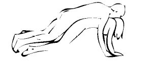
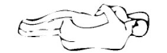

CİNSELLİK - CİNSEL SORULAR
1. Öpüşmekle AIDS kapılır mı?
Ara sıra bununla ilgili bazı söylentiler çıkmasına rağmen, HIV virüsünün öpüşmekle hiçbir şekilde insandan insana geçmeyeceği tespit edildi. Tükürükte virüs bulunabilir, ancak konsantrasyonu o kadar düşüktür ki, risk taşımaktan uzak kalır. Virüsün en çok bulunduğu sıvılar kan, sperm ve vajinal akıntıdır. HIV’den korunmanın en iyi yolu prezervatif kullanmaktır.
2. Vajina kokusu sevilmediği zaman ne yapılabilir?
Her kadının vajinası hafif asitli bir koku salgılar, bu son derece normaldir. Bu kokunun erkekler için baş döndürücü ve uyarıcı olduğunu ekleyelim. Tabii bu bölgenin hijyeni çok önemli. Vajinanızı her gün, isterseniz seksten önce de yıkayın. Ama sadece dışını. Vajinanın içini yıkamaktan kaçının. Kokusuz bir sabun kullanmanız yeterli, böylece doğal kokunuz kaybolmaz. Uzmanlar çeşitli kokulu sabunlardan ve kozmetik ürünlerden uzak durmanızı tavsiye ediyor. Çünkü bu ürünler bu bölgede yaşayan bakterilerin doğal dengesini bozup rahatsızlıklara yol açabilir. Ancak vajinal duştan kaçının. Yani ilişki sonrası hemen vajina bölgesini yıkamayı, kesinlikle tercih etmeyin.
3. Hassas bir klitorise sahip olunduğunda seks sonrası acı hissedilmesinin sebebi nedir?
Klitoris uyarıldığı zaman kabarır ve yükselir. Tekrar eski haline dönmesi ve alçalması yarım saat kadar sürebilir. Orgazm sonrası dokunmaya karşı hassas olması normaldir. Çünkü bu sırada açık pozisyondadır. Eğer ilişkinin üzerinden saatler geçtikten sonra bile acı varsa, bunun sebebi partnerinizin tekniği olabilir. Sert davranıyor olması ya da sizin aşırı derecede alkollü olmanız (alkol bu bölgenin uyuşmasını sağlar), acı hissetmenize yol açabilir.
4. Prezervatif ağızla takılabilir mi?
Bunu yapabilmek için biraz deneyimden başka bir şeye ihtiyacınız yok!
Acemiler için işte öneriler: Sperm öldürücü içermeyen bir prezervatif seçin. Çünkü sperm öldürücü maddelerin tadı kötü gelebilir. Kayganlaştırıcı kremler içeren veya çeşitli tatları olanları seçebilirsiniz. Prezervatifi baş tarafı içerde kalacak şekilde dişlerinizin arasına alın. Çok sıkı tutmayın. Yoksa dişleriniz onu patlatabilir. Sevgilinizin yada eşinizin cinsel organına yerleştirdikten sonra, prezervatifi dudaklarınızla yuvarlayın ve takın. Dudaklarınız yerine dilinizi de kullanabilirsiniz.
Daha geleneksel takılanlar için: Elle takma yöntemini hatırlatmakta fayda var. Paketi yavaşça açın ki prezervatif zarar görmesin. Prezervatifin başındaki havayı sıkarak dışarı atın ve prezervatifi takarak yuvarlamaya başlayın. İçindeki spermleri akıtmaması için ilişki biter bitmez prezervatifi çıkartın.
Ufak bir dipnot: İlişkiye başlarken, sevgilinizin yada eşinizin cinsel organına prezervatifi sizin takmanız, ona büyük bir haz verecek ve daha ateşli bir birliktelik yaşama şansınızı yükseltecektir.
5. Orgazmı kolaylaştıran nefes tekniği nedir?
Orgazma yaklaşırken nefes hızlanır ve sanki göğsün alt tarafıyla soluk alınıyormuş gibi olur. Orgazmı çok daha şiddetli yaşamak için yapmanız gereken derin nefes almak. Özellikle nefesinizi diyaframdan almak size daha çok yardımcı olacaktır.
6. Fazla seks vajinayı gevşetir mi?
Söz konusu bile değil. Tam tersi, düzenli seks vajinanın girişindeki kasları kuvvetlendirir. Bu kasların ve dolayısıyla vajinanın gevşemesine neden olan tek şey doğum ve yaşlanmadır. Bu kasların fonksiyonunu ayakta tutmak için seks dışında da egzersiz yapabilirsiniz. Örneğin tuvalete gittiğinizde kasılın ve idrarınızı tutun, sonra gevşeyin. Bu egzersizi birkaç kez tekrarlayın.
7. Bir vajina çok fazla küçük olabilir mi?
Çok küçük vajinaya pek rastlanmaz. Eğer erkek cinsel organının vajinaya girmesi sırasında sorun yaşıyorsanız, bu vajinadan dolayı değil, vajinanın girişini bloke eden ve “himen” denilen bir deri parçasından dolayıdır.
Teorik olarak vajina, içine en büyük penisi alabilecek kadar büyüktür. Ancak korku, depresif durumlar ve sinirsel dönemler vajinayı küçültebilir. Vajinanızın küçüklüğünden şikayetçiyseniz genişletme tekniklerini deneyin. Vajinaya tek tek işaret ve orta parmağınızı sokup aralarında yarım veya bir santim ara bırakmaya çalışın. Bunu yapabiliyorsanız, açıklığınız normal demektir. Ağrı duysanız bile, cinsel ilişki sırasında vajinanız ıslak olacağından bu ağrıyı hissetmeyeceksiniz. Eğer yukarıdaki egzersiz acı vericiyse, vajinaya krem sürüp sıcak suya girip öyle deneyin.
8. Fazla mastürbasyon zararlı mı?
Bir defada çok fazla mastürbasyon yaparsanız, klitorisiniz tahriş olup orgazmı imkansız hale getirebilir. Bu durum çok uzun sürmez, mastürbasyona biraz arar verirseniz her şey normale dönebilir.
9. Korunmadan ilişkiye girildiğinde hamile kalınmasını önleyecek bir şey var mı?
Korunmadan seks yaptıktan sonra oluşabilecek bir hamilelikten korunmak için 2 metot var, ama ikisinin de başarısı regl döneminizle ilgili. İlk metot, seksten sonra ilk 72 saat içerisinde alınması gereken bir hapla ilgili (Ertesi Gün Hapı: PREVEN). Eğer onu almak için geç kaldıysanız yapmanız gereken tek şey, ilk beş gün içinde doktora başvurup diğer doğum kontrol yöntemini size uygulamasını istemeniz.
Şunu hatırlatmadan geçmeyelim: İlk kez korunmasız seks yaptığınız zaman hamile kalma riskiniz, % 20’den fazla değildir. Çünkü organlarınız bu değişikliğe bakmayıp, ilk önce yumurtanın oluşmasını engelleme eğilimindedir. Ama tabii ilk ilişkide, hatta regl döneminde bile hamile kalanları unutmamak gerekiyor.
10. Oral seks sırasında sperm yutulmasının sakıncaları var mı?
Kesinlikle hayır. Hatta bu, sevgiliniz ya da eşiniz için tarif edilemez bir haz demektir. Ve tabi sizin içinde, müthiş bir ön sevişme anlamına gelir ki, birlikte olmadan önce bütün vücudunuz uyarılmış olur.
Spermler, tıpkı besinler gibi mideye gidip daha sonra vücuttan atılır. Yoksa spermler vücuda girdikten sonra başka organlara gitmez, sindirim sistemine girip sonra da dışarı atılır. Ama yutulan spermle cinsel yolla bulaşan çeşitli hastalıkları ya da HIV virüsünü kapma olasılığınız çok yüksek! Fakat tansiyonu yüksek bir birliktelik yaşamak istiyorsanız, sevgiliniz ya da eşinizle oral seks yapmaktan kaçınmayın. Zira, sevgilinizin ya da eşinizin her hangi bir cinsel hastalık taşıyıp taşımadığını sizden daha iyi hiç kimse bilemez. Eğer eminseniz, oral seksi denemenizde fayda var. Sonuçta, oral seksin ardından sevgiliniz ya da eşiniz boşaldığı zaman, onun spermlerini illa ki yutmanıza gerek yok. Üstünüze boşalarak, sadece bu zevki karşılıklı tatmanız bile son derece keyif verici.
11. Venüs tepesi nerede?
Kadınların kasık kemiği üzerinde ufak ve tepeye benzeyen bir yağ birikintisi vardır. İşte buna “Venüs Tepesi” denir. Çıplak bir şekilde aynanın önünde dururken bu yeri bacaklarınızın arasında kolayca fark edebilirsiniz. Bazı kadınların, sevgilileri ya da eşleri tarafından, Venüs tepesinden tutulurken bile orgazma ulaştıkları biliniyor.
12. Cinsel ilişki sırasında bir şey hissetmiyorsanız...
Sevgiliniz ya da eşinizle seks yaptığınız zaman, içinize girdiğini hissediyor ama ondan sonra hiçbir şey hissetmiyorsanız, ne yapmalısınız?.. Eğer sevgilinizin ya da eşinizin cinsel organı normalden küçük değilse (tam ereksiyon halinde ortalama 10 -13 cm. arası), sorun sevgiliniz ya da eşinizin sizin içinize girdiğinde ereksiyonunu koruyamamasından kaynaklanmış olabilir. Eğer içeri girdiğinde kısmen ereksiyon (dikleşme) oluyorsa, daha iyi hissetmeniz için gerekli sürtünmeyi gerçekleştiremiyor demektir. Kendinize doğru çekerek ya da kıvrak bel hareketleriyle ona yardımcı olabilirsiniz. Çünkü çoğu erkek; yorgunluk, stres, yoğun çalışma hayatı v.b. gibi sebeplerden ötürü zaman zaman bu problemi yaşayabilir.
13. Bir erkeği ereksiyon (tam dikleşme) halinde tutmak için ne yapmalı?
Sıkma tekniği uygulanabilir. Böylelikle sevgiliniz ya da eşiniz daha geç boşalacak ve sevişme süreniz uzamış olacaktır. Boşalma anından hemen önce, sevgiliniz ya da eşinizin cinsel organının başını başparmak ve ilk iki parmağınızla kavrayıp sıkıca tutun. Başparmağınız cinsel organın göbeğe bakan tarafında (penis başının üst kısmında) olmalı, diğer iki parmak dış tarafında (penis başının alt kısmında) olmalı. Penis sıkma tekniği, hem size sevişmek için süre verir, hem de sevgiliniz ya da eşinizin kendini kontrol altında hissetmesini sağlarsınız.
14. Vajina fazla ıslak olabilir mi?
Bazı kadınlar vajinalarının fazla ıslak olduklarından şikayetçi olurlar. Ancak bu tür olaylara çok nadir rastlanır. Vajinanın ıslaklığıyla ilgili ortaya atılan bir teori var, o da şöyle: “Islaklığın nedeni kişiden kişiye değişebilir. Ya da, fazla heyecan, çok yüksek arzu, ön sevişmenin çok arzulu ve kadını doyurucu geçirmesi gibi.”
Belli bir cinsel hayata alışık olan bir kadın, sevgilisi ya da eşiyle bir süre çeşitli sebepler yüzünden birlikte olmaz ve uzun bir aradan sonra sevgilisi ya da eşiyle tekrar bir birlikteliğe başlarsa, normalinden daha fazla vajina ıslaklığı yaşayabilir. Bu tamamen psikolojiktir ve sevgilisine ya da eşine, cinsel yönden duyduğu açlığı belirtir. Hatta kadın için, uzun bir aradan sonra, sevgilisinin ya da eşinin yanında olmak bile ıslaklığa neden olabilir. Böyle bir durumda, uzun zamanın ardından tekrar bir araya gelen sevgililerin ya da eşlerin, uzun öpüşme anlarında bile, kadın aşırı vajina ıslaklığı yaşayabilir. Bu son derece normaldir. Fakat çok da sık karşılaşılan bir durum değildir.
15. “Frijit” tam olarak ne demek?
Cinsel isteksizlikle eş anlamlı bir kelime. Genelde partneri kadar sık seks istemeyen kadınlara “frijit” yaftası yapıştırıldığını da unutmayın tabii... “Frijit”liğin fizyolojik ya da duygusal birçok nedeni olabilir. Orgazma ulaşma güçlüğü çeken kadınlar için şunları söylemek gerekiyor. Ne olursa olsun, rahatlamaya çalışmalılar veya daha uzun bir ön sevişme yaşamalılar. Ya da bazen değişik yollarla uyarılmak gerekiyor.
16. Eşimin birden fazla orgazm olmasını sağlayabilir miyim? Bir gecede kaç kez birlikte olabiliriz?
Cinsel ilişki sırasında kadınların birden fazla orgazma ulaşabilecekleri yolundaki açıklamalar, kadınlar kadar erkekleri de heyecanlandırıyor. Kadınlar kendi hislerini bildikleri ve neyle mutlu olduklarının farkında oldukları için bu konuyu daha rahat aşabiliyorlar. Oysa erkekler eşlerinin mutlaka birden daha fazla orgazm yaşaması gerektiğini düşünerek tedirginliğe kapılabiliyorlar. Hatta bunu kendi suçları olarak düşünüyorlar. Ancak bu, neredeyse tüm kadınlar için çok zor.
Bir gecelik bir sevişmede, kadının birden çok orgazm yaşaması çok düşük bir ihtimal. Fakat, birkaç kez boşalması (ikinci, üçüncü hatta dördüncü kez yaşanan gerçek anlamda tam bir orgazm sayılmamakla birlikte, yine de boşalma hazzına eş değerdir) gayet normaldir. Sevgilisinin ya da eşinin vücudunu iyi tanıyan, onu doruk noktasına taşıyabilecek kadar uyarabilen erkekler, sevgilisinin ya da eşinin birden çok boşalma hazzını tatmasını sağlayabilirler. Kadın için, bir ilişkide bir tek kez orgazma ulaşmak bile, çok büyük bir hazdır.
Erkeğin vücut anatomisi kadınınkinden çok farklı olduğu için, kadının orgazmı ile erkeğin orgazmı çok farklıdır. Kadın orgazm olduktan (gerçek anlamda tam boşalma) kısa bir süre sonra, vajina bölgesinin (vajina iç ve dış dudakları, klitoris) hassasiyetini kaybetmesiyle (uyarılmaya karşı tekrar hassas hale gelmesi), hemen yeni bir birlikteliğe (sevişme pozisyonu ve vajinanın penisle teması) başlayabilir. Fakat erkek orgazm olduktan (gerçek anlamda tam boşalma) kısa bir süre sonra, yeni bir birlikteliğe geçemez. Penisin hassasiyetini tekrar kazanması, ereksiyon (dikleşme) haline gelebilmesi ve vajinayla temasını gerçekleştirebilmesi için, en az 10 hatta 15 dakikalık bir periyot gereklidir. Bu süre, kadın için birkaç dakika bile olabilir. Kadın ile erkek arasındaki en büyük farklılıklardan biri de, yeni bir sevişme periyoduna geçme arasındaki bu zaman dilimidir.
Bir diğer konu ise, erkeğin bir gecede ideal olarak ortalama 2 kez birlikte olabilmesi (boşalma) durumudur. İki ve daha fazla birlikteliklerde (boşalma, ki gerçek anlamda bir boşalmadan bahsedilemez), penis yeteri derecede ereksiyon (dikleşme) haline gelemeyebilir. Bu durumda, vajina ve klitoris yeterli derecede uyarılmayacağı için, kadın beklediği zevki yaşayamaz.
17. Kadınlar da boşalır mı?
Fazla sayıda olmamakla birlikte bazı kadınlar da orgazm sırasında boşalırlar. Açık renkli, meniye benzeyen ama içinde sperm bulunmayan bir sıvıdır bu. Çok ender olmamakla birlikte normal bir olaydır. Fakat her zaman birbirine karıştırılan bir olay vardır. Kadının boşalması demek, illa ki erkeğinki gibi bir sıvı salgılaması demek değildir. Kadının boşalması, genel bir kavramdır. Bu nedenle, her “orgazm” aynı zamanda kadın için “boşalma” anlamına gelir. Yani her kadın, eğer ilişki sırasında orgazm olabiliyorsa “boşalmış” demektir. Fakat bu, “bir sıvı salgılaması” değildir.
18. Bir erkeğin penisi maksimum ölçüsüne ne zaman ulaşır?
Genellikle 17 yaşında. Ayrıca bu yaşta seks gücü, enerjisi ve isteği de zirvededir. Ancak yine de erkeklerin kadınları sekste en iyi tatmin ettikleri yaşlar 26-32 arasıdır. Erkeklerin seks güçleri 17 yaşında olduğundan daha azdır ama bu konudaki tecrübe ve bilgileri daha fazladır.
19. Klitoris ve penisin dokusu aynı mıdır?
Evet. Anne karnındaki gelişmelerinin ilk 4 haftasında, bütün cinsel organlar ceninin genital bölgesindeki küçük bir kabarıklık halindedir. Ancak bundan sonra gelişirler ve kadın yada erkek cinsel organı şeklini alır. Dolayısıyla klitoris aslında penisin küçük bir modelidir ve onunla aynı duyarlı dokuya sahiptir.
20. Kadının tatmin olması için penisin uzunluğu mu yoksa kalınlığı mı daha önemli?
Kesinlikle kalınlığı. Bu, hep yanlış bilinen bir olaydır. Penisin uzunluğunun vajina için hiçbir önemi yoktur. Önemli olan kalınlığıdır.
Vajina girişi, zevk almayı sağlayan sinir uçlarıyla kaplıdır ve penis ne kadar kalın olursa, bu bölgede o kadar çok uyarım olur. Orgazm sırasında kasılan kaslar da vajina girişindedir ve çok duyarlıdır. Kısacası penis çok uzun olmasa da kalınlığı çok önemlidir.
Bilimsel gerçek şudur. Kadın, sevişme anında aldığı zevki vajina ve klitoristen alır. Vajinanın da tamamı, zevk alması için uygun değildir. Bir kadının vajen uzunluğu (vajina boyu), ortalama olarak 20 cm. civarındadır (vajina dış dudaklarından, rahim içine kadar uzanan bölge). Vajinanın bu uzunluğunun, sadece ilk 1/3’lük kısmı yani vajen dış dudaklarından başlayıp ilk üçte birlik kısmı (bu da yaklaşık 7-8 cm. demektir) sinir dokuyla kaplıdır. Dolayısıyla kadının zevk almasını sağlayan sinir dokusu ve kas yapısı, bu 7-8 cm.’lik kısımda bulunur. Daha içteki 2/3’lük kısmı ise, sinir dokusu barındırmadığı için, her hangi bir şekilde zevk almasını (uyarılma ve orgazm) sağlamaz. Bu nedenledir ki, ortalama bir penis uzunluğu (tam ereksiyon halinde iken, 10-14 cm. arası) kadın için yeterlidir. Çünkü kadına asıl zevki veren, vajen uzunluğunun ilk 7-8 cm’lik kısmı sinir dokuyla kaplı olduğu için, penisin sadece 8-10 cm’lik kısmıdır. O da, eğer yeterli kalınlıktaysa. Hatta 13-14 cm.’den uzun bir penis, kadına zevk yerine acı verir.
Ortalama penis kalınlığının ise, ereksiyon (tam dikleşme) halinde 1,5 cm. (bir buçuk santimetre) civarında olması yeterlidir.
21. Seks kalbi nasıl etkiler?
Sevişmek kan basıncını yükseltir ve kalp atışlarını normalin iki katı hıza çıkarır. Yani seks; spor yapmak, yürümek, koşmak gibidir. Düzenli olarak spor yapmak kalbi nasıl güçlendiriyorsa seks de aynı şekilde güçlendirir. Ancak ileri yaşlarda kalp, bu kadar hareketi kaldıramayabilir.
22. Mastürbasyon yapan bir insanın daha sonra kendini suçlu hissetmesi normal midir?
Evet. Araştırmalar, kendilerini tatmin edenlerin yarısının sonradan suçluluk hissine kapıldıklarını ortaya koyuyor. Oysa uzmanlar mastürbasyon yapmanın çok sağlıklı bir insan davranışı olduğu konusunda hemfikirler. Bu şekilde, bir başkasıyla sevişmenin de öğrenildiği ve kişinin cinsiyeti ne olursa olsun, bedenini tanıması ve sevmesi gerektiği ileri sürülüyor. Ayrıca mastürbasyon yapan kadınların, yapmayanlara göre orgazm olmaya daha yatkın oldukları da bilimsel bir gerçektir.
23. Erkeklerden, boşaldıkları zaman niçin bazen çok bazen de az meni gelir?
Öncelikle rahatlayın, bunun aldıkları zevkle hiçbir ilgisi yok. Yani, sevişmeden çok fazla zevk alan bir erkek, bazen çok az boşalabilir. Bu tamamen, en son boşaldığı anın üzerinden geçiş zamanıyla ilgilidir. Aradan ne kadar çok zaman geçmişse, patlama da o kadar büyük olur. Aynı zamanda, aradan geçen zaman fazlalaşmışsa (birkaç gün gibi), bir erkeğin ilk boşalması da çok kısa sürede olur. Bu yüzdendir ki, bir gece de yaşanan ikinci birleşme de (sevişme), erkek gerçek periyodu yakalayabilir ve daha geç boşalır.
24. Erkek orgazmı geciktirmek için seks sırasında başka şey düşünür mü?
Kesinlikle doğru!.. Erkek, sevgilisinin ya da eşinin orgazm olmasını beklerken, kendi boşalmasını geciktirmek için duygularını yavaşlatır. Bu nedenle tamamen ilgisiz şeyler düşünmeye başlar. Bu yöntem tüm erkeklerin uyguladığı bir geciktirme şeklidir. Ancak uzmanlar bunun, beynin ve bedenin ayrılmasına neden olduğu için, erkeği yorduğunu söylüyorlar. Erkek seksten uzaklaşmak yerine gevşemeyi denemeli, kısa aralar vererek bedeninin aşırı yorgun düşmesini engellemelidir. Kadın da, erkeğin daha geç boşalmasına yardımcı olmalı ve birleşme anındayken, karşılıklı birkaç kez kısa aralar vermesine ses çıkarmamalıdır. Verilen bu aralarda, birleşmenin heyecanının düşmemesi ve sevişme psikolojisinden çıkılmaması için, karşılıklı olarak birbirlerinin vücutlarını okşamaları, erojen bölgelerin el ya da dille uyarılması (vajina, göğüs gibi; penisle fazla temas olmamalıdır, çünkü zaten penisin hassasiyetini ve boşalmayı geciktirmek için kısa ara verilmiştir) gerekir.
25. Sevişme bittikten sonra erkek, kadından daha az mı duygusal olur?
İşte her kadının hayatında, yataktayken mutlaka bir kez aklından geçen cümle! “Ay ne duygusuz adam, döndü sırtını nasıl da yatıyor” diye iç geçirenler ve bunun nedenini bir türlü çözemeyenlere işte bir uzman yanıtı… Çünkü erkek sevişirken, kadından daha çok fiziksel enerji harcar ve orgazmı da çok yoğun ve şiddetli olarak yaşar. Bu nedenle dinlenmesi için zamana ihtiyacı vardır. Bu yüzden seks bitince ya hemen uyur ya da duygusuzlaşıp Tv karşısına geçer!..
CİNSEL BÖLGELER
Kadınların cinsel coşkuları ağır ağır artar. Başlangıçta hafif temas, okşama ve öpüşme cinsel heyecanın uyandırılması için en uygun yöntemlerdir. Sevişmenin başında erkeğin, kadının temel erojen bölgelerini (cinsel organ ve göğüsler) değil, ikincil olanları (yüzü, boynu, kolları, sırtı, belkemiğini ve tabii kalçaları) uyarması daha doğru olur!
Dudaklar
Sevdiğiniz kişinin dudaklarına kondurduğunuz minik bir öpücük bazı zamanlar dünyalara bedel olabilir. Hele bir Fransız öpücüğü sizi unutulmaz kılacaktır.
Eller
Eller vücudun en hassas yerlerindendir. Sevgilinizin ya da eşinizin ellerine yapacağınız bir masaj onun bütün stresini alacak ve rahatlamasına yardımcı olacaktır. Sevgilinizin ya da eşinizin parmaklarını dudaklarınız üzerinde gezdirerek onu tahrik bile edebilirsiniz. Onun parmaklarını kendi vücudunuzda gezdirerek hem kendi duygularınızı hem de onunkileri harekete geçirebilirsiniz.
Boyun
Sevgilinizin ya da eşinizin boynunu öpmeyi, hatta yumuşakça ısırmayı hiç denediniz mi? Denemediyseniz hemen bir vampir harekatına geçin ve sevgilinizin boynuna doğru yönelin, bakalım neler oluyor!
Saç Dipleri
Sevgilinizin ya da eşinizin saçlarını yumuşak dokunuşlarla ensesinden yukarıya doğru hafifçe okşamayı sakın ihmal etmeyin!
Karın
Karın ve cinsel organ arasında kalan bölge oldukça hassastır. Bu bölgeye yumuşak el masajları yaparsanız sevgiliniz ya da eşiniz üzerinize saldırmamak için kendisini zor tutacaktır. Krem kullanırsanız el hareketlerinizi daha da yumuşatabilirsiniz. Masajdan sonra göbek deliğine de küçük bir öpücük kondurmayı unutmayın!
Kulaklar
Kulaklar sadece duymaya yarar sanıyorsanız yanılıyorsunuz! Kulaklara kondurulan ateşli bir Fransız öpücüğü, sevgilinize ya da eşinize unutulmaz birkaç saniye yaşatacaktır.
Ayak Bilekleri
Çoğu insanın cinsellikte pas geçtiği bölgelerden biri de ayak bilekleridir. Ayak parmaklarına ve bileklere uygulayacağınız rahatlatıcı bir masajla sevgilinizi ya da eşinizi kolayca baştan çıkarabilirsiniz.
Sırt
Boyundan başlayan dokunuşları yavaş hareketlerle kürek kemiğine doğru kaydırarak önce sevgilinizi rahatlatın. Bu sırada yanaklarına da öpücükler kondurarak onu iyice uçurabilirsiniz. Daha sonra göğüs kafesine doğru ilerlettiğiniz ellerinizle ona öldürücü darbeyi vurun.
REGL HALİ (ADET GÖRME)
Düzenli Adet Görme
Üreme çağında olan bir kadında ortalama 28 günde bir tekrar eden sürece “adet döngüsü” adı verilir.
Adet kanamasını tarif etmek için dilimizde halk arasında farklı ifadeler kullanılmaktadır. Bunlar arasında en sık rastlanılanları “aybaşı olmak”, “adet olmak”, “adet görmek”, “regl olmak”, “menstruasyon kanaması görmek” (menstruasyon İngilizce’de adet kanamasının tam karşılığı olan menstruation kelimesinden dilimize aktarılmıştır), “mens olmak”, “kanama görmek”, “peryod” ve “hastalanmak” ifadeleridir. Daha ender rastlanan ve olayın tam karşılığı olmaktan uzak olanlar ise “kirlenmek” ve “renkli olmak” şeklinde olanlardır.
Adet döngüsü veya siklus, son adet tarihinin ilk gününden bir sonraki adet tarihinin ilk gününe kadar geçen zamanı ve bu zaman içinde kadın vücudunda gerçekleşen olayları ifade eder.
Bir adet döngüsü, kadında genellikle 28 gün sürmekle birlikte 21 ile 35 gün arası normalin alt ve üst sınırlarıdır. Adet kanaması ortalama 4 gün devam eder ve 1 ile 7 gün arası normalin alt ve üst sınırları olarak kabul edilir. Adet kanaması esnasında 20 ile 80 mililitre arasındaki miktarda kan kaybedilir.
Adet döngüsü ergenlik döneminden, yumurtalıklarda olgunlaşabilecek yumurta hücrelerinin tümüyle tükendiği menopoz dönemine kadar devam eder. Bu zaman dilimi içerisinde gebelik döneminde ve emzirmenin devam ettiği sürenin büyük kısmında geçici olarak duraklar.
Adet Kanamasının Ay İle İlgisi Var mı?
Kadınların bir kısmı adet kanamasını “aybaşı” olarak tarif ederler. Bu, insanoğlunun “ay” ile kadının adet döngüsünü çok önceden beri ilişkilendirdiğini gösteren önemli bir bulgudur. Aynı ilişkilendirme yabancı dillerde de yaygındır.
“Menses”, Latince’de “adet kanaması” anlamına gelmekle beraber yine bu dilde aynı zamanda “ay” anlamına gelen “mensis” kelimesinin çoğuludur. Yani “aylar” anlamına da gelmektedir. Bu kelime Latince’ye muhtemelen Yunanca’da “ay” anlamına gelen “mene” kelimesinin aktarılmasıyla türetilmiştir.
Ay ile adet döngüsü ve kanaması arasındaki en önemli benzerlik, dünyanın uydusu olan Ay’ın da aynen adet döngüsü gibi kendine özgü bir döngüsü olmasıdır. Bu döngünün başından sonuna doğru ay dünyamızda farklı şekillerde görünür. Ay’ın bir döngüsü 29.5 gün sürer ve bu döngüde bir şaşma olmaz.
Bazı kültürlerde tüm kadınların aynı zamanda adet gördüklerine ve kadınların hepsinin “Ay” ile birlikte çeşitli ruhsal ve bedensel evrelerden geçtiklerine inanılmaktadır. Bilimsel olarak kanıtlanmamış, ancak Amerikan halkının kullandığı bir yönteme göre adet düzensizliği olan kadınlar, odalarında ay ışığını temsil eden hafif bir ışığı açık bırakarak uyumakta ve iddialarına göre adetleri düzene girmektedir.
İlk “Adet Kanaması”
Çocukluk çağından ergenlik çağına geçiş döneminde, ortalama olarak 12.5 yaşında kız çocuğu ilk adet kanamasını görür. Bu “ilk kanama” henüz yumurtlama süreci devreye girmediğinden, gerçek ve düzenli aralıklarla oluşan bir adet kanaması olmaktan uzaktır. Kız çocuğunun hormon salgı mekanizmaları ve genital organları olgunlaştığında yumurtlama süreci de başlar ve oluşan adet kanamaları, adet döngüsünün bir parçası olarak düzenli hale gelir.
Adet Kanamasının İşlevi Nedir?
Adet döngüsü esnasında beyinde, yumurtalıklarda ve rahim iç tabakasında, farklı olaylar meydana gelir. Beyinden salgılanan hormonların yumurtalıklardan birini uyarmasıyla başlayan süreç, uyarılan yumurtalıktan döllenmeye hazır bir yumurta hücresinin serbestleşmesine neden olur, bu esnada rahim iç tabakası da kendini, muhtemel bir gebeliğe hazırlar. Döllenme gerçekleşmediğinde, serbestleşen yumurta hücresinin ömrü biter ve gebelik için hazırlanmış rahim iç tabakasının adet kanamasıyla dışarı atılmasını takiben yeni bir adet döngüsü başlar.
Adet kanamasının amacı her adet döngüsünde oluşabilecek muhtemel bir gebeliğin yerleşebilmesi ve uygun şartlarda gelişebilmesi için, rahim iç tabakasının “tazelenmesi” olarak değerlendirilebilir.
Adet Döngüsü Uzunluğu
Adet döngüsünün süresi, yani adet kanamasının ilk gününden bir sonraki adet kanamasının ilk gününe kadar geçen zaman ortalama 28 gündür. Kadınların %15’i 28 günde bir adet kanaması görürlerken, % 0.5’i 21 günden daha kısa, % 1’i 35 günden daha uzun bir zamanda kanama görürler.
Adet kanamasının ilk başladığı zamanı takip eden 57 yıllık süre içerisinde adet döngüsü genellikle daha uzundur. Hormon salgılayan sistemler olgunlaştığında, üreme çağına özgü düzenli kanama paterni ortaya çıkar.
Kadın 40’lı yaşlara geldiğinde hormon salgısındaki doğal değişiklikler döngünün yeniden uzamasıyla sonuçlanır. 28 yıl devam eden bu süre sonunda menopoz ortaya çıkar. Bu süre içerisinde adet döngüsünün uzamasını belirleyen temel olay, yumurta hücresinin olgunlaşmasına kadar geçen sürenin uzamasıdır.
ADET KANAMASININ ZAMANLAMASI
Adet kanaması, çok özel durumlarda doktor önerisiyle ve kendi kendine alınan bazı önlemlerle ileri alınabilir...
Sağlıklı bir kadın her ay genital ve hormonal sisteminin “yenilenme” sürecinin önemli bir parçası olarak 1 ile 5 gün arasında süren bir adet kanaması döneminden geçer. Kanama bazı kadınlarda iş yaşamı ve sosyal yaşamı etkileyen kramp tarzında sancılarla da beraber olabilir. Kadınların önemli bir kısmı bu adet günlerinden rahatsız olmazlar ve günlük yaşam bu kanamalardan az etkilenir.
Nitekim bazı durumlar vardır ki, burada beklenen adet kanamasının rastlayacağı tarihler hiç de uygun olmayan günlere denk gelebilir. Tam evlilik ve balayı günlerine rastlayacak olan, ya da tam önceden planlanmış bir tatile (özellikle de yaz tatiline) denk gelen bir adet kanaması, ya da yoğun bir iş temposunda oluşacak adet sancıları kadın için bir dezavantaj teşkil edebilir.
NOT: Doktor önerisiyle ve çok özel durumlarda, kendi kendine alınan bazı önlemlerle, beklenen adet kanamasının ileri alınması mümkündür. Adet kanamasının senede bir ya da iki kez, bu şekilde düzenlenmesinin kadının sağlığı üzerinde olumsuz bir etki yaratması mümkün gözükmemektedir. Fakat kesinlikle, erken menopoza girmek istemiyorsanız, adet düzeninizi senede bir kereden fazla bozmayınız.
Tarihin Kendi Kendine İleri Alınması
Bu, yalnızca doktor önerisiyle doğum kontrol hapı kullanmakta olan kadınlar için söz konusudur. İki kutu arasında normalde verilen ilaçsız bir hafta ara yerine, doğum kontrol hapı, yeni bir kutuyla adeti geciktirmek istenen süre kadar devam ettirilir. İlaç kesildiğinde, bir hafta içerisinde adet kanaması gerçekleşir. Bu yöntemi senede bir kereden fazla kullanacaksanız doktorunuza danışmalı, yöntemi uygularken doktorunuz aksini önermediği sürece maksimum ikinci kutu bittiğinde olağan bir bir hafta arayı vermelisiniz.
Bir diğer yöntemde, her hangi bir doğum kontrol hapı kullanmayan kadınların, adet geciktirmek için kullandıkları haptır. Eczanelerde, adet geciktirmek için kullanılan birkaç çeşit hap olmakla birlikte, kadınlar arasında en yaygın olarak kullanılanı; PrimolutN adlı haptır. Kutuda 30 tablet olup, 3 x 1 şeklinde dozaj uygulanır.
Tarihin Doktor Tarafından İleri Alınması
Burada progesteron içerikli ilaçlar, jinekolojik muayene normal sonuçlandıktan sonra, beklenen adet kanamasından en geç üç gün önce, ideal olarak beş gün önce başlanır ve geciktirilmek istenen sürece devam ettirilir. Adet kanamasına üç günden daha az süre kaldığında ilacın adeti geciktirme olasılığı düşüktür. Bu yöntemi asla eczaneden aldığınız ilaçlarla kendiniz denememelisiniz. Jinekolojik muayene esastır.
UYGUN OLMAYAN YÖNTEMLER
Geciktirici İğne ve Haplar
Ülkemizde eczaneye gittiğinizde çoğu durumda doktor muayenesi olmadan şikayet ve arzulara göre ilaç verilebilmektedir. Bu durum adetini belli bir süre geciktirmek isteyen kadınlar için de geçerlidir. Ancak hormon içerikli ilaçların doktor muayenesi ve onayı olmadan kullanılması istenmeyen bazı yan etkilere yol açabileceğinden bu kolay yol tercih edilmemelidir.
Söktürücü İğneler
Esasen gebelik dışında bir nedene bağlı olarak gecikmiş adet kanamasını “söktüren” bu ilaçlar, bazen hatalı olarak beklenen adeti öne almak için kullanılmakta ve % 100 başarısızlıkla sonuçlanmaktadır. Bu ilaçlardan sonra oluşan tesadüfi kanama adet kanaması değil ara kanamasıdır. Yine eczaneden reçetesiz olarak temin edilebilen bu ilaçlardan kaçının.
VAJİNAL DUŞ
İlişkiden hemen sonra vajen içinin yıkanması işlemine “vajinal duş” adı verilir. Vajinal duş aynı zamanda, vajinal akıntı ya da diğer materyali mekanik olarak temizlemek için, vajina içini basınçlı su ya da başka bir sıvı ile yıkamak anlamına da gelir. Öte yandan, vajinal duş için kullanılan çeşitli parfümlü materyal ya da ilaç da mevcuttur.
Kadınlar Neden Vajinal Duş Yaparlar?
• Adet kanaması sonrası vajinada kalan kanı temizlemek için.
• Cinsel ilişki sonrası hamile kalmamak ya da cinsel yolla bulaşan hastalıklara karşı korunmak için (vajinal duş ne gebelikten korur ne de cinsel yolla bulaşan hastalıklara karşı koruma sağlar).
• Vajinal kokuları azaltmak için.
• Kendilerini, psikolojik yönden daha rahat hissetmek için.
Vajinal Duş’la İlgili Bilimsel Gerçekler
Vajina bölgesinde kötü koku olan kadınlar, mutlaka jinekologlarını ziyaret etmelidirler. Vajinal duş, durumu düzeltmek yerine daha da kötüleşmesine neden olur.
Bazı kadınlar düzenli olarak vajinal duş yapmadıkları taktirde, kendilerini temiz hissetmezler.
Doktorlar, kronik vajinal mantar enfeksiyonu ya da kronik bakteriyel enfeksiyon varlığında, tıbbi olarak içerisinde bazı özel solüsyonlar ile vajinal temizlik önerebilirler. Bu amaçla yapılacak olan vajinal duş ise, yalnızca doktorunuzun önerisiyle ve onun reçete edeceği solüsyonlar ile yapılmalıdır.
Vajinal Duş, Korunma İçin Yeterli midir?
Yetersiz bir yöntemdir. Çünkü spermler, vajina içine boşalmalarından 90 saniye sonra bile rahime ulaşabilirler. Yani, boşalmanın gerçekleşmesinden sonra vajeni suyla temizleseniz bile, spermler çoktan rahim ağzını geçerek tüplere doğru yönlenmiş olabilir.
Bu yöntemle korunmaya çalışan kadınlar, yetersiz korunmalarının yanı sıra, tekrarlayan enfeksiyon riski taşırlar.
Vajenin iç örtüsü, bu bölgeyi koruma altına alan özel flora ve salgılarla kaplanmıştır. Vajinal duş/yıkama bu doğal korunma örtüsünü ortadan kaldırır. Enfeksiyon etkenleri, korunmasız kalan vajen iç dokusuna nüfuz ederek kötü kokulu akıntı vb. kronik şikayetlere neden olur.
Vajinal Duş Sağlıklı mıdır?
Bu sorunun tek ve kesin bir cevabı vardır: HAYIR!
Özellikle gebelikten korunmak için vajinal duş uygulaması son derece etkisiz bir yöntemdir. American Journal of Public Health dergisinde yer alan bir araştırmaya göre, vajinal duş bir kadının hamile kalma olasılığını sadece % 30 oranında azaltmaktadır.
Düzenli yapılan vajinal duş, kadının vajinadaki kimyasal dengesini bozarak enfeksiyonlara eğilimli hale gelmesine neden olur. Duş sırasında yeni mikroorganizmaların vajinaya girişine neden olunabilir. Bu mikroplar rahim ağzı, rahim ve tüplere ulaşarak ciddi enfeksiyonlara neden olabilirler. Yapılan araştırmalar, düzenli vajinal duş yapan kadınlarda bakteriyel vajinozis (vajinal duşun çok sık yapılmasıyla oluşan enfeksiyon türü) başta olmak üzere çeşitli vajinal enfeksiyonlarla, cinsel yolla bulaşan hastalıklara daha fazla rastlanıldığını ortaya koymaktadır.
Daha ciddi bir komplikasyon ise, pelvik iltihabi hastalığıdır (PID). Düzenli olarak vajinal duş yapan kadınlarda, pelvik iltihabi hastalığı geçirme riski % 78 daha fazladır. PID uzun dönemde kısırlık ve hatta tedavi edilmediği taktirde, hayati tehlikeye neden olabilen bir durumdur.
Bu nedenle rutin temizlik için düzenli vajinal duş yapılması sağlıklı değildir ve günümüzde kesinlikle önerilmemektedir. Vajinayı temizlemenin tek güvenli ve sağlıklı yolu, vajinanın kendi kendini temizlemesine izin vermektir. Vajinadaki kimyasal denge çok hassastır ve bu dengedeki küçük sapmalar bile, ciddi olumsuz etkilere neden olabilmektedir.
Vajina Kendi Kendini Nasıl Temizler?
Vajina, kendi mukus salgısı ile kendi kendini doğal olarak temizleme yeteneğine sahiptir. Bu nedenle; ilişki sonrası, tuvaletten sonra ya da yıkanırken (duş, banyo) vajina içini yıkamamaya özen gösterin. Dış bölgeleri temizlemek için, ılık su ve parfümsüz beyaz sabun kullanabilirsiniz. Doktorunuz önermedikçe; kadın hijyenine yönelik sabun, sprey, pudra türü maddelerin kullanımı yeterli bir vajinal temizlik için gerekli değildir. Üstelik bu tür maddeler vajinada irritasyon (mantar ve başlangıcı) ve alerjik reaksiyona neden olabilir.
NOT
Kadınların, duş ya da tuvalet ihtiyacından sonra “dış vajina temizliğini”, şu şekilde yapmaları önerilir. Duş veya banyo esnasında su kullanarak elle ya da yine su kullanarak her hangi bir parfümsüz beyaz sabunla yapılacak olan temizlik; vajinanın ön bölgesinden (klitoris başlangıcından), anüse (dışkılık) doğru olmalıdır. Yani, önden arkaya (dıştan içe doğru) doğru yapılmalıdır. Tuvaletten sonra yapılacak olan temizlik ise, yine duş temizliğinde olduğu gibi, önden arkaya (dıştan içe) doğru yapılmalıdır.
Bu temizlik işlemlerinde, yukarıda bahsedildiği gibi, kesinlikle vajina içi yıkanmamalıdır.
Kadınlar tarafından bazen yapılan hata, içten dışa yani anüsten klitorise doğru vajina temizliğinin yapılmasıdır. Bu işlem, enfeksiyona neden olabilecek bakteri ve mikroorganizmaların, vajinanın içine yerleşmesine sebep olur ve çok tehlikelidir.
Aşağıdaki Durumlarda
Jinekoloğunuzla Görüşmelisiniz
• Vajinada ağrı.
• Vajinada yanma hissi.
• Vajinada kaşınma.
• Vajinadan kötü koku gelmesi.
• İdrar yaparken yanma.
• Normal akıntıdan daha farklı türde ve renkte, içinde peynir kesiği ya da kireç benzeri parça içeren akıntı.
NOT
Muayeneye gitmeden önce asla vajinal temizlik yapmayınız. Bu tür bir temizlik, vajinal akıntıyı uzaklaştırarak jinekoloğunuzun tanıya ulaşmasını güçleştirir.
Vajinal duş, bir doğum kontrol yöntemi değildir ve cinsel yolla bulaşan hastalıklara karşı koruyucu değildir.
Kadınların, vajinalarını su dışında bazı solüsyonlarla (oksijenli su, sirkeli su, bitki suları vb) yıkamaları da, aynı şekilde etkisiz ve zararlıdır. Bu yöntemi bırakmalı, doktorunuzdan daha etkin ve sağlıklı bir korunma yöntemi istemelisiniz.
HAMİLELİK - GEBE KALMAK İSTİYOR MUSUNUZ?
İstemelerine rağmen gebelik elde edemeyen çiftlerden bazılarında altta yatan problem, uygun zamanda ve yeterli sıklıkta ilişkinin olmaması ya da uygulanan yanlış yöntemler gibi çok basit nedenler olabilir.
Kadınların herhangi bir ayda gebe kalma olasılıkları % 20 ile % 25 arasındadır. Çiftler bilgi eksikliği nedeni ile yaptıkları bazı davranışlar yoluyla, bu olasılığı azaltabilirler. Kısır olduklarını düşünen bazı çiftlerde alınacak basit tedbirler ve uygulanacak çok kolay yöntemler ile, hiçbir tedaviye gerek kalmadan gebelik elde edilebilir.
UYGUN ZAMAN EN UYGUN HAMİLELİK DÖNEMİ
Takvim Metodu
Adet görülen ilk günü 1. gün ve toplam zamanı 28 gün olarak kabul edersek.
01-10. gün = Gebelik şansı düşük
10-11. gün = Gebelik şansı orta
12-16. gün = Gebelik şansı yüksek
17-18. gün = Gebelik şansı orta
19-28. gün = Gebelik şansı düşük
Gebelik isteyen çiftler için cevaplandırılması gereken ilk soru, en uygun zamanın ne olduğudur. Düzenli adet gören kadınlarda, yumurtlama genelde adet siklusunun (döngüsünün) 14. gününe denk gelir (adet kanamasının başladığı günden itibaren 14. gün). Ancak yumurtlama tarihinde sapmalar olabileceği ve sperm ile yumurta hücresinin kadın vücudu içinde yaşama potansiyeli göz önüne alındığında, 9 ile 15. günler arasında gün aşırı cinsel ilişki olması gebelik şansını yükseltir.
İlişkinin her gün önerilmemesinin sebebi erkeğin sperm kalitesini düşürmemektir. Her ilişkiden önce erkeğin en az 48 saat süreyle boşalmaması, özellikle sperm sayısı düşük ya da sınırda olan erkekler için yararlıdır. Alınabilecek başka bir önlem de ilişkinin sabah olmasıdır. Boşalmanın olmadığı geceyi takip eden sabah, erkeğin sperm düzeyleri en yüksek sayıdadır. Ancak, ilişkiler yaşanırken “bugün mutlaka ilişkide bulunmamız gerekir” şeklinde stres yaratmak gebelik açısından olumsuz etki gösterir. Bu stresi gidermek için olayı kendi haline bırakmak veya egzersiz, yürüyüş gibi stres giderici faaliyetlerde bulunmak gereklidir. Unutulmamalıdır ki üreme sistemini yöneten bütün hormonlar hem fiziksel hem de ruhsal strese karşı hassastır.
UYGUN ŞEKİL
Gebelik için uygun dönem saptandıktan sonra ikinci aşama, cinsel birleşmenin şeklidir. Pek çok pozisyon gebelik için uygun ortam yaratmaz. Normal bir ilişki sonrası gebelik oluşabilmesi için, spermlerin vajinaya uygun şekilde bırakılması ve vajinanın, spermlerin rahim içine doğru ilerleyebilmesi için uygun pozisyonda durması gerekir. Bu şartları sağlayan pozisyonlar; erkeğin üstte olduğu, kadın ve erkeğin yana doğru dönük olduğu pozisyonlar ile kadının dizdirsek pozisyonunda olduğu şekillerdir. Erkeğin üstte olduğu durumda, kadının kalçaları altına bir yastık yerleştirerek pelvisini yükseltmesi spermlerin doğru yönde ilerlemelerine yardımcı olur. Dizdirsek pozisyonu ise, özellikle sperm sayısı düşük olan durumlarda ek fayda sağlar. Oturur pozisyonda, kadının üstte olduğu veya ayakta olan cinsel ilişkiler, gebelik elde etmek için uygun değildir.
İnsanlarda cinsel ilişkinin amacı, büyük ölçüde haz almak olmasına rağmen, biyolojik amacı soyun devamını sağlamak yani gebelik elde etmektir. Bu amaç dışında birleşme, doğada sadece insanda ve birkaç türde daha olmaktadır. Gebelik elde etmek isteyen çiftler bu nedenle ilişki esnasında bazı etkinliklerden kaçınmalıdırlar. Bunların başında oral seks gelir. Tükürük içinde bulunan birtakım enzimler ve bakteriler spermlerin dölleme kabiliyetini azaltır, hatta spermlerin ölümüne neden olabilir. Benzer şekilde anal seks de sperm aktivitesi üzerinde olumsuz etki yaratabileceğinden, bu tür ilişkilerden kaçınılmalıdır. Yine benzer mekanizma ile ilişki esnasında kullanılabilen kayganlaştırıcılar da sakıncalıdır. Özellikle petrol bazlı olan vazelin, masaj yağları gibi maddeler kesinlikle kullanılmamalı, mutlaka kayganlaştırıcı kullanılması gerekiyor ise, su bazlı olanlar tercih edilmelidir. Gebelik arzulayan çiftlerin su altında veya içinde ilişkide bulunmaları vajenin pH’sı bozulacağından sakıncalıdır. Sıcak su da sperm sayısı ve hareketliliğini bozacağından önerilmez.
İLİŞKİ SONRASI
Eğer ilişki sonrası kadın hemen ayağa kalkarsa, fazla miktarda meni dışarıya kaçacaktır. Spermler rahim ağzına ulaşacak yeterli zamanı bulamadıkları için, bu durum gebelik elde edilmesi açısından önemlidir. Gebe kalmak isteyen bir kadın, ilişkiden hemen sonra ayağa kalkıp idrar yapmaya ya da yıkanmaya gitmemelidir. İdeal olan, kalçalarının altına bir yastık koyarak 20-30 dakika kadar yatmasıdır. Erkek de, meni kaçağını azaltmak için birkaç dakika kadar kendini geri çekmemelidir (boşalma ve boşalma gerçekleştikten sonra, birkaç dakika vajina içinde kalmalıdır).
Vajina, dışarıdan kullanılan herhangi bir maddeye gereksinim duymadan kendi kendini temizleyebilen ve uygun ortamını yaratan bir organdır. Adet kanaması ve ilişki sonrasında dahi vajina sağlıklı kalabilmek için kendi önlemini alır (eğer ilişkiden sonra kötü bir koku duyuluyor ise bu enfeksiyonun belirtisi olabilir ve doktor kontrolü gerekir). Sadece gebelik isteyenlerde değil, hiçbir kadında “vajinal duş” önerilmez. İlişki öncesi yapılan duş, vajen pH’sını değiştireceğinden gebelik şansını olumsuz yönde etkiler. Spermin yaşama şansı tehlikeye girer. İlişkiden hemen sonra yapılan duş ise spermleri ortamdan uzaklaştıracağından, şansı azaltır. Ayrıca “vajinal duş”, bakterileri kadın üreme sistemi içinde yukarılara doğru zorlayarak enfeksiyon ve dolayısı ile, “İNFERTİLİTE (Kısırlık: Gebelikten korunmaksızın, bir yıl süreyle düzenli bir cinsel hayat yaşanmasına rağmen gebe kalamama durumuna İNFERTİLİTE denir)” ihtimalini arttırır.
BUNLARI MUTLAKA BİLİN
• Gebe kalmayı planladığınızda, 3 ay öncesinden korunmayı bırakın.
• Gebe kalmak için en uygun zamanda, gün aşırı (araya birer gün koyarak) ilişkide bulunun.
• Gebelik için uygun dönemdeki ilk ilişkiden önce ve iki ilişki arasında erkeğin en az 48 saat boşalmaması gerektiğini unutmayın.
• Sabah erken saatte ilişkide bulunun.
• Kayganlaştırıcı kullanmayın.
• Hiçbir zaman ve asla vajinal duş yapmayın.
• Vajinanın doğal duruşunu sağlayan gebelik için uygun pozisyonları tercih edin.
• Alternatif seks yöntemlerinden uzak durun.
• Su altında ilişkide bulunmayın.
• İlişki sonrası erkek 1-2 dakika geri çekilmemeli, kadın ise 20-30 dakika yatar pozisyonda kalmalıdır.
ERTESİ GÜN HAPI (ACİL DOĞUM KONTROL KİTİ) - “ACİL DOĞUM KONTROL KİTİ” NEDİR?
Korunulduğundan şüphe edilen ya da korunmasız cinsel ilişki sonrasında istenmeyen gebeliği 72 saat içinde önleyen bir acil doğum kontrol ürünüdür. Erken düşüktekinin aksine, Acil Doğum Kontrol Kiti başlangıçtan itibaren gebeliği önlemekte ve oluşmuş bir gebeliği sonlandırmamaktadır. Acil Doğum Kontrol Kiti, “ERTESİ GÜN HAPI” olarak da bilinmektedir.
Milyonlarca çift cinsel ilişkileri sırasında yeterli doğum kontrolü uygulamamaktadır (prezervatifin yırtılması, doğum kontrol hapının unutulması). Ayrıca hiç doğum kontrol yöntemi kullanmayan pek çok kadın da istenmeyen gebelik riski altındadır. Dünya Sağlık Örgütü verilerine göre, her yıl istenmeyen gebeliklerin neden olduğu en az 20 milyon güvenli olmayan düşük gözlenmektedir. Bu düşükler sırasında ise 80 bin kadar kadının ölümü söz konusu olmaktadır. Amerika Birleşik Devletleri’nde yılda 5,4 milyon gebeliğin yarıya yakını istem dışı olan gebeliktir. Acil Doğum Kontrol Kiti kullanımı ile Amerika Birleşik Devletleri’nde yaklaşık 1,7 milyon planlanmamış gebelik ve 800 bin düşük önlenmektedir.
Ülkemizde ise, her yıl yaklaşık 2 milyon kadın gebe kalmaktadır. Bunlardan yaklaşık 1 milyon 300 bini istenmeyen gebeliktir. Ve tespit edilebilen 920 kadın bu istenmeyen gebelikler nedeniyle hayatını kaybetmektedir.
Acil Doğum Kontrol Kiti’nde kullanılan acil doğum kontrol yöntemi (Yuzpe yöntemi), 1970’lerden beri uygulanmış ve binlerce kadında gebeliği önlediği saptanmıştır. Ertesi Gün Hapı Acil Doğum Kontrol Kiti, 1998 yılında FDA onaylı ilk acil doğum kontrol hapı olarak Gynetics tarafından kullanıma sunulmuştur. Aralık 2003 itibariyle de, Biomeks İlaç Firması tarafından Türk kadın ve toplum sağlığının hizmetine sunulmuştur.
ERTESİ GÜN HAPI ETKİ MEKANİZMASI
Ertesi Gün Hapı, gebeliği başlamadan önce engeller. Bu, oluşmuş gebeliğin sonlandırılmasından farklıdır. Acil Doğum Kontrol Kiti düşük hapı değildir. Avrupa’da kullanılan bazı düşük hapları, gebeliği başladıktan sonra sonlandırmaktadır. Acil Doğum Kontrol Kiti, doğum kontrol hapları ile aynı biçimde çalışır. Acil Doğum Kontrol Kiti ovulasyonu (yumurtanın salınması ve spermle birleşmeye hazırlanması) durdurarak ya da geciktirerek etki eder. Ek olarak, ovulasyon olması durumunda Acil Doğum Kontrol Kiti yumurtanın sperm tarafından döllenmesini güçleştirebilir ya da rahim tabakasında değişiklik yapıp, yumurtanın rahime tutunmasını engelleyebilir.
ACİL DOĞUM KONTROL KİTİ KULLANIMI
Acil Doğum Kontrol Kiti, kullanılmadan önce gebelik testi uygulanmalıdır. Bu test, o ay ya da daha önceki aylar içinde gerçekleşen geçmişteki bir cinsel ilişkiye bağlı olarak gebelik olup olmadığını anlamayı sağlayacaktır. Test, son 72 saat içindeki cinsel birleşmeye bağlı olarak gebelik olup olmadığı hakkında bilgi veremez; zaten hiçbir gebelik testi de bunu yapamaz. Gebeliğin belirlenebilmesi için birkaç saat değil 8-10 günlük bir süre gereklidir. Gebeliğin pozitif olması durumunda hastanın doktora başvurması önerilmelidir. Gebelik olması halinde, bu durumda bir işlevi olmayacağından Acil Doğum Kontrol Kiti kullanılmamalıdır. Acil Doğum Kontrol Kiti gebeliği başladıktan sonra durduramaz.
İlk 2 hap cinsel ilişkiden sonraki ilk 72 saat içinde mümkün olan en kısa sürede, diğer 2 hap 12 saat sonra alınmalıdır. Ertesi Gün Hapı, ne kadar erken alınırsa, etkisi o kadar fazla olmaktadır.
Acil Doğum Kontrol Kiti ile yapılan çalışmalar sonucunda bu şekilde kullanıldığı takdirde 100 kadından yalnızca 2 tanesinin gebe kalabileceği bulunmuştur.
Uyarı
Acil Doğum Kontrol Kiti, acil durumlarda kullanılmalıdır. Rutin bir korunma yöntemi değildir. Cinsel yolla bulaşan hastalıklara karşı koruma sağlamaz.
ACİL DOĞUM KONTROLÜ NE ZAMAN UYGULANABİLİR
• Cinsel birleşme sırasında hiç bir doğum kontrol yöntemi kullanılmaması.
• Erkek tarafından kullanılan prezervatifin mekanik yetersizliği (yırtılma, delinme ya da sızdırma).
• Diyafram, servikal kılıf ya da kadın prezervatifi gibi, kadın doğum kontrol araçlarının kullanılmasında, bu araçların yerinden çıkması, yırtılması ya da yanlış kullanılması.
• Erkeğin prezervatif kullanmadığı durumlarda, “Geri Çekme (Boşalma anında vajinadan hemen çıkma)” uygulamasında hata.
• Kombine doğum kontrol haplarının atlanması (birbirini izleyen herhangi iki doz).
• Rahim içi doğum kontrol aracının tamamen ya da kısmen çıkmış olması.
• Etkili bir doğum kontrol yöntemi kullanılmasına karşın, potansiyel bir teratojene maruz kalınması (Bebekte yapısal bozukluk yaratan etken anlamına gelir. Teratojen etkenler; gebelik esnasında anne adayının maruz kalması durumunda bebeği etkileyerek bebekte kalıcı bir şekil ya da işlev bozukluğuna neden olduğu bilinen etkenler ya da maddelerdir. Bu etkenler; gebelikte kullanılan çeşitli ilaçlar, gebelikte maruz kalınan radyasyon (röntgen ışınları ve radyoaktif maddeler) ve çeşitli mikroorganizmalardır (virüs, parazit gibi)).
• Tecavüze uğrama.
ACİL DOĞUM KONTROLÜ VE ÖNEMİ
Acil doğum kontrolü, bir doğum kontrol yöntemiyle korunulmadığı ya da yeterli korunmanın sağlanmadığı cinsel ilişkiden sonra gebeliği önlemek üzere kullanılır. Acil doğum kontrolüne gereksinim son derece yüksektir. Acil doğum kontrolünün ilk uygulanmaya başlandığı Amerika Birleşik Devletleri’nde her gün milyonlarca çift cinsel birleşme sırasında yeterli doğum kontrolü uygulamamaktadır ya da uygulamada hata yapmaktadır (örneğin yırtılmış bir prezervatif ya da unutulan doğum kontrol hapları) ve pek çok kadın bu nedenle istem dışı gebelik riski altındadır.
ACİL DOĞUM KONTROL KİTİ (ERTESİN GÜN HAPI) KULLANIM ŞEKLİ
Burada yazılı olanlar, “Acil Doğum Kontrol Kiti hapının” doğru olarak nasıl kullanacağınızı anlatmaktadır.
Talimatlara uygun bir şekilde kullanıldığında, bir cinsel ilişki sonrasında 100 kadından sadece 2’si hamile kalabilir. Eğer hiçbir doğum kontrol metodu kullanılmamışsa 100 kadından 8’i hamile kalabilir.
Diğer doğum kontrol hapları gibi, Ertesi Gün Hapları’da cinsel yolla bulaşan (Örneğin, AIDS v.b.) hastalıklara karşı bir koruma sağlamaz. Burada yazılanları okuduktan sonra, kiti tam olarak nasıl kullanacağınızı anlamadıysanız, doktorunuza veya eczacınıza başvurunuz.
Doktorunuz “Acil Doğum Kontrol Kiti’ni” korunmasız yapılan cinsel ilişki (hiçbir korunma olmaması, prezervatifin yırtılması... vb.) sonrası, istenmeyen hamileliği önlemek için reçete etmiştir.
Acil Doğum Kontrol Kiti’ndeki haplar, korunmasız cinsel ilişkiden sonra ilk 72 saat içinde mümkün olduğunca erken kullanılmaya başlandığı takdirde, hamilelik riskini azaltırlar. Zaten hamile iseniz haplar işe yaramayacaktır.
1. AŞAMA
Kiti kullanmaya başlamadan önce, broşürün tamamını okuyunuz.
2. AŞAMA
Hamilelik Testini Kullanınız (Uygulayınız)
Hamilelik testi, daha önceki ay veya aylarda zaten hamile kalıp kalmadığınızı tespit etmenize yardımcı olmak amacıyla hazırlanmıştır. Test ancak 72 saatten önce oluşan hamileliği teşhis edebilir, 72 saat içinde oluşan hamileliği teşhis edemez. Test, idrarınızda hamileliği gösteren; Human Koriyonik Gonadotropin (HCG: Hamileliğin parçası olan hücreler tarafından oluşturulan bir hormondur) adı ile bilinen bir hormonun varlığını bularak hamileliği teşhis eder.
Hamilelik Testi Nasıl Kullanılır?
• Testi tuvalette otururken yapın.
• Testi sarılı olduğu folyosundan çıkartın. Ambalajın içinden çıkan paketi (kurutucu paketi) atın.
• Test çubuğunun emici ucunu aşağıya doğru yöneltin ve ucunu en az 5 saniye boyunca idrar akışınıza tutun. Tüm uç ıslanmalıdır. Test çubuğunun pencerelerini idrar ile temas ettirmeyiniz.
• Emici ucu kaplayan koruyucu kapağı çıkartın.
• Test çubuğunu idrar akışınızdan alın. Kapağı uca geri takmanız gerekli değildir.
• Test çubuğunu pencereleri yukarı bakacak şekilde düzgün bir yüzeye yerleştirin. Test çalışmaya başlayınca, pencereler boyunca pembe/mor bir rengin hareket ettiğini farkedeceksiniz. Telaşa kapılmayın, bu testin normal gelişme’ sürecidir.
Hamilelik Testini Nasıl Yorumlayacaksınız?
Sonuçlar için, idrara tutma işlemini takiben en az 3, en fazla 20 dakika geçmesi gereklidir. KARE kontrol penceresinde pembe/mor bir çizgi gördüğünüzde test alabilirsiniz. KARE kontrol penceresinde pembe/mor bir çizgi görülen tüm testler doğru yapılmıştır. Testin geçerli olması için bu KARE kontrol penceresinde bir çizgi görmelisiniz. Eğer KARE kontrol penceresinde pembe/mor bir çizgi göremediyseniz doktorunuza danışınız.
YUVARLAK sonuç penceresinde pembe/mor bir çizgi oluştuysa hamilesiniz.
Önemli: Eğer hamilelik testinizin sonucu pozitif ise, haplardan hiçbirini kullanmayınız ve doktorunuza danışınız.
Çizgiler pembenin herhangi bir tonunda olabilirler. Önemli olan, iki düzgün ve belirgin çizgiyi görebilmenizdir.
Gebelik testi sadece bir sefer kullanılabilmektedir. Gebelik testi % 99’dan daha yüksek bir kesinliğe sahip olmakla birlikte, geçen 8 hafta içinde bir düşük veya doğum yaptıysanız hamile olduğunuzu gösterebilir. Eğer yakın bir zamanda hamilelik geçirdiyseniz, test sonucunun yorumlanması için doktorunuza danışınız.
NOT: Hangi çizginin daha koyu renkte olduğu önemli değildir. KARE kontrol penceresinde testin anlamlı olduğunu belirten bir çizgi olduğu sürece, YUVARLAK sonuç penceresinde bir çizginin varlığı hamile olduğunuzu gösterir.
Önemli: Eğer hamilelik testinizin sonucu pozitif ise, haplardan hiçbirini kullanmayınız. Haplar işe yaramayacaktır.
3. AŞAMA
Acil Doğum Kontrol Kiti’ndeki Hapları kullanınız.
Her bir kit, iki haplık iki doz şeklinde alınan açık mavi dört adet hap içerir.
• Korunmasız ilişkiyi takiben iki haptan oluşan ilk dozu, ilk 72 saat içinde mümkün olduğunca erken alınız.
• İkinci dozu, ilk dozu alışınızdan 12 saat sonra alınız. (Örneğin, ilk iki hapı sabah 8’de aldıysanız, iki haptan oluşan ikinci dozu akşam 8’de alınız.)
ÖNERİ:
İlk dozu, 12 saat sonra alacağınız ikinci doz için uygun olan bir saatte almaya çalışınız. Ancak, ilk dozun korunmasız ilişkiyi takiben ilk 72 saat içinde, mümkün olduğunca erken alınması gerektiğini unutmayınız.
• Doktorunuz tarafından önerilmedikçe başka herhangi bir ilaç kullanmayınız.
ACİL DOĞUM KONTROL HAPLARI, NEDİR? HAMİLELİĞİ NASIL ÖNLER?
Acil Doğum Kontrol Kiti’ndeki haplar, günlük kullanılan doğum kontrol haplarındakilere benzer hormonlar içerir: Bir estrojen (etinil estradiol) ve bir progestin (levonorgestrel). Günlük doğum kontrol hapları, hamileliği engellemek için 21 gün boyunca hergün birer adet kullanılırken, acil doğum kontrol hapları hamileliği engellemek için 2 haptan oluşan iki doz şeklinde (toplam 4 hap) kullanılır. İki haptan oluşan ilk doz, korunmasız ilişkiyi takiben ilk 72 saat içinde mümkün olduğunca erken ve iki haplık ikinci doz ise birinci dozdan 12 saat sonra alınmalıdır. Acil Doğum Kontrol Kiti’ndeki haplar yalnızca acil durumlarda kullanmak içindir. Devamlı doğum kontrol metodunuz olarak kullanılmamalıdır.
Acil doğum kontrol haplarındaki hormonlar hamileliği günlük doğum kontrol hapları ile aynı şekilde önler.
• Ovülasyonu (yumurtanın yumurtalıkta olgunlaşıp salıverilmesi) geciktirir veya engeller.
• Eğer bir yumurta yumurtalıktan salıverildiyse spermin yumurta ile döllenmesini zorlaştırır.
• Dölyatağının (uterus) duvarında değişikliğe neden olurlar.
NOT: Eğer zaten hamile iseniz, acil doğum kontrol hapları varolan hamileliği sonlandırmaz. Aksine, acil doğum kontrol hapları hamileliği başından engeller.
“ACİL DOĞUM KONTROL KİTİ”NDEKİ HAPLARI KİMLER KULLANMAMALIDIR?
Daha önceki cinsel ilişkiden (72 saat içindeki bir cinsel ilişkiden daha önce) oluşan bir hamileliğiniz varsa “Acil Doğum Kontrol Kiti’ndeki” hapları kullanmayınız.
Acil doğum kontrol hapları bütün kadınlar için uygun olmayabilir. Aşağıdaki durumlarda acil doğum kontrol haplarının kullanılması önerilmez:
• Bir kalp krizi veya inme durumunda.
• Bacaklarınızda, ciğerlerinizde veya gözlerinizde kan pıhtılanması durumunda.
• Meme kanseri veya uterus duvarında, Serviks Kanseri (Rahim Boynu Kanseri: Kadın üreme organlarında fazla görülen kanserlerden biridir. Daha çok 30-35 yaşlar arasında ortaya çıkar. Servikal displazi denilen kanser öncesi, rahim boynu yüzeyinde dokuların en üst katlarında olduğu durumda iken teşhis edilirse, yüzde 100 tedavi edilebilir) veya vajinada kanser durumunda.
• Açıklanamayan vajinal kanama durumunda.
• Daha önceki hamilelik veya daha önceki günlük kombinasyon doğum kontrol hapı kullanımı sırasında sarılık (gözlerin veya göz küresinin sarı renk alması) durumunda.
• Karaciğer tümörü durumunda.
YAN ETKİLER (İSTENMEYEN ETKİLER)
Acil Doğum Kontrol Kiti’ndeki, hapları kullanan bazı kadınlar yan etkilerle karşılaşabilirler.
En fazla görülen yan etki bulantıdır. Genellikle hafif ve birkaç saat içinde geçicidir, ancak, bir iki gün de sürebilir. Hapları yemek ile beraber almak bulantı ihtimalini azaltabilir.
Acil Doğum Kontrol Kiti’ndeki hapları kullanan bazı kadınlar, aynı zamanda kusabilirler. Herhangi bir dozu aldıktan bir saat içinde kusma meydana gelirse dozun tekrarlanması veya kusma önleyici ilaç alma konusunu tartışmak amacıyla doktorunuzu arayınız.
Bir sonraki adet döneminiz beklediğinizden birkaç gün önce veya sonra oluşabilir. Kanamanız her zamankinden ağır veya hafif olabilir. Eğer kanamanız normalden daha uzun sürerse, veya acil doğum kontrol haplarını kullanmanızı takiben 21 gün içinde hala adet görmediyseniz doktorunuzla temasa geçiniz.
UYARI BELİRTİLERİ
Acil doğum kontrol haplarını kullanmanız esnasında veya kısa bir süre sonra aşağıdaki hastalık belirtilerini yaşarsanız, derhal doktorunuzla temasa geçiniz.
• Göğüs ağrısı, kanlı öksürme, ani nefes darlığı.
• Baldırda şiddetli ağrı.
• Ani ve şiddetli başağrısı, baş dönmesi, güçsüzlük.
• Uyuşukluk veya baygınlı.
• Ani görme ve konuşma zorluğu.
• Şiddetli ağrı veya mide bölgesinde hassaslık.
• Sarılık (gözlerin veya göz küresinin sarı renk alması).
ÜREME
Üreme çağındaki kadınların hayatında, üreme ve doğum kontrolü konuları sürekli gündem maddeleridir. Kadınlar daha ne olduğunu anlamadan, gebeliğin bazen hoş bazen sıkıntılı belirtileriyle karşılaşabilirler. Hazır olunmayan durumlarda ise, gebeliği önlemek için türlü çaba gösterilir. Hayatlarımızda önemli bir yer tutan üreme için neler gereklidir, biliyor musunuz?
ÜREME İÇİN NELER GEREKLİDİR?
1. Erkekte normal sayıda ve özellikte sperm üretimi.
2. Sperm kanallarının açık ve fonksiyonunun yeterli olması.
3. Kadında yumurta hücresi üretimi.
4. Kadında yumurtayı ileten tüplerin açık olması.
5. Yumurtlama günlerinde cinsel ilişki.
6. Sperm ve yumurtanın buluşması ve döllenme
7. Döllenmiş yumurtanın yerleşmesine uygun rahim fonksiyonu.
8. Döllenmiş yumurtanın, rahme yerleşip embriyo ve fetus (cenin) halini alışı.
9. Gelişimini tamamlamış bebeğin doğumu.
SPERM ÜRETİMİ
Erkek üreme hücresi olan sperm, yumurtalarda üretilmektedir. Üretim, kadınlardakinden farklı olarak, buluğ çağında başlayıp hayatın sonuna kadar devam eder. Keza, kadın periyodunda ayda bir kez yumurtlama (ovulasyon) ile bir adet (nadiren birkaç) yumurta hücresi (ovum) oluşmasına rağmen, erkekte sperm üretimi süreklidir.
Doğumda erkek yumurtalarında sperm üretecek ana sperm hücreleri (spermatogonium) bulunur. Ergenliğe kadar bu hücreler sessizce beklerler. Ergenlikte beyinden salgılanan hormonların (FSH, LH) artışı ile yumurta içindeki ana sperm hücrelerinde bölünme başlar. Oluşan yeni hücreler de çeşitli bölünme, gelişme ve farklılaşma aşamalarından geçerek sperm haline gelirler.
Yumurtalarda (testis torbası), dakikada yaklaşık 50-200 bin adet sperm üretilir. Yumurtanın içindeki kanallarda oluşan spermler, yumurtanın üst kutbundaki kapıdan epididim adı verilen kanal sistemi içine girerler. Burada da olgunlaşmaya devam eden spermler, epididimin kuyruk kısmına geldiklerinde bağımsız hareket kabiliyeti kazanmış olurlar. Bir sperm hücresinin gelişimini tamamlayıp olgun hale gelişi yaklaşık 70 gün sürmektedir.
Sperm, 5-7 mikron boyunda, 3-4 mikron eninde, armut şeklinde baş, 2-3 mikron boyunda boyun ve 40-45 mikron uzunluğunda kuyruk kısımlarından oluşmaktadır.
SPERMİN DIŞARI ÇIKIŞI
Cinsel uyarılma olduğunda sperm hücreleri, meni keseciklerinin ve prostatın salgıları, arka idrar yolu ve boşaltma kanallarında birikmeye başlarlar. Birikim için, prostat içindeki idrar kanalının mesane tarafındaki üst kısmı ve prostatın alt kısmı sfinkter sistemi (büzücü mekanizma) tarafından kapalı tutulur. Bu sayede biriken sıvılar mesaneye ve idrar yolundan dışarıya kaçmaz. Biriken sıvıya meni adı verilir.
Cinsel uyarılma doruk noktasına ulaştığında, boşalma refleksi denen olay başlar. Mesane tarafındaki iç sfinkter (büzük) kapalı kalırken, dış sfinkter açılır. Aynı anda, idrar yolu üzerindeki ve boşaltma kanallarındaki kaslar, hızlı ve ritmik olarak kasılırlar. Bu kasılmalarla beraber meni, fışkırır tarzda birkaç hamle ile idrar deliğinden dışarı atılır.
YUMURTA HÜCRESİ ÜRETİMİ
Anne karnındaki ceninin bel kemiğinin her iki yanındaki dokular, ceninin kromozom yapısı dişi ise yumurtalık şeklinde farklılaşmaya başlar. Farklılaşan yumurtalıkta gebeliğin 6. haftasında yumurtanın ana hücreleri (oogonia) belirginleşir. 20. haftaya kadar ana yumurta hücreleri bölünerek çoğalır. Daha sonra, 46 kromozomlu (gen) bu hücreler kromozom sayısını yarıya indirecek bölünme aşamasına girerler. Gebeliğin 7 ve 9. ayları arasında oluşan bu bölünme tamamlanmaz. Bölünme aşamasında kalan bu hücreler oosit adını alırlar. Etrafı bir hücre tabakasıyla çevrilen oositler, yumurtalıkta sessizce beklemeye başlarlar. Bunların sayısı belirlidir ve daha sonra değişmez. Yani kadın yumurtalığı, erkektekinin aksine belli sayıda üreme hücresine sahiptir.
Doğumdan ergenliğe kadar, yumurtalıkta değişmeden bekleyen oositler, ergenlikten sonra gelişerek olgun yumurta hücresi haline geleceklerdir. Ancak, bunların % 99’u çeşitli nedenlerle yok olurken, sadece %1 kadarı gelişerek yumurta hücresine dönüşmektedir.
YUMURTLAMA (OVULASYON)
Kadın periyodunun yaklaşık 14. gününde beynin hipofiz (beyin orta kısmında hormon salgılayan bölge) bölgesinden salgılanan hormonlardan LH’nin miktarı, aniden artar. Müteakiben olgun folikülün zarı çatlayarak yumurta hücresi serbest kalır. Bu olaya yumurtlama adı verilmektedir.
Yumurtalıkta, yumurta hücresinin gelişmesi sırasında, östrojen ve progesteron adlı hormonlar üretilmektedir. Yumurtlamadan önceki periyodun ilk döneminde östrojen, yumurtlamadan sonraki ikinci dönemde progesteron adlı rahim içindeki dokuların, döllenmiş yumurtanın yuvalanmasına uygun hale gelmesini sağlayan hormon üretilir. Aksi halde döllenmiş yumurta rahme yuvalanmayacak ve düşük olacaktır.
DÖLLENME
Döllenme, erkek üreme hücresi sperm ile dişi üreme hücresi yumurtanın buluşup spermin, yumurta içine girmesi halidir. Bu olay, kadın tüplerinden birisinin içinde gerçekleşir.
Cinsel ilişkide, boşalmadan sonra meni içerisindeki spermler, hızla serviks denen rahmin boyun kısmından içeri girerler. Spermler buradan rahmin içerisinde yukarıya doğru ilerleyerek, tüplerin içerisine girerler ve burada da ilerlemeye devam ederler.
Yumurta hücresi, kadın yumurtalığından serbest bırakıldıktan sonra karın boşluğunun alt kısmına düşer. Düştüğü yer, tüplerin eldiven parmağı gibi uzantıları olan serbest ucuna yakındır. Yumurta hücresi, tüpün uzantıları tarafından tüpün içine alınır. Yumurta hücresi tüpün içinde rahim tarafına doğru yavaşça iletilir. Bu sırada tüp içine kadar ulaşmış sperm hücresi varsa, döllenme için buluşma gerçekleşmiş olur.
Sperm ile yumurta hücresinin buluşmasından sonra sperm, baş kısmındaki eritici enzimlerle yumurtanın zarlarını delerek içine girer. Bir sperm yumurta içine girdikten sonra yumurta zarının özelliğini değiştirerek başka spermlerin yumurta içine girmesine müsaade etmez.
GEBELİK
Döllenmeden sonra, döllenmiş yumurta (zigot) yaklaşık 30 saat, dıştan tespit edilebilir bir değişiklik olmaksızın sessiz kalır. Bu sırada erkek ve dişiden gelen kromozomlar birleşmiş, yeni canlının kromozomları oluşmuştur. Rahim tüplerinin içinde gerçekleşen döllenmeden sonra, zigot tüpün içinde rahime doğru ilerler. Rahme ulaşması 3-5 gün sürer. Bu aşamalarda zigot, bölünerek çoğalır. Hücre sayısı 2, 4, 8, 16... olarak artar. Yuvalanma aşamasındaki zigot, bir boşluğu çevrelemiş, tek tabaka halinde dizilmiş hücrelerden oluşur. Bu hücre topluluğunun bir tarafındaki hücreler sayıca ve tabaka olarak daha fazla gelişir. Bu bölge rahime yapışma bölgesidir. Bu aşamadaki yeni canlıya embriyo adı verilmektedir.
Yuvalanma döllenmeden sonra 5-8’inci günlerde başlar, 9-10’uncu günlerde tamamlanmış olur. Yani kadının adetine daha 4-5 gün varken, döllenme ve yuvalanma işlemi tamamlanmıştır. Kadın, adetinin olmaması ile gebeliğini fark ettiğinde, embriyo yaklaşık 15-20 günlük olmuştur.
Embriyo, rahme yuvalandıktan sonra hızla gelişmesine devam eder. Döllenmeden sonra, ikinci aya kadar olan döneme, embriyo dönemi denilmektedir. Daha sonra fetus olarak adlandırılan yeni canlı, doğuma kadar gelişimini devam ettirir.
Gelişen ceninde anormalliklerin çoğu ilk 12 haftada oluşur. Bu nedenle anne ilaç, aşı, zararlı kimyasal maddeler, virüs ve bazı enfeksiyonlar ile radyasyon (sua) ve benzeri zarar verici tüm etkenlerden kaçınmalıdır.
Anne karnındaki cenin, plasenta adı verilen (çocuğun eşi) yapıya göbek bağı ile bağlıdır. Plasenta da, rahme yapışıktır. Plasentada, anne kanı ile bebek kanı birbirlerine karışmaksızın besin ve çeşitli maddelerin alışverişi olur. Bu yolla cenin, besinlerini anneden alırken, artıklarını anneye verir. Plasenta, bazı hormon, kimyasal madde, mikroorganizma ve küçük moleküllere geçirgendir. Bu nedenle annenin karşılaştığı bazı zararlı etkenler çocuğu da etkiler. Örneğin, annenin sigara kullanması ve alkol alması direkt çocuğu etkiler. Keza, üzüntülerinde açığa çıkan hormonları, plasentadan geçerek cenini olumsuz yönde etkiler.
Embriyo, 10 günlükken gözle ancak fark edilebilir. Birinci ayda 1 cm, ikinci ayda 4 cm, üçüncü ayda 9 cm’ye erişir (Gebelik ayının karesi ceninin yaklaşık boyunu verir). Daha ilk haftalarda, hücreler üç tabakadan (ekdoderm, endoderm, mesoderm) oluşur. Her tabaka farklı bir yönde gelişerek, farklı organ ve sistemleri oluşturacaklardır.
CİNSELLİĞİN 10 ALTIN KURALI
Sevgiliniz Yada Eşinizle Seks Konuşun
Çiftlerin konuşarak kafalarındaki kaygı ve korkuları, üzüntüleri, geçmişteki üzücü olayları, isteklerini kesin ve net bir dille anlatmaları, cinsellikteki beklentilerini veya fantezilerini eşleriyle yada sevgilileriyle paylaşmaları, cinsel sorunlarının çözümünde ilk adım olmalıdır. Sorunlu cinsel yaşam için en iyi ilaç, daha iyi bir iletişimdir.
Aç Karnına Sevişmeyin
Tatlı konuşmalar, yumuşak yastıklar ve dinlendirici bir müzik, çiftlerin cinsel enerjisini artıracak ideal bir ortamdır. Yemekten sonra sevişmeyin. Yorgun, aç ve kızgınken de cinsel ilişkiden kaçının. Bu da cinsel enerjinizde dengesizliğe neden olabilir. Sevişmeden yarım saat önce tuvalete gidin. Sevişmeden önce ve sonra çok çalışmayın.
Aşk Oyunları Oynayın
Partnerinizle ilişkinizin eskisi gibi arzulu, heyecanlı ve zevkli olmadığını mı düşünüyorsunuz? Hatta zamanla birbirinizden uzaklaşıyor musunuz? Yanıtlarınız ‘evet’ ise ilişkinizin ilk günlerinde hissettiğiniz arzuyu, heyecanı ve romantizmi yeniden yaşamaya ne dersiniz? İşte ateşinizi yeniden alevlendirmenizin tek yolu; aşk oyunları...
Kahve İçmeyin, Sarhoş Olmayın
Beslenme alışkanlığımız hem sağlığımız için hem de cinsel yaşamımız için son derece önemlidir. Bu nedenle mutlu bir cinsel yaşam için mutlaka sağlıklı ve cinsel iştahı arttırıcı beslenme gerekir. Bedenle sinir sistemi, salgı bezleri ve iç organlar arasında güçlü bir ilişki var. Alkol, sigara ve kafeinli içecekler cinsel hayatı çok olumsuz etkiler.
Kendinize ve Seksiliğinize Güvenin
Kendini tanımayan çiftlerin cinsellikte rahat olması beklenemez. Örneğin cinsel istek bozukluğunun arkasında ağır bir patoloji yoksa cinsel isteğin olmayışı, kişinin cinsel fantezi ve arzularının farkına varamayışı vardır. Bu arzuların, kişide suçluluk ya da utanç yaratması nedeniyle sağlıklı ve mutlu bir cinsel yaşam engelleniyordur.
Ön Sevişmeye Zaman Ayırın
Daha uzun, duyarlı ve keyifli bir cinsellik yaşamak; erkeklerde boşalmanın denetim altına alınması, kadınlarda ise daha kolay orgazma ulaşılması için son derece gerekli olan ön sevişme gereklidir. Bu nedenle ön sevişmeye yeteri kadar zaman ayıran çiftler sağlıklı ve mutlu bir cinsel yaşama sahip olur.
Fantezilerinizi Fark Edin
Kendisiyle ilgili olumsuz düşüncelere sahip çiftlerin cinsellikte rahat olması beklenemez. Örneğin cinsel istek bozukluğunun arkasında ağır bir patoloji yoksa cinsel isteğin olmayışı, fantezilerinin, cinsel arzularının farkına varamayışıyla ilgilidir. Bu arzuların kişide suçluluk ya da utanç yaratması da mutlu bir cinsel yaşam engelleniyor olabilir.
Birbirinize Dokunun
Çiftler için cinselliğin korku verici yanları vardır. Cinsellik sevgi ve şefkat dolu dokunuşlarla kombine edilince korkutucu olmaktan çıkar. Partnerinin vücudunu iyi tanımak için göz kapakları, dudaklar, yüz, göğüs bölgesi, eller, kalça ve bacaklardan ayak parmaklarına kadar cinsel haz alarak ve vererek sevgiyle dokunmak şarttır.
Partnerinize Saygı Duyun
Partnerlerine karşı sevgi ve saygısı olmayan çiftlerin sağlıklı ve mutlu bir cinsel yaşamlarının olması beklenemez. Sevgi ve saygı çiftin cinsel yakınlaşmasını arttırır. Birbirlerini okşamak, sevmek, masaj yapmak, gün içerisinde birbirlerine dokunmayı arttırmak için çiftlerin birbirlerine sevgilerini fiziksel olarak göstermeleri gerekir.
Sekse Konsantre Olun
Cinsellik mekanik veya teknik bir olay olmadığı için, cinsel ilişki sırasında dikkatinizin tamamını partnerinize ve cinsel eylemlerinize yönlendirmek çok önemlidir. Cinsel ilişki sırasında aklın başka bir yerde olması, zihin için de beden için de uygun olmayan bir durumdur. Cinselliğe iyi konsantre olamama; haz alıp, haz vermeyi engeller.
EVLENİYORUM DEMEDEN ÖNCE
Psikiyatri uzmanları, çoğu kişinin eşiyle severek evlendikten sonra, aradığını bulamamaktan şikayet ettiğini belirterek, evlenmek isteyenlerin evlenmeden önce, eş adayında bazı kriterlere dikkat etmelerini öneriyor.
Eşiyle severek evlenen birçok kişinin, eşini yanlış tanımış olmaktan şikayet ettiği düşünülürse, evlenmeyi düşünenlerin; bazı kriterlerin, eş adayında var olup olmadığını bir daha gözden geçirmeleri gerekiyor.
Evlenmek isteyenler, evlenmeyi düşündükleri eş adayında bazı temel özelliklere dikkat ederek, onun karakterini anlayabilirler.
İdeal eş adayında bulunması gereken bu özellikler şöyle sıralanabilir:
• İdeal eş adayı, öfkelenmeden konuşabilmelidir.
• Kıskanılacak konularda eşine güvenmeli, kendi bildikleri kadar, eşinin söylediklerine de değer vermelidir.
• Ailesine değer vermeli, ama her yapacağını onlara danışmamalıdır.
• Tartışmalarda sesini yükseltmemeli ve kırıcı olmamalı, şu kadın işi, şu erkek işi demeden sorumluluk almalıdır.
• Arkadaşları arasında sevilen ve aranan bir insan olmalı, kendine ve etrafına karşı sorumluluklarını yerine getirmeli ve bana neci davranmamalıdır.
• Sadece kendine ait uğraşları olmamalı, boş zamanlarında oflayıppuflamamalı, kendine özen göstermeli ve aynı özeni çevresindekilerden de beklemelidir.
• Kendisini çok fazla ciddiye almamalı, hatta zaman zaman dalga geçebilmelidir.
SONUÇ
Evlenmeden önce, evlenmeyi düşünülen kişilerde bu özellikleri arayanların, “Benim evlendiğim insan bu değildi!” diye düşüneceği herhangi bir olumsuzluk yaşamaları zordur.
Böylelikle, evliliğe doğru giden yolda, çok doğru tespitler yapılarak; karşılıklı sevgi, saygı ve en önemlisi karşılıklı sadakat (bağlılık ve güven) ilkelerinin ne derece geçerli ve var olduğu öğrenilebilmiş olur.
KADINLAR SEKSİ NASIL YAŞIYOR?
Cinsellik hem erkekler, hem de kadınlar için hayatın vazgeçilmez bir parçası. Ancak bu, iki cinsin seksi aynı şekilde yaşadığı anlamına gelmiyor.
Erkekler için cinsel hazzın temelinde biyolojik bir ihtiyacı karşılama ve rahatlama içgüdüsü ağır basarken kadınlar, bambaşka duygu ve düşüncelerle yatağa giriyorlar. Yani toplumsal önyargıların aksine, erkekler sekse daha meraklı oldukları halde; cinsel ilişkide klasik kalıplarla yetinirlerken, kadınlar ilişkiye renk katmak için büyük çaba harcıyor.
Kadınlar, hayatlarının her alanı gibi cinsel yaşamlarını da, ara ara gözden geçirilip yenilenmesi gereken bir bütün olarak görüyorlar. Üstelik bu sırlardan bazıları, yüzyıllardır devam eden ve her toplumda kabul gören birtakım basmakalıp düşünceleri de yalanlıyor.
İşte kadınların cinselliği nasıl yaşadığına ve yaşamak istediğine dair bazı ipuçları ve bilinmeyen gerçekler...
Daha fazla hareket istiyorlar…
Demiştik ya, erkeklerin sekse daha meraklı olmaları onların daha yaratıcı oldukları ve tutkulu bir cinsel yaşam yolunda daha fazla çaba gösterdikleri anlamına gelmiyor. Aksine, kendine ve sevgilisi ya da eşine ön sevişmeyi çok görenler bile var. Onlar için asıl olan, cinsel birleşme ve boşalma anı…
Oysa kadınlar için, cinsel birleşmenin öncesi ve sonrası da en az kendisi kadar (cinsel birleşme anı kadar) büyük önem taşıyor. Kadınlar; daha hareketli, yeniliklere daha açık, farklı tatlar alabilecekleri, değişken bir cinsellik arayışı içindeler. Zaten uzun vadeli ilişkilerde, ister istemez monotonlaşan cinsel hayatı yeni bir heyecan dalgasıyla tazelemek için çaba gösterenler de, çoğunlukla kadınlar oluyor.
Seksi bir iç çamaşırı, romantik bir akşam yemeği, küçük sürprizler, yeni fanteziler... Genellikle bu tarz fikirlerin arkasında erkekleri bulmak pek mümkün değil. Onlar kendilerine sunulan zevklerin tadını çıkarmakla yetiniyor ama daha durağan, daha klasik ve daha tek renkli bir cinsel hayattan da şikayet etmiyorlar.
Yani kadınlar için seks, erkekler için olduğundan çok daha farklı bir anlam taşıyor.
Evli kadınlar da seksi seviyorlar. Evliliğin, aşkla birlikte cinsel zevki de öldürdüğü yolundaki bütün tezler palavra! Evli kadınların çoğu, seksi “bitmeyen bir balayı” tadında yaşamanın hayalini kuruyorlar.
SEKSİN UNUTULMAZ ANLARI
Cinsellik, aldığımız zevki kişisel çabalarımızla zaman için de artırabileceğimiz, hem hayatımıza renk katmak hem de aşk ilişkimizin duygusal boyutunu geliştirmek için kullanabileceğimiz çok yönlü bir süreç... Ve bu süreç içinde öyle anlar vardır ki, unutulmazlar arasına girmeye adaydır.
Sevişme sırasında aldığımız zevkin en üst düzeye çıktığı, kendimizi sevgilimize ya da eşimize sadece fiziksel olarak değil, duygusal olarak da çok yakın hissettiğimiz bu anları; kimi tüm benliğiyle yaşar, kimi de hoyratça es geçip sadece orgazma yoğunlaşmayı tercih eder.
Oysa sevişmeden aldığımız zevki, o doruk anıyla (orgazmla) ölçmek yerine, olayın bütününe bakmayı başarabilsek neler buluruz neler!
Seksin Kaçınılmaz Olduğu An…
Sevgiliniz ya da eşinizle gece dışarı çıktınız, çılgınca eğlendiniz ve dönüş yolundasınız. Gider gitmez sevişeceğinizi her ikiniz de biliyorsunuz.
Bunu bilmek bile, henüz birbirinize hiç dokunmadığınız halde aranızda müthiş bir elektrik oluşmasını sağlar. İşte bu an, seksin kaçınılmaz olduğu andır ve cinsel ilişkiye bambaşka bir tat katar. Yani sevişmenin zevki, sevişmeden daha önce başlayabilir. Değil yatağa girmek; daha evin kapısından içeri girmeden erotik dalgaların, sevgilinizi ya da eşinizi ve sizi sarmaya başladığını hissedersiniz.
Erkekler de böyle anları çok sever fakat dikkatli olun. Çünkü erotizm ateşinin erken parlaması, sevgilinizi ya da eşinizi yatakta aceleci davranmaya sürükleyip, kısa sürede boşalarak seksin kısa sürmesine de neden olabilir.
Seksin İmkansız Olduğu An…
İlk olarak kulağa anlamsız gelebilir fakat seksin imkansız olduğunu bilmek, cinsel isteği en yüksek seviyeye çıkaran durumlardan biridir.
Bunun sebebi, elde edemeyeceğimizi bildiğimiz bir şeyin, normalde yaratacağından çok daha güçlü bir arzu uyandırmasıdır.
Diyelim ki resmi bir davete katıldınız ve gece yeni başlıyor. Oysa sizin aklınızda tek bir şey var ve ne yazık ki o an için bunu gerçekleştirmeniz mümkün değil. İşte bu imkansızlık, sizi de sevgilinizi ya da eşinizi de ateşleyecek bir fitil etkisi yaratır.
ZEVKİN DOYULMAZ TADI
‘Body Heat’ adlı kitabın yazarı Dr. Mark S. Blumberg konuyla ilgili bakın neler söylüyor: “Farklı dokunuşlarla ve vücut ısısında yapacağınız değişikliklerle beraber olduğunuz erkeğe yatakta o zamana kadar tatmadığı şeyleri yaşatmak elinizde.”
Vücut Isısını Yükseltin...
Sevgilinizin vücut ısısı yükseldiğinde teni daha hassas olacağından dokunuşlarınızı daha derinden hissedecektir.
Dr. Blumberg şöyle konuşuyor: “Vücut ısısının yükselmesi, kan dolaşımını hızlandırır. Bu da, erkeğin teninin her türlü dokunuşa daha duyarlı olmasını sağlar.”
‘The Pleasure Zone’ adlı kitabın yazarı Stella Resnick ise; erkeğin vücut ısısının, seksten aldığı zevkle doğrudan bağlantılı olduğunun altını çizerek şunları söylüyor: “Tenine üflediğinizde, sıcak nefesiniz vücut ısısında öyle bir değişiklik yaratır ki, bu da onu doruğa çıkarmak için atılan en güzel adımdır.”
Ünlü psikolog Stella Resnick’in en etkili tespiti ise şu: “Sevgilinize ya da eşinize oral seks yapmadan önce, bir yudum sıcak su alın ve yutun. İkinci yudumu yutmayın ve oral sekse başladığınızda teninin suya değmesini sağlayın. Ne kadar etkili olduğunu göreceksiniz.”
Sert kadını oynayın…
Erkekler yatakta sert olan kadınlardan hoşlanır. Resnick bu konuyla ilgili şunları söylüyor: “Erkekler yatakta kendilerinden daha agresif ve vahşi olan kadınlara bayılır. Kadının şehvetli ve tutkulu olduğunu görmekten çok hoşlanırlar. Onu deliye çevirmek için, içinizdeki duyguları dışarı çıkartmayı deneyin. Örneğin, saçını çekin. Bu ona acı değil zevk verecektir. Ya da misyoner pozisyonunda sevişirken, sevgilinizin ya da eşinizin poposunu sıkın. Sonuçtan memnun kalacaksınız.”
Soğuk şeylerle oynayın…
Sevgilinizin ya da eşinizin vücut ısısını düşürürseniz, yaptığınız şeylere karşı daha yoğun bir tepki verecektir.
Lehigh Üniversitesi’nden Dr. Maria Bykhovskaia konuyla ilgili bakın neler söylüyor: “Sinir hücreleri, vücut ısısındaki en küçük bir değişikliğe bile tepki verir. Soğuk bir nesneyle vücudunun herhangi bir yerine dokunursanız, bu bir zincir reaksiyonuna dönüşerek tüm vücudunu kaplar.”
Onu çok etkileyecek olan bu hareketi yapmanın en basit yolu, bir buz parçası kullanmaktır. Sevgiliniz ya da eşinizle sevişmeye başladığınız ilk dakikalarda, elinize bir buz parçası alın ve bunu onun terli vücudunda gezdirin. Buzun yararlarından biri de, verdiği enerjiyle sevgiliniz ya da eşinizin daha uzun süreli sevişmesine olanak sağlamasıdır. Çünkü boşalmayı geciktirir.
İYİ BİR CİNSEL HAYATLA GENÇ KALMAK SİZİN ELİNİZDE
Sevişin, Gençleşin
Çoğu kadının seksten tek beklentisi, olabildiğince iyi zaman geçirmekten ibarettir; yataktaki saatlerin ruhunun yanı sıra vücuduna kattıklarından haberi bile olmadan… Bu mizansen; hem fiziksel hem de ruhsal açıdan seksten keyif alan her kadının yaşayacağı harika bir farklılık hissi, bir başkalıktır.
Yapılan bilimsel araştırmalar da, sevişmenin sağlık ve güzellik üzerindeki olumlu etkileri konusunda birçok ipucu veriyor. Seks sırasında yaşanan fiziksel değişimler, hormon salgıları ve harcanan enerji, deyim yerindeyse, vücuda ilaç gibi geliyor. Cinsellik, beyinde Endorfin hormonu (Beyin dokularında bulunan ve morfin kadar güçlü ağrı kesici özelliği olan bir grup proteinin ortak adıdır, aynı zamanda “dopamin hormonu” ile birlikte mutluluk hissini veren hormondur) üretimini arttırır. Bu kimyasal molekül, Dopamin (mutluluk ve zevk hormonu) ve Serotinin’le (mutluluk hormonu; aynı zamanda, beyin ve vücut hücrelerinin yaşlanmasını engelleyen hormon) birlikte zevk hormonları olarak sakinlik verir. Tatmin hisleri yaratır.
Vücuda sağladığı yararlar yüzünden seks, uzmanlar tarafından sıklıkla önerilir. Yani yatak odasında daha fazla vakit geçirmemiz için epey neden var!
İşte o nedenlerden en etkili olanları:
Kan Basıncını Düşürüyor
Nefes alıp verme ve kalp atışları hızlanıyor olsa da, cinsellik kan basıncını ideal seviyede tutmak için mükemmel bir araç. North Carolina Üniversitesi’nde yapılan bir çalışmaya göre, sadece ön sevişme bile vücut direncini azaltan stres hormonu kortisol seviyesini düşürüyor ve uzun vadede, kalp krizi ve felç riskini azaltıyor. Bunu sağlayan hormonsa, vücudun sevişme sırasında ve özellikle de orgazmın hemen ardından yüksek miktarda salgıladığı oksitosin hormonu. Bildiğiniz gibi bu hormon, doğumdan sonra emzirme döneminde de artıyor.
Erkekler üzerinde yapılan araştırmalar şunu gösteriyor ki, aktif cinsel hayatı olanların kalp krizinden ölme riski, sekse zaman ve enerji ayıramayanlara göre çok daha az!
Daha Dik Durmanızı Sağlıyor
Vücudun belden aşağısının ritmik bir biçimde hareket etmesi, sırta iyi geliyor. Seks sırasında bilinçsizce yaptığımız erotik bel ve sırt jimnastiği, sırtın alt kısmındaki kasları gevşetiyor, orgazm sırasındaki kasılma ve gevşemeler ise adeta bir masaj etkisi yaratıyor.
Sonuç; omurga daha esnek bir hale geliyor, vücudun duruşu dikleşiyor, hareketler ve yürüyüş kıvrak1aşıyor. Fitness merkezinde sıkıcı saatler geçirmekten çok daha iyi bir yöntem olduğu da kesin! Üstelik olumlu bir yan etkisi daha var! Seks sayesinde uyluk kasları da çalışmış oluyor, bu da bizi ileri yaşlarda olası bir mesane zayıflığından koruyor.
Uyku Kalitesini Düzenliyor
Seviştikten sonra arkasını dönüp uyuyan erkek tipine hayıflanmaktan vazgeçin. Çünkü insanın, kendi vücudunun tepkileriyle ve hormonlarıyla savaşması mümkün değil.
Aslında sevişmek, yine oksitosinin etkisiyle kadınları da rahatlatıyor ve uyku veriyor. Ancak bizlerdeki uyku hali, erkeklerdeki kadar düzenli bir biçimde, her sevişmeden sonra ortaya çıkmıyor. Bazen yataktan kalkacak gücümüz olmuyor ama bazen de tam tersi; seks öncesinde kendinizi yorgun hissederken, seviştikten sonra uykumuzun açıldığını fark ediyoruz. Yine de aradan bir süre geçip yattığımız zaman, uykumuz erkeklerinkine göre çok daha derin, rahat ve kesintisiz oluyor.
Öfke, gerginlik, stres ve gündelik sorunların yarattığı sıkıntılardan uzaklaşıp kafamızı boşalttığımız için, mışıl mışıl uyuyor ve sabah uyandığımızda kendimizi son derece dinlenmiş hissediyoruz.
Keyif Veriyor
Endorfin, serotonin ve dopamin coşku yaratır. Beş duyu organı, okşanmakla, yemekle, içkiyle uyarıldığında bu duyular doğrudan beyne ulaşır.
Sonuç ise, mutluluktur.
Kondisyonu Artırıyor
Gerçi sevişirken ortalama 300 kalori (sevişmeye “oral seks” eklendiğinde, harcanan enerji miktarı 400 kaloriye kadar çıkabiliyor), yani sadece bir parça çikolatanın verdiği enerjiyi harcıyoruz. Demek ki ‘diyet artı egzersiz’ formülünün yerine cinselliği koymamız pek akıllıca olmaz. Yine de seks, fazladan egzersiz olarak epey işe yarıyor. Kalp atışlarının hızlanıp dakikada 120’ye kadar çıkması, kan basıncının fırlaması, nefes nefese kalmak, orta mesafe bir koşunun vücutta yarattığı etkiyi yaratıyor. Bu sayede kalp daha fazla kan pompalıyor, dolaşım hızlanıyor. Tıpkı sporda olduğu gibi sekste de süre ve sıklık, bu olumlu etkilerin yoğunluğunu artırıyor.
Acıyı (Ağrıları) Hafifletiyor
Her başımız ağrıdığında ağrı kesicilere saldırmak yerine, cinselliğin şifalı gücüne başvursak; hem vücudumuza kimyasal madde gitmesine engel olur hem de yaşamdan çok daha fazla zevk alırız!
Bu mucize ilacın ağrılarla nasıl savaştığını merak ediyorsanız, hemen açıklayalım! Cinsel ilişki sırasında salgılanan endorfin hormonu, vücutta bir doz morfinle aynı etkiyi yaratıyor. Yani seks, son derece kuvvetli bir ağrı kesici!
Bu konuda yapılan oldukça ilginç bir deney bile var! Çiftler, sevişme sırasında vücutlarına iğne sokularak rahatsız ediliyor ve ortaya çıkıyor ki, orgazm sırasında ağrı hissi yüzde 70 oranında azaldığı için, iğnenin verdiği acıyı hissetmiyorlar bile! Seks regl dönemi sancılarını da hafifletiyor...
Saçları Besliyor
Bedensel aşkın, dış görünüşümüze komple bakım kadar iyi geldiğini biliyor muydunuz? Bunun sebebi, sadece vücuttaki kan dolaşımının daha düzenli olması değil, aynı zamanda kadınlık hormonu östrojen... Seks sayesinde östrojen seviyeniz artıyor. Haftada bir kez seks yapan kadınlarda, kandaki hormon miktarı iki kat yükseliyor.
Östrojen, sadece daha düzenli regl görmenizi sağlamakla kalmıyor, görüntünüze de katkıda bulunuyor. Mesela saçlarınız, daha parlak ve yumuşak bir hale geliyor. Daha güzel saçlara sahip olmak için, sürekli kullandığınız bakım kremi ve şampuanların etkisini artırmak ve daha çabuk sonuç almak istiyorsanız, seksten faydalanmalısınız.
Morali Yükseltiyor
Hangi meslekten olursak olalım, nasıl bir aileniz ve sosyal çevreniz olursa olsun, hayat hepimiz için yeterince güç...
Hiçbir şeyle uğraşmasak bile; gün boyu trafikle, iş hayatıyla ve hatta anlayışsız insanlarla uğraşıyoruz. Kişisel sorunlarımız, mesleki sıkıntılarımız, geleceğe yönelik kaygılarımız da cabası…
İşte bu karanlık tabloda seks, “kahraman bir kurtarıcı” görevi görüyor. Bir süreliğine de olsa dertlerinizden uzaklaşmak, kendinizi bile unutmak, hiçbir şey düşünmeden sadece Endorfin hormonu salgılamak; sevişme sonrasında da moralimizi yüksek tutuyor, daha güler yüzlü ve sabırlı olmamızı sağlıyor. Seksologların bir tespitine göre, düzenli bir cinsel hayatı olmayan insanlar, depresyona daha yatkın...
Cildi Gençleştiriyor
Sıkı bir cilt, selülitsiz bacaklar, çizgilerin olmadığı, pürüzsüz bir yüz... Bunun bir hayal olduğunu düşünmeden önce söyleyeceklerimize kulak verin!
Sevişirken, damarlarımızda dolaşan kanla birlikte vücudumuzun en ücra köşelerine kadar yayılan vitamin ve minerallerden cildimiz de nasibini alıyor, nem kazanıyor, daha parlak ve pembe görünüyor. Bunun yanı sıra, gündelik hayatımızda nefret ediyor olabiliriz ama seks sırasında terlemek, lenflerin sirkülasyonunu rahatlatıyor ve vücuttaki toksinlerin (zehirli maddeler) atılmasını sağlıyor. Sonuçta cilt, daha yavaş ve dolayısıyla geç yaşlanıyor.
Bağışıklık Sistemini Kuvvetlendiriyor
Seks; vücuttaki virüs polisini alarma geçiriyor. Bu nedenle düzenli seks yapan kişiler, daha seyrek hasta oluyor ya da daha çabuk iyileşiyorlar. Çünkü, bağışıklık sistemleri kuvvetli.
Gerçi seksle bağışıklık sistemi arasındaki ilişkinin işleyişi henüz bilim adamları tarafından net bir biçimde ortaya konulmuş değil ama bu konuda şöyle bir açıklama yapılıyor. Başka bir vücuttan gelen sıvılar, vücudun savunma sistemini çalıştırarak güçlendiriyor. İkinci bir teori daha var! Sekste salgılanan mutluluk hormonu, bağışıklık sistemini zayıflatıp, bizi hastalıklara açık hale getiren stres hormonunu öldürüyor. Muhtemelen bu teorilerin ikisi de doğru ve geçerli. Ne olursa olsun, seks periyodunun haftada bir iki kere şeklinde sabitlenmesi, kandaki alyuvar ve antikor üretimini artırıyor. Böylelikle, özellikle bahar aylarında ortaya çıkan nezle ve diğer gribal enfeksiyonlarla başımızın derde girmesi tehlikesi de ortadan kalkıyor.
Zayıflatıyor
60’lı yıllarda ‘Trude Herr’ adlı bir şarkıcının söylediği “Çikolata Değil, Bir Erkek İstiyorum” şarkısının gerçekçi bir yanı var. Seks; kalori harcamamızı kolaylaştırıyor ve ani açlık krizlerinin önüne geçiyor. Böylece vücudumuzun forma girmesine yardıma oluyor.
Gündelik hayatın stresini yenmek için yemeğe başvurur, yaşadığımız sıkıntıların acısını, özellikle zararlı ve kilo aldırıcı olduğunu gayet iyi bildiğimiz besin maddelerinden çıkarırız. Bunun da kendinizi ödüllendirmek anlamına geldiğini düşünürüz. Fakat artık başka bir ödülümüz daha var! Bizi; atıştırıp durmaktan yani abur cubur yemekten uzaklaştıracak, ateşli bir gece! Bu “seviştikçe zayıfla” programını bir süre uyguladıktan sonra hayli inceleceksiniz!
Ayrıca şunu da unutmayın. Cinsel birliktelikleri belli bir düzene oturmuş çiftlerde, ortalama sürede süren (30 – 40 dakika) bir gecelik sevişme sırasında vücudun yaklaşık 300 kalori harcadığı, bilimsel olarak ispatlanmış bir gerçektir.
Zayıflamak mı istiyorsunuz? Bir dakika bile düşünmeden, kendinizi sevgilinizin ya da eşinizin kollarına bırakabilirsiniz…
Adeti Düzenliyor
Düzgün bir cinsel hayat, hormonal dengeyi korur ve adetin düzenli olmasını sağlar. Düzenli orgazm yaşayan kadınlar, kanlarındaki Endorfin hormonu (Beyin dokularında bulunan ve morfin kadar güçlü ağrı kesici özelliği olan bir grup proteinin ortak adıdır, aynı zamanda “dopamin hormonu” ile birlikte mutluluk hissini veren hormondur) miktarından dolayı ağrısız veya az sancılı adet dönemi geçirirler.
Olumlu Olmayı Sağlıyor
Orgazm sonucu serbest kalan enerji, olumsuz düşüncelerin ve takıntıların oluşmasını önleyip, olaylara ve hayata karşı olumlu bir bakış sağlar.
Bağırsaklara Masaj Yapar
Cinsel ilişki sırasında karın kaslarının kasılması, derinlere kadar etkisini gösteren bir masaj gibidir. Bu, bağırsaklar üzerinde “Laksatif etki (Laksatif etki: İshal, demektir. Buradaki anlamı ise, bağırsak dokunun daha iyi çalışmasıdır. Özellikle kabız olunan durumlarda, cinsel birlikteliğin bağırsaklara karşı uyarıcılığından ötürü, etkin bir tedavi yöntemi olarak önerilir) sağlar.
UZUN SEKS Mİ? İYİ UYKU MU?
Her ikisi de insan hayatının en önemli iki gereksinimi. Çünkü ne sekssiz ne de uykusuz yaşamak mümkün. Ancak bazı bilim adamları, “İyi bir uyku için, sağlıklı seks gerekir” derken; bazıları da, “Güzel bir uyku uyumadan, uzun seks yapamazsınız” diyor.
Dolayısıyla bu açıklamalar, “Tavuk mu yumurtadan, yumurta mı tavuktan?” sorusunu akla getiriyor.
Seks mi, uyku mu?
Seksin uygun saati olur mu?
Aynı yatakta uyumak doğru mu?
İyi Bir Seks mi?
İyi Bir Uyku mu?
Siz hangisini tercih edersiniz?
Hayatın karmaşası ve yoruculuğundan ötürü, çoğu kez seçim yapmak zorunda kaldığımız bu sorunun yanıtını iki yönlü cevap vermeye çalıştık. Karar vermek tamamen size kalmış.
Gerçek olan bir şey var ki, sağlıklı bir insanın, “uyumadan da, sevişmeden de yapamayacağı…”
Coşkulu bir seks mi, yoksa uzun süreli rahat bir uyku mu vücut için daha yararlı?
CEVAP 1
İyi bir uyku için sağlıklı seks de gerekli. Cinsel ihtiyaçları tatmin edilmemiş birinin uykuya dalışının çok sağlıklı olması beklenemez. Bu durumda bir gerilim olur. Ancak şunu da bilelim ki, uyku vazgeçilmezdir. Uyku yoksunluğu insanın sadece seks hayatını değil, bütün fonksiyonlarını bozar.
CEVAP 2
Her ikisi de doğal gereksinim olmakla birlikte, insanlar cinsel yaşam olmadan yaşayabilir ancak uykusuzluğa dayanamazlar. Bu açıdan uyku bedenimiz için daha temel bir gereksinimdir. Ama uyku ile cinselliği, birbirinin alternatifi gibi görmek yanlıştır.
Uyku öncesi, gece seks yapmayı önerir misiniz?
CEVAP 1
Gevşemek açısından psikolojik olarak gerilimin atılmasını sağlayan seks, uykuyu da kolaylaştırır, daha rahat ve huzurlu bir uyku da sağlar. Ancak yorgunlukla uykuyu birbirinden ayırmak gerekir.
CEVAP 2
Cinsel yaşamın insan bedeni üzerindeki kısa ve uzun vadeli etkileri ya da gece gündüz farkları gibi konularda yeterli bilimsel veri yok. Ama doyumlu bir cinsellik sonrası genel olarak bedende gevşeme ve psikolojik açıdan bir rahatlama yaşandığı biliniyor.
Türkiye’de, özellikle büyük şehirde yaşayan çiftler, yorgunluktan sekse vakit ayıramadıklarından yakınıyor. Çözüm için ne yapılmalı?
CEVAP 1
Yalnızca uyuyarak dinlenilmez, ayaklar uzatılarak da dinlenilir, seks yaparak da... Ama “Yorgunum” deyip, başını yastığa koyar koymaz uyuyanlar varsa, onlar “uyku apne” hastası olabilirler. Uyku hastaları, yorgun ve aşırı uykulu olarak yatağa gittikleri için, yastığa kafalarını koyar koymaz uyurlar. Dolayısıyla ne zaman seks yaparlar bilmiyorum. Fiziksel olarak da, cinsel fonksiyonları bozulur. Cinsel hormonların seviyesi düşüktür. Daha ileri aşamalarında, erkekler için cinsel iktidarsızlık da söz konusudur.
CEVAP 2
Gerçekten de bu durum, son yılların metropollerdeki en önemli cinsel sorunu haline geldi. Her geçen gün; daha çok çift cinsel sıklıkta azalma, isteksizlik ve zevk alamama yakınmalarıyla başvuruyorlar. “Cinsellik aklımıza bile gelmez oldu,” diyen o kadar çok kişi var ki.
Yapılan görüşmelerde, temel suçlular hep aynı: Zamansızlık, yorgunluk, stres…
Bu konu adeta bir buzdağı gibi. Bu olgulardaki kişi ya da çiftlerle görüşüyor; tüm yaşam biçimi, felsefesi ve programlarını gözden geçirerek yeni önermeler ve düzenlemeler yapıyoruz. Bu, çifte göre çok değişebiliyor.
Herkese uyan bir şablon yok. Ama akşamları evde yalnızca televizyon, bilgisayar ya da internete ayırdıkları zamanı azalttıklarında bile, çiftlerin cinsel yaşamlarında önemli gelişmeler sağlanabilmektir.
Çok çalışıp az uyuyan insanlar, seks hayatlarını yalnızca hafta sonları mı sürdürmeli? Bu evlilikte rutin sekse neden olmaz mı?
CEVAP 1
Onlar için küçük bir öneri verilebilir. Öğlenden sonra 20 dakikalık bir uyku, gece uykusunun 1 saatine eşdeğerdir. Bu yapılırsa, gece uykusundan bir parça kar edebilirsiniz. Kâr ettiğiniz bu zamanda da; isterseniz kitap okuyun, isterseniz seks yapın.
CEVAP 2
Cinselliği yalnızca hafta sonlarına, belirli gün ya da zamanlara sıkıştırmak keyifli bir cinselliğin en büyük düşmanlarından biridir. Böyle bir alışkanlık yalnızca rutinleşmeyi ve haz alamamayı getirmez, aynı zamanda çiftin kendi cinselliklerine ve birbirlerine yabancılaşma, uzaklaşma sürecini de geliştirir. Bu, çiftin ilişkisini er ya da geç olumsuz olarak etkileyecektir.
Seksten sonra, çiftler birlikte mi uyumalı?
CEVAP 1
Aynı yatakta uyumak, uyku kalitesini kötü etkiler. Ama birlikte uyumanın getirdiği duygusal kazanç, ayrı uyumanın getirdiği fiziksel kazançla karşılaştırılabilir mi, bu kişiden kişiye değişir. “Benim uykum biraz bozulsun ama eşime ya da sevgilime sarılıp yatayım” diyenler de olabilir, “Uykuma zarar gelmesin” diyenler de. Birlikte uyumak, daha çok ve sık uyanmaya neden oluyor. Kişiden kişiye değişen bir gerçek var; bu ise, bir çiftin seviştikten sonra birlikte birbirlerine sarılarak uyumalarından aldıkları hazzı ve mutluluğu, başka hiçbir şeyden alamayacakları.
CEVAP 2
Bir zorunluluk değil ama çiftlerin cinsel ilişki sonrası birlikte uyumaları önemli. Cinsellik, öncesi ve sonrası ile bir bütündür. Bu bütünü kopardığınız zaman, cinsellik; konuşmak, paylaşmak, flört, dokunmak, okşamak, sarılmak gibi tüm unsurlarından kopmaya başlar, sıradanlaşır. Zengin bir sofra ve uzun bir ziyafetten adeta bir fastfood’a ya da birkaç lokmalık ekmek arasına dönüşür.
İYİ BİR İLİŞKİ İÇİN İYİ BİR SEKS ŞART MI?
Son günlerin en fazla tartışılan konularından birini, bilim dünyası da ele aldı. İki ayrı ünlü jinekologla, biz de bu soruların cevabını sizler için vermeye çalıştık. Seks ve ilişki konusunu bilimsel bir bakış açısıyla sunuyoruz.
Mutlu çiftlerin her zaman mükemmel cinsel hayatları mı olur?
CEVAP 1
Kesinlikle hayır. Zaten evlilikte mükemmel cinsel hayat yaşamak zordur. Bize gelen çiftlerin çoğu ayda, hatta üç ayda bir cinsellik yaşadıklarını söylüyorlar. Bundan son derece mutlular.
CEVAP 2
İyi ilişkiler, iyi seks hayatı ile oluşur. Zaten iyi ilişki iyi seksi yaratır. Erkek cinselliği ile kadın cinselliği farklıdır. Duyguların tatmin edildiği evliliklerde zaten mükemmel cinsel uyum da olur.
İyi ilişki için iyi seks şart mı?
CEVAP 1
Hayır hiç seks yapmadan evliliklerini son derece iyi şekilde sürdüren çiftler var, üstelik bunların sayıları hiç de az değil.
CEVAP 2
İyi seks iyi ilişkiden oluşur. İyi bir ilişki beraberinde iyi cinselliği getirir.
Evlilikler kötü cinselliğe rağmen sürer mi?
CEVAP 1
Sürer. Yıllardır ilişkiye giremediği halde karısıyla el ele her şeyi paylaşan erkekler biliyorum. Evlilikte kültürel birliktelik çok daha önemli, yatak uyumu çok daha geride kalıyor.
CEVAP 2
İyi ilişkiler zaman içinde dost ilişkisine doğru kayma gösterir; bu çok sağlıklı bir durum değil. Kötü cinsellik nedeniyle biten evlilikler var.
Cinsellik sevginin göstergesi mi?
CEVAP 1
Hayır, çünkü ilişkiye giremeyen çiftler buna karşın birbirlerini seviyorlar. Cinselliği başkalarıyla da yaşamıyorlar.
CEVAP 2
Tabii kesinlikle. Cinsellik, duygusallık ya da sevginin bir parçasıdır. Cinsellik evliliği ve ilişkiyi süsler.
Cinselliğin bitmesi birlikteliğin bitmesini gerektirir mi?
CEVAP 1
Özellikle evli çiftlerin, cinselliği evliliğin temeli olarak gördüğünü zannetmiyorum. Cinsellik biterse evlilik temelinde sarsılmaz.
CEVAP 2
Belki ilişki bitmeyebilir ama kesin sıkıntıya girer. Bu tamamen matematiksel bir şey. Duygusallık da azalıyorsa ilişki bitebilir de.
Cinsellik bittiyse o çiftlerin tedavi edilmesi şart mı?
CEVAP 1
Hayır. Bu tamamen çiftlerin kendi seçimleridir. Bize gelen vajinusmus hastalarının çoğu “Bizi tedavi edin,” demiyorlar. “Biz yalnızca anne baba olmak istiyoruz,” talebinde bulunuyorlar.
CEVAP 2
Çiftlerin kendi seçimidir. Çift, cinselliklerini bu şekilde devam ettirmek de isteyebilir. İlişkinin bir parçası eksik olmuş oluyor, o anlamda birçok çift destek alabilir.
Uzun süreli ilişkide, cinsel heyecan yok olur mu?
CEVAP 1
Evet, yok oluyor. Her gün çok sevdiğiniz bir tatlıyı yemek ister misiniz? Mümkün değil.
CEVAP 2
Hayır, böyle bir şey söz konusu değil. Cinsellikte ve ilişkide ilk günkü heyecanı bulamazsınız ama heyecan devam eder.
BEBEK YAPMAK İÇİN ÇOK SEKS ŞART MI?
Doğurganlık için kadın ve erkek nasıl seks yapmalı konusunu 2 farklı uzman doktorla bilimsel olarak ele aldık.
Çok seks, bebek getirir mi?
CEVAP 1
Çocuk isteyen çiftler ne sıklıkta ilişkiye girmeli? Çiftlerin hamilelik mucizesini gerçekleştirme şansı her ay yüzde 30’dur. Tabii ki düzenli ilişki kurmak kaydıyla... Düzenli demek, her fırsatta ilişki demek değil. Bir gün arayla ya da iki-üç günde bir, bu işin kararıdır. Yani her ilişkiden sonra bir gün tatil!
CEVAP 2
Çocuk isteyen çiftler ne sıklıkta ilişkiye girmeli? Hamilelik için çiftlere haftada iki üç kere ilişkide bulunmalarını öneririz. Ama asla bir sınırlandırma da getiremeyiz, ilişki spontan olmalıdır. Sonuçta ilişki sıklığı anne baba olma şansını büyük ölçüde etkilemez.
Her gün ilişkiye girerlerse ne olur?
CEVAP 1
Çok sık ilişkiye girildiği taktirde meninin hacmi ve sperm sayısı azalır.
CEVAP 2
Hiçbir şey olmaz. Köylerde her gün ilişkiye giriyorlar, sağlıklı çocukları oluyor. Günlük ilişkiler her zaman sperm sayısını düşürmez.
Sekse çok ara vermek spermleri güçlendirir mi?
CEVAP 1
Çok ara vermek de sorun yaratır. İki hafta hiç ilişkiye girmedikten sonra gerçekleşen ilişkide, çıkan sperm sayıları yüksek olsa bile hareketlilik düşer.
CEVAP 2
Günü geliyor; çok ender, hatta yılda bir kez ilişkiyle bile insanlar çocuk sahibi olabiliyorlar.
Ayın hangi dönemleri çiftler için şans artıyor?
CEVAP 1
28 günde bir adet gören kadında 14. gün yumurtlama günüdür. Dolayısıyla, 10. günden itibaren gün aşırı ilişki olması, hamilelik şansını en çok artıran tempodur.
CEVAP 2
Sperm, kadının genital organlarında bir süre yaşar. 14. gün en riskli gün olarak söylense de bazen 20. günlere kadar gebelik riski sürer. Bu nedenle takvim metodu hiçbir zaman doğum kontrol yöntemi olarak işe yaramaz. Bu metodu kullananlar kazaya kurban gidebilirler, dikkatli olmalarında fayda var.
Çocuk sahibi olmak isteyen çiftlere önerilen pozisyonlar oluyor mu?
CEVAP 1
Bir kere kadının rahminin pozisyonu önemlidir. Kadının üstte olduğu pozisyonda hamile kalmak daha zordur. Hamilelik isteniyorsa kadının kalça altına yastık koyması bile önerilebilir.
CEVAP 2
Pozisyonlar da çok önemli değildir. Yalnızca ilişkiden sonra bizim toplumumuzda vajinal duş çok yaygın, bunu önermiyoruz. Enfeksiyona davetiye çıkarıyor.
Doğurganlığı artıran yiyecekler var mı?
CEVAP 1
Organik gıdaları tavsiye ediyorum. Yenilecek gıdalar iyi yıkanmalı, sigaradan uzak kalınmalı. Çünkü günde bir paket sigara içen kadınların menopozu üç yıl erkene çekiliyor, iki paket içenlerin ise beş yıl.
CEVAP 2
Tek yönlü beslenmenin yumurtlama üzerinde kötü etkisi var. Vejetaryenlerde kısırlık oranı yüksektir. Hayvansal proteinlerden de alınması şart.
Kadın ve erkeğin ilişki öncesi yapmaması gereken birtakım şeyler var mı?
CEVAP 1
Çok sıcak banyo sperm üretimini azaltır. Çünkü testis ısıya hassastır. Özellikle sperm sayısı sınırda olan kişilerde zararlıdır.
CEVAP 2
Alkolün spermler üzerinde toksit etkisi vardır. Vajinal duşu, özellikle hamilelik beklenen ilişkilerde önermiyoruz.
AFRODİZYAKLAR
Eşinizin ya da sevgilinizin “performansı” giderek düşmeye mi başladı?
Meraklanmayın ve hemen moralinizi bozmayın. Ve sakın ne olduğu belli olmayan “cinsel iştah açtırıcı ilaçlara” saldırmayın! Çünkü böyle bir sorunun en “temiz” yöntemi, tabii ki doğal ilaçlar!
İşte size her birinin ayrı ayrı marifeti olan “doğal seks ilaçları!..” Afiyet olsun...
Nane
Cinsel isteği çok artırır. Erkekte psikolojik iktidarsızlığı giderir.
Kuşdili
Tüm salgı bezlerini dengeli bir şekilde çalıştırır. Erkeklerde iktidarsızlığı giderir.
Kekik
Vücudun savunma gücünü ve erkekte cinsel arzuyu artırır.
Tarçın
Cinsel isteği artırır.
Zencefil
Tüm vücudu uyararak bedenin ve zihnin çalışma gücünü artırır. Erkekte cinsel gücü artırır.
Maydanoz
Bedenin yorgunluk ve ruhi bunalımını giderir.
Kişniş
Erkeklerde cinsel arzuyu artırır. Günde bir kahve kaşığı kullanılır. Sinir sistemine de çok yararlıdır.
Kırmızı Biber
Cinsel isteği artırır. Ancak damar sertliği, üre ve tansiyonu olanlar yememelidir.
Vanilya
Çeşitli sebeplerle erkeklerde görülen cinsel iktidarsızlığı giderir ve onlara cinsel güç kazandırır.
Sivribiber
Bol miktarda C, P, K vitamini içerir. Erkeklerde cinsel isteği artırır.
Hardal
Cinsel arzuyu artırmanın yanı sıra sinirleri kuvvetlendirir. Midesi hassas olanlar karaciğer, damar sertliği ve tansiyonu olanlar kullanmamalıdır.
Kereviz
Çeşitli iç salgı bezlerine tesir eder ve onların faaliyetlerini artırır. Bu yüzden erkeklerde cinsel faaliyeti artırır.
Ayçiçeği
Bol protein ihtiva eder, içeriğinde fazla miktarda E vitamini vardır. İktidarsızlığa engel olur. Kalp ve sinir hastalıklarını önler. Cinsel arzuyu artırır.
Greyfurt
Vücuda gençlik ve dinçlik verir. Aynı şekilde cinsel yaşama da etkisi olur.
Çam fıstığı
Bol E vitamini vardır. Cinsel tükenme ve buna bağlı olarak ruhi çöküntü ve kalp rahatsızlıklarını geçirir.
Antep fıstığı
Protein ve E vitamini içerir. Cinsel arzuyu artırır.
KADINLARIN DUYARLI BÖLGELERİ - CİNSELLİK ve RUHSAL SÜREÇLER
Kadın cinselliği oldukça karmaşıktır ve bu özelliğiyle, erkeklerden belirgin şekilde ayrılır. Kadınlar cinsel ilişkide erkeklere göre çok daha fazla seçicidirler. Bir erkeği yeterince tanımadan hatta, evlilikle ilgili planlar yapıp ilişkiyi belli bir ciddiyete getirmeden ve bazı kadınlar da evlenmeden önce, birlikte oldukları erkekle cinsel bir beraberliğe “sıcak bakmazlar”. Kadınların çoğunun erkeklerden farklı olarak, duygusal anlamda “bir şeyler hissetmeksizin” bir erkekle beraber olmaya istekli olmayacakları, rahatlıkla söylenebilir. Oysa ki erkekler; duygusal anlamda “bir şey hissetmeksizin”, önlerine çıkan her kadınla cinsel birliktelik yaşama düşüncesi içindedir.
Ünlü psikanalist Karen Horney eserlerinde, insanın doğasının temelde sevgi veya güç arayışı içerisinde olduğunu ve bir insanın davranışlarını yönlendiren en önemli etkenlerden birinin, bu arayışını tatmin etmek olduğunu ima etmiştir. Bu görüşe göre; insanların bazıları diğerlerinin kendilerini sevmesine önem verirken, diğerleri sevilmekten çok, güçlü olmak peşindedirler. Bu görüşün devamında Horney, kadınların yapısal olarak daha çok sevgi odaklı, erkeklerin ise güç odaklı olduğu görüşünü taşıdığını ifade etmiştir. Yani Horney’e göre; kadın için bir erkeğin sevgisini kazanmış olmak ön plandayken, bir erkek için ön planda olan, kadının onu güçlü görmesidir.
Karen Horney, sevgi ve güç arayışının cinselliğe de yönlendiğini; kadının, cinselliği daha çok “seviliyor olmanın” bir ifadesi olarak gördüğünü, erkeğin ise cinselliği “güçlü olmanın, kadına sahip olmanın” bir ifadesi olarak görme eğiliminde olduğunu belirtmiştir.
CİNSEL UYARANLAR
Uyaran, beynimizin bilinçli bölgesinde bize bir duygu yaşatan ve bizi belli bir davranışa yönlendiren bir mesajdır. Refleks uyaranlar bizi otomatik davranışlara yönlendirirken, karmaşık uyaranlar öncelikle bir “his” yaşamamızı sağlar ve daha sonra bizi harekete geçirir.
Beynimiz çok çeşitli uyaranları algılama yeteneğine sahiptir. Tüm uyaranların ortak özelliği, duyu organlarımız vasıtasıyla alınması ve bir kimyasal mesaja dönüştürülerek beynimize aktarılmasıdır.
Gözler, kulaklar, burun, tat alma organlarımız ve cildimizle algıladıklarımız, yukarıda anlatılan bir şekilde beynimize ulaştırılır ve bir tepkinin doğmasına neden olur. Sevdiğimiz birinin görüntüsü veya sesi bize daha farklı bir duygu yaşatırken, sevmediğimiz birini görmek veya sesini duymak, bize yaşattığı olumsuz duyguyla bizi o kişiden ruhsal veya fiziksel olarak uzaklaşma davranışında bulunmaya yönlendirir.
NLP adı verilen ve son zamanlarda giderek yaygınlaşma eğiliminde olan öğretiye göre, insanlar duyularında seçici davranmaktadırlar. Bazı insanlar dokunsal, bazıları işitsel, bazıları ise görsel uyaranlardan daha fazla etkilenmekte ve daha çok etkilendikleri uyaran onlarda daha bariz davranış değişikliği oluşturmaktadır.
Bu görüş, cinsel uyaranlara aktarıldığında çıkan sonuç şudur:
Bazı insanlar dokunulmaktan, bazıları cinsel içerikli konuşmalardan ve seslerden, bazıları ise cinsel içerikli görüntülerden diğer uyaranlara göre daha fazla etkilenmekte ve kişinin tercih ettiği uyaran, onu cinsel açıdan daha fazla uyarmaktadır.
Bir örnek vererek bu teori daha iyi anlaşılabilir hale getirilebilir: Bir erkek, daha önceden beraber olduğu bir kadını “yalnızca sözleriyle etkileyebilmeyi” başarmış, bir başka kadın ise ona “dokunulmaktan çok hoşlandığını, ancak sözlerin onu fazla etkilemediğini” söylemiştir. Bu iki kadından “ilki duysal yönelimli”, ikinci kadın ise “dokunsal yönelimli” bir kadındır.
Genel olarak söylemek gerekirse erkekler daha çok görsel ve işitsel eğilimli, kadınlar ise daha çok dokunsal ve işitsel eğilimlidir. Kadınlar erkeklerden farklı olarak pornografik yayınları seyretmekten fazla zevk almaz, duygusal olarak “bir şeyler hissettikleri” erkeğin ona temas etmesinden hoşlanırlar.
KADINLARIN DOKUNULMAYA DUYARLI BÖLGELERİ
Sinir uçlarının diğer bölgelere göre belirgin bir şekilde yoğun olması nedeniyle, kadınların çoğunda genital bölgenin en duyarlı bölgesi “klitoristir” ve en güçlü orgazmlar, bu bölgenin uyarılmasıyla ortaya çıkar.
Her kadının yapısı diğerine göre farklıdır ve kendini iyi tanıyan bir kadın, dokunulduğunda kendisini en çok uyaran bölgeyi iyi tanır.
Kadınların çoğunda “memeler, meme uçları, dudaklar ve vajina” dokunulmaya duyarlı diğer bölgelerdir. Yine “boyun bölgesinde bazı noktalar, kulak memeleri, bacakların iç yüzeyleri (dizden, vajinaya kadar) ve karın cildi (kasıklar, göbek)” çoğu kadın için cinsel açıdan oldukça uyarıcıdır.
Kadınların sıklıkla işitsel yönelimli olmaları nedeniyle, eşleri tarafından kulaklarına fısıldanan güzel sözler de kadınları etkiler.
Kadınların dokunulmaya duyarlı bölgelerini belirlemeleri, cinsel ilişkiye hazırlık aşamasının en güzel şekilde yaşanabilmesi ve kadının cinsel ilişkiye mükemmel bir şekilde hazırlanabilmesinin sağlanabilmesi açısından önemlidir. Her duyarlı erkeğin, eşinin “dokunulmaktan hoşlandığı bölgeleri iyi bilmesi” gerekir.
Bazı kadınların dokunulmaya duyarlı bölgeleri o kadar “hassastır” ki, bu bölgeye uygulanan bir uyaranla, kadın çok rahat “orgazm” olabilir.
BUNLARI BİLİN (DUYARLI BÖLGELER)
Boyun ve Ense
Vücuttaki en zayıf epidermisin (deri tabakasının) olduğu bölgelerden biridir. Boyun ve ense bölgesinde, sinir lifleri çok fazladır. Cinsel birleşme olmadan önce; bu bölgeye nefesin üflenmesi bile, yoğun olan sinir lifi sebebiyle büyük bir uyarılma verecektir.
Boyun ve ense bölgesinin parmaklarla okşanması, dokunulması; yine bu bölgeye dudak ve dil teması, öpülmesi hatta boynun ve çene altının kuvvetli derecede öpülmesi ve emilmesi, kadınların çoğu tarafından ön sevişmede alınan büyük hazlar (zevk) arasındadır. Her erkek, sevgilisinin ya da eşinin bu duyarlı bölgesini ihmal etmeden gerekli önemi vermelidir.
Kulak Memeleri
Kadınlar için, kulak memesi de tahrik olunan noktalar arasındadır. Kulak memesindeki epidermis tabakası da (deri tabakası), oldukça hassastır. Hatta bu bölgedeki hassalık; boyun ve enseden, göbekten ve kasıklardan çok daha fazladır. Bu bölgenin uyarım hassaslığı, meme ve meme uçları ile aynı eşdeğerdedir.
Kulak memesi de, sinir lifleri bakımından oldukça zengindir. Kulak memesinde hissedilen nefes, kuvvetli şekilde öpme ve emme, kadının uyarılması açısından son derece önemlidir. Her kadın, kulak memesinden uyarılmaktan büyük haz alır.
Meme ve Meme Ucu
Meme ve meme ucu, kadınların vajina ve vajina bölgelerinden sonra ki en hassas yerleridir. Memenin alt kısmı (göğüs kafesinden, meme başı halkasına kadar), oldukça güçlü bağ dokusuna ve güçlü epidermis (deri tabakası) tabakasına sahip olmasına rağmen, hassasiyetleri çok fazladır. Bunun nedeni; özellikle emzirme yetisinin (kabiliyetinin) bu bölgede olmasından ötürü, kılcal damarların ve tabi ki sinir liflerinin fazlalığıdır.
Meme ucunun hassasiyeti (meme ucu halkası dahil), memenin tamamı düşünülürse, meme bölgesinden yaklaşık üç kat daha fazladır. Elle ve dille uyarılan meme bölgesinden sonra; özellikle iki parmak ucuyla meme başının okşanması, dudak teması, meme ucunu öpme ve emme; eğer kuvvetli biçimde uyarı verilmişse, neredeyse “vajinal orgazma” eş seviyededir. Meme ve meme uçları kuvvetli derecede uyarılabilirse; kadınlar, her hangi bir cinsel birleşme olmadan (vajinapenis teması), oral seks yapmadan (vajina bölgesinin; dudak, dille ve elle uyarılması ve orgazmı) bile “orgazm” olabilirler.
Erkekler, eşlerinin meme bölgesine gerekli önemi vermekle beraber, bunu sadece kısa bir anlığına bu bölgenin öpülmesi ve emilmesi şeklinde anladıkları için; çoğu kadına göre, meme ve meme ucu bölgeleri yeterli derecede uyarılamaması ve bu sayede doruğa ulaşamamaları (boşalmayı) yüzünden, meme bölgesi uyarımıyla boşalmayı yaşamak, “bir hayalden ibaret” gibi görünmektedir. Oysa ki; bütün vücuda yapılacak olan bir masajda, meme ve meme ucu bölgesine uygulanacak olan yoğun bir masaj terapisi ve devamında, bu bölgenin kuvvetli derecede öpülüp emilmesi, bir kadına “orgazm” yaşatabilecek derecededir. Tabi burada önemli olan, kadının da kendini tamamen eşine ve cinsel birleşmeye konsantre etmiş olmasıdır.
Dudaklar
Dudaklarda, vücuttaki hassasiyeti yüksek bölgeler arasındadır. Yine bu bölgenin epidermis tabakasının (deri tabası) oldukça ince olması ve çok sayıda sinir lifi barındırmasından ötürü; cinsel aktivite anlamındaki en ufak bir temas ya da ısı değişimi, dokunuş, ciddi derecede uyarımı gerçekleştirecektir.
Uzun öpüşme seansları, iyi bir ön sevişme başlangıcıdır. Kadınlar için ön sevişmenin ne kadar önemli olduğu düşünülürse, dudaklardan başlayacak bir cinsel birliktelik; erkeğin hemen aşağılara inme hevesini bir kenara bırakıp, eşine cinsel yönden daha fazla haz verme düşüncesiyle hareket ederek, cinsel birlikteliğin süresini ve hazzını en üst seviyeye çıkarma açısından son derece önemlidir.
Hatta uzun uzadıya yaşanacak olan bir “Fransız öpücüğü (dille öpüşme) seansı”; mükemmel bir gece için, eşlerin birbirlerinden esirgememeleri gereken bir başlangıç olmalıdır.
Göbek ve Kasıklar
Göbek ve Kasıklar, kadında uyarıma karşı çok hassas bölgeler arasındadır. Genelde bu bölgedeki uyarımlar, sinir liflerinden daha ziyade, psikolojik bir olaydır. Çünkü bu bölgede, ciddi biçimde uyarım sağlayacak kadar sinir lifi bulunmaz. Buna karşın, özellikle göbek ve çevresinin epidermis tabakasının (deri tabakasının) ince oluşu, hassasiyeti arttırır.
Göbek ve kasıkların uyarımda önemli olmasının asıl nedeni; erkeğin, bir süre sonra eşinin en duyarlı bölgesi olan vajina bölgesine ineceğinin kadın tarafından bilinmesi dürtüsüdür. Ve bu, psikolojik olarak bir “cinsel ateşleme mekanizması” sağlar.
Bacakların İç Yüzeyleri
Bacakların İç Yüzeyi’ndeki olay da, tıpkı Göbek ve Kasıklar da olduğu gibi, daha çok psikolojiktir. Bacaklarının iç yüzeyleri okşanan, öpülen kadın; bir süre sonra eşinin, vajina bölgesine ilerleyeceğinin bilincindedir ve bu cinsel heyecan, müthiş bir uyarılmayı tetikler.
Bununla birlikte, bacakların iç yüzeylerindeki hassasiyet ise, kesinlikle göz ardı edilemez.
Bacakların iç yüzeyleri (diz hizasından başlayarak, vajinaya kadar olan iç yan kısım); tüm bacak boyu hatta göğüs hizasına kadar ki bölüm düşünülürse (kesinlikle, vajina bölgesi hariç), en ince epidermis tabakasına (deri dokusuna) sahip olan bölgedir. Yine, dizden vajinaya doğru çıkıldıkça, kılcal damarların ve sinir liflerinin fazlalaştığı bölge; bacakların iç yan kısımlarıdır. Bu sebeple; bacakların iç yan kısımları, cinsel anlamdaki dokunuşlara, dudak ve dil temaslarına karşı oldukça hassastır ve en ufak bir uyarımı direkt olarak beyne ileterek, Endorfin ve Dopamin hormonlarının (zevk ve mutluluk hormonları) salgılanmalarını tetikler.
Özellikle ön sevişmenin ortalarında ve sonlarına doğru, cinsel birleşme anından hemen önce, bacakların iç yan kısımlarına yapılacak olan uyarım, kadın açısından son derece önemlidir. Böylelikle kadın, eşine karşı daha çok hassaslaşır ve cinsel birleşmenin kuvveti, daha coşkulu yaşanır.
Erkeklerin, cinsel birliktelik esnasında eşlerinde en çok ihmal ettikleri bölgelerin başında gelen bacakların iç yan kısımları, her cinsel birleşmede önemsenmesi gereken bir yerdir ve bir erkeğin, bu bölgeye gereken önemi verdikten sonra eşinin hareketlerinin ne derecede değiştiğini görebilmesi gerekir.
Vajina
Vajina, genital bölgenin tam merkezinde yer alan bir organdır. Vajina, tek bir organ olarak düşünülmemeli; aksine, kadın için vücudunun en önemli ve hassas bölgesi olarak ele alınmalarıdır. Bunun için, “Vajina Bölgesi” tabiri daha doğru olur.
Vajina Bölgesi, genital bölgenin tamamı düşünülürse, “vulva” nın kalbi sayılır. Kadına dışarıdan bakıldığında görülen genital bölgelerin tümüne “vulva” adı verilir.
Vulva; üstte, adını aşk tanrısı Venüs’ten alan, genital kılların bulunduğu “Venüs tepesi” yani “mons pubis”; altta “anüs (dışkılık)”, yanlarda ise, “vajina iç ve dış dudakları” tarafından sınırlanan bölgedir.
Vajina Bölgesi, vajinanın içi düşünüldüğü takdirde; kadın vücudunun en hassas, en çok sinir lifinin ve en çok sayıda kılcal damarın bulunduğu yerdir.
Vajina Bölgesi Yapıları (Dıştan içe)
• Venüs Tepesi (Genital kılların olduğu geniş alan)
• Dış Dudaklar
• İç Dudaklar
• İdrar Deliği (İdrar Yolu)
• Vajina (Döl Yolu)
• Klitoris
• G Noktası
• Rahim Boynu
KADININ BİLİNMEYEN DÜNYASI KLİTORİS ve G NOKTASI KLİTORİS - KLİTORİS’İN DAYANILMAZ AĞIRLIĞI
Kadınların çoğu, dış genital bölgelerinin yalnızca vajinadan ibaret olduğunu sanırlar ama gerçek başkadır. Gerçekte; kadınların en hassas bölgesi olan ve orgazm oluşumunda, merkezi öneme sahip çok önemli bir anatomik yapı daha vardır: Klitoris…
Klitoris kelimesi, Yunanca’da “küçük tepe” anlamına gelen “kleitoris” kelimesinden gelir.
Kadına dışarıdan bakıldığında görülen genital bölgelerinin tümüne vulva adı verilir. Vulva; üstte, adını aşk tanrısı Venüs’ten alan, genital kılların bulunduğu “Venüs tepesi” yani “mons pubis”; altta anüs, yanlarda ise, vajina iç ve dış dudakları tarafından sınırlanan bölgedir.
KLİTORİS YERİ VE YAPISI
Klitoris; kasık kemiklerinin birleştiği noktanın ortasındadır. Küçük dudakların yukarda birleştiği kısma dek uzanır ve büyük dudaklar arasındaki yumuşak dokunun içinde yerleşiktir. Yaklaşık 3 cm uzunluğunda ve 3 mm kalınlığında bir penise benzeyen, Venüs tepesinin altında yer alan, üstte ve yanlarda iç dudaklarla çevrili bir organdır.
Klitoris, baş ve gövde kısmından oluşan, “ters V” şeklinde bir yapıdır. “Baş kısmı” hafif bir çıkıntı şeklindedir ve iç dudaklar parmaklarla hafifçe geriye ittirildiğinde dışardan rahatlıkla görülebilir.
Küçük dudakların birleştiği kısımda bir başlık biçiminde genişler. Bu başlığın altında “Klitorisin ucu” bulunur. “Gövde kısmı” ise, yanlara doğru uzanan iki koldan oluşur ve vulvanın içine tümüyle gömülü olduğundan dışardan görülmez. Bu nedenle çoğu insan, klitorisi yalnızca düğme şeklinde basit bir yapı olarak algılar.
Gövdede yer alan kolların içerisinde aynen erkek penisindeki gibi, cinsel uyarılma esnasında içleri kanla dolarak sertleşen, süngerimsi yapılar vardır. Çünkü klitoris, embriyolojik olarak penisle aynı kökene sahiptir ve penisin kadındaki tam karşılığı olarak kabul edilebilir.
Klitoris uyarıldığında, hem baş hem de gövde kısmının içi kan dolarak sertleşir. Bu da erkekteki ereksiyonun (dikleşmenin, sertleşmenin) tam karşılığıdır.
Klitorisin alt kısmında idrar deliği, idrar deliğinin altında ise vajina girişi bulunur.
KLİTORİS ve ORGAZM
Kadınlar klasik olarak, “vajinal orgazm” ve “klitoral orgazm” olarak iki şekilde orgazm olurlar.
Kadınlar cinsel ilişki sırasında, erkeğin penisinin ve pubis kemiğinin klitorise ritmik olarak temas etmesi, iç dudakların klitorise sürtünmesiyle “vajinal orgazm” olurlar. Yani klitorisin uyarılması, daha kolay orgazm olmalarına yol açar. Ayrıca çiftlerin yüz yüze oldukları tüm cinsel birleşme şekillerinde, kadın ve erkeğin kasıkları üst üste gelmekte, bu da klitoris üzerinde ritmik bir basınca yol açmaktadır. Bilinenin aksine, hiç bir klitoris uyarısı olmadan “saf vajinal orgazm” oluşması mümkün olmakla beraber, olağan değildir.
Kadınlar; göğüs uçlarını, bacaklarını veya klitorislerini uyararak mastürbasyon yaparken veya cinsel partnerlerinin (sevgililerinin ya da eşlerinin) klitorisi oral (dil ve dudaklar; okşama, öpme, yalama, emme) veya elle direkt uyarısıyla da “klitoral orgazm” olurlar. Yine bilinenin aksine, cinsel ilişki olmadan klitorisin oral veya elle direkt uyarısıyla “saf klitoral orgazm” oluşması mümkündür. Çünkü klitoris, penisin kadındaki tam karşılığıdır.
Erkekler, penis başının direkt veya dolaylı yoldan uyarısı ile orgazm olurlar. Bu da, kadınların çok kolay “saf klitoral orgazm” olma gerçeğini daha anlaşılır hale getirir. Ayrıca bu durum, kadınların bazı belli ilişki pozisyonlarında daha kolay “vajinal orgazm” olmalarını (İkinci Misyoner Pozisyonu: BacakOmuz, Jokey Pozisyonu: Kadın üstte, DizDirsek Pozisyonu, KucakKucağa); bazı pozisyonlarda ise, kadının yeteri kadar uyarılamadığını ifade ederek, “vajinal orgazm” olamamasını da (Kaşık Pozisyonu, Yan Yana Pozisyonlar) açıklar.
Orgazma yakın kan hücumuyla belirginleşen klitoris, aldığı cinsel uyarımları beyindeki cinsel merkezlere iletir. Böylece vulvadaki sinirlerde, kaslarda ve damarlarda değişiklik ve tepkilere yol açarak orgazmı hazırlar. Fakat klitorisin bu etkiyi yapabilmesi için; zamanında, ritmik olarak, belli bir basınçta ve yeterli oranda uyarılması gerekir. Çünkü klitorise doğrudan doğruya dokunulduğu zaman verilen cinsel uyarımla, öfkeye yol açan tahriş olma arasındaki sınır, belli belirsizdir.
Cinsel uyarılma öncesi, cinsel bilgisi olmayan ya da az olan kadınlarda klitorise dokunulması, zevkten çok acı ve nefret duygusunu kamçılayabilir. Cinsel konularda bilgili ve tecrübeli kadınlarda ise klitoris, zevk duygusunu kamçılamaktadır. Ama her ikisinde de; önce cinsel uyarım olmalı, ilerleyen süreçlerde klitoral uyarıya geçilmelidir.
KLİTORİS’İN FAYDALARI
1) Kadının orgazm olmasını sağlar.
2) Cinsel ilişki sırasında sertleşerek idrar deliğini kapatır ve böylece bakterilerin idrar torbasına girişini engeller.
3) Ters V şeklindeki kollarının şişerek sertleşmesi vajina kanalını gerer, buda penis başının kolayca vajinaya girmesini sağlar.
KLİTORİS HAKKINDA AZ BİLİNENLER
• Tam uyarılmış bir klitorisin baş kısmı, iki katı kadar büyüyebilir. Orgazm sonunda klitoris küçülerek kasık kemikleri arasındaki yerine çekilir ve uzunluğu orgazm sırasındaki uzunluğunun yarısıdır.
• Klitoris gerçekten kadınların en hassas bölgesidir. Ama bilinenin aksine, hiçbir zaman kadını alevlendirmek için sadece çevrilmesi yeterli olan bir düğme değildir.
• Orgazm sonrası klitorisin duyarlılığı çok fazladır ve bilinenin aksine direkt bir temas, zevk vermekten çok acı verir. Bu dönemde tekrar elle uyarılmamalıdır. Eğer klitoris yeniden uyarılmak isteniyorsa, Venüs tepesinin hafifçe okşanması yeterlidir.
• Klitoris ile penis eşdeğer olmalarına karşın, penis serbest bir yapıdır. Klitoris ise, etrafındaki dokulara sıkı sıkıya tutunan hareketsiz bir yapıdır.
• Klitorisin peniste olduğu gibi, boşalma ve idrar yapma ile ilgisi yoktur.
• Klitoris kadınların en hassas bölgesidir. Çünkü damar ve sinir lifleriyle örülü çok zengin bir yapıdır. Yaklaşık 8000 sinir lifi bulunur. Bu lif yoğunluğu, peniste bulunanın yaklaşık iki katıdır. Vücudun başka hiçbir bölgesinde, bu kadar yoğun sinir lifi yoktur.
• Klitorisin, kasık kemikleri arasındaki yerinin üstte ya da daha derinde oluşu, duyarlılığında (zevk alışında) rol oynamaz.
• Klitoris büyüklüğü, kadından kadına çok önemli değişiklikler gösterebilir ve bilinenin aksine, klitoris büyüklüğü ile orgazmın kalitesi arasında herhangi bir ilişki yoktur. Ama klitorisin büyüklüğü ile kandaki testosteron seviyesi arasında bir ilişki vardır. Östrojen seviyesiyle klitoris büyüklüğü arasında bir ilişki yoktur. Bu nedenle menopoz sonrası kanda östrojen seviyesi azaldığı için, genital bölgenin diğer kısımlarında atrofi yani gerileme olurken klitorisin büyüklüğünde bir değişme olmaz.
• Kadında Klitoris aşırı büyük ise bunun nedeni, erkek hormonlarının fazlalığı, hormon tedavisi veya uzun süren klitoris mastürbasyonu olabilir.
• Gebelik döneminde mekanik ve damarsal değişikliklere bağlı olarak, klitoriste kalıcı bir büyüme meydana gelebilir.
• Klitorisin penise biçim olarak benzerliği, küçüklüğü ve penisin yeteneklerinden yoksun oluşu; kadınların bir yerde tümüyle gelişememiş, şanssız erkekler oldukları gibi yanlış bir görüşün benimsenmesine yol açmıştır.
• Klitorisin; gebe kalma, idrar yapma ve adet kanamasıyla hiçbir ilgisi yoktur.
• Penis başı koni biçiminde olmasına karşılık, klitorisin başı yuvarlaktır.
• Klitoriste cinsel aktivite sırasında, kan hücumu olmadan büyüme görülür. Peniste ise, kan hücumundan sonra büyüme görülür.
G NOKTASI
Kadınların çoğunda, cinsellikte en duyarlı yer “klitoristir” ve en güçlü “orgazm”, bu bölgenin uyarılmasıyla ortaya çıkar.
Kadının, diğer cinsel olarak duyarlı bölgeleri memeler, meme uçları, labiumlar (vajina iç ve dış dudakları) ve vajinadır.
G Noktası ise, vajinanın en duyarlı bölgesidir ve kadınların birçoğu, bu noktadan vajinanın diğer bölümlerine oranla daha fazla zevk alırlar.
Her kadının vücudu farklıdır. Bu nedenle, orgazmı getireceğini söyleyebileceğimiz tek bir reçete yoktur. Her kadın, kendisi için neyin doğru, neyin yanlış olduğunu deneyerek bulmak zorundadır. Bazı kadınların dokunulmaya duyarlı bölgeleri o kadar “hassastır” ki, kadın bu bölgeye uygulanan bir uyaranla “orgazm” olabilir.
G NOKTASI YERİ ve YAPISI
Yüzyılın en önemli keşiflerinden birinin adı: “G noktası”. 1940 yılında Alman jinekolog Dr. Ernst Granfenburg tarafından adı konulan bu nokta için, daha doğrusu bu alan için, kadının “en erojen bölgelerinden biri” olduğu iddia ediliyor. Vajina duvarında olduğu iddia edilen bu bölgenin, orgazmı kolaylaştırdığı söyleniyor.
Niye bir söylenti gibi aktarıldığına gelince: Bu bölgeyi bulmak için, Kristof Kolomb’un Amerika’yı keşfederken harcadığı enerjiyi gözden çıkarmalısınız. Çünkü, Kutup Yıldızı’nın gökyüzündeki yerini bilmeniz, onu her gece gökyüzünde görebileceğiniz anlamına gelmez. G Noktası’da, işte böyledir. Sevgiliniz ya da eşinizle birlikte, bu duyarlı bölgeyi bulmak için çeşitli pozisyonlar denemekten kaçınmayarak arayışınıza başlayabilirsiniz.
Uyarıldığında kadının “orgazm” olmasını sağlayan G Noktası; kadının midesine doğru vajinanın en dip bölgesine yakın bir yerdedir. Ancak G Noktası’nın yeri halen bir tartışma konusudur. Çünkü G Noktası’nın yeri, kadından kadına değişiklik göstermektedir.
Vajina çeperinde, girişten 4 cm. kadar içeride idrar torbası hizasında yani vajina ile idrar kanalı arasında kalan bölgede bulunur. Bir başka görüşe göre ise, vajina girişinden 1-2 cm. uzakta yani vajina ön duvarının ortalarında yer alır.
Asıl tespit ise; G Noktası, vajinanın iç dudaklarından 3-4 cm. içerde, elle fark edilebilen, süngersi bir his veren, 2-3 cm boyutlarında, diğer yerlerden daha sert hissedilen bir alandır.
G Noktası; birkaç santim büyüklüğündedir ve bu bölgeden cinsel ilişki sırasında “PDE5” adlı bir protein salgılanır. Bu nedenle “PDE5 Protein Salgısı” fazla olan kadınlar, “daha kolay orgazm” olurlar.
G noktasının varlığı veya orgazmdaki önemi; bazı doktorlar tarafından reddedilmekte, bazıları ise G noktasını “vajinal orgazm” oluşumunun merkezi olarak kabul etmektedir.
G Noktası’nı bulmak için neler yapılmalı derseniz; öncelikle kendi parmaklarınızı kullanmanızı öneririz. Kendi vücudunuzu keşfetmek için, çocukken yaptığınız küçük deneyleri hatırlayın ve bunları daha da geliştirin.
Daha kolay bulma yöntemi ise; elbette eşiniz ya da sevgilinizle birlikte, ön sevişmenizin sonlarına doğru geldiğiniz andır. Cinsel birleşmeye (vajinapenis teması) geçerseniz, G Noktası’nı bulmanız zorlaşır. Çünkü G Noktası, 2-3 cm.’lik bir alandır ve penisle uyarılma başladığı zaman, küçülür.
Sevgiliniz ya da eşinizle ön sevişmenin sonlarına yaklaşırken, en uygun pozisyon olarak ayağa kalkın. Eşiniz arkanıza geçerek, vücudunuzu elleriyle kavrasın. Bir elinin orta parmağını; vajinanızdan içeri, derinlere kaydırabildiği kadar soksun. Burada önemli olan; vajinanın içine giren parmağın; vajen içinde dairesel hareketler yapmasıdır. Bu esnada, siz de eşinize yardımcı olun. Birkaç denemeden sonra, G Noktası denen bölgeyi bulup, dayanılmaz hazzını eşinizle birlikte karşılıklı yaşayacaksınız.
G NOKTASI ve ORGAZM
G Noktası olarak adlandırılan anatomik bölge, tüm kadınlarda vardır ve bu bölgeye birkaç dakika boyunca aralıksız masaj yapıldığında, çok yoğun bir orgazmla sonuçlandığı kabul edilmektedir.
Bu orgazmın, klitoral orgazmdan çok daha farklı ve daha yoğun yaşandığı tezi öne sürülür. Fakat sonuçta, yaşanan orgazmların hemen hemen hepsi aynı eş değerdedir. Sadece süre ve kasılma ivmeleri farklılık gösterir.
Her iki orgazm türünün beyinle sinirsel bağlantıları da farklıdır. Uzmanlar; G Noktası olarak bilinen bölgenin uyarılabilmesi için, kadının cinsel yönden uyarılmış ve istekli olması gerektiğini, aksi takdirde bu bölgenin hassasiyetinde artış olmayacağını belirtmektedirler.
Aslında G Noktası, erkekte penis başındaki asıl cinsel uyarı noktasının kadınlardaki karşılığıdır.
G noktası vajinanın tavanında değil, tavanının içinde yer alır. Cinsel ilişki sırasında, penis pozisyon gereği G Noktası’nı daha az uyarır ve Östrojen hormonunun etkisi ile vajina tavanı kalınlaşır ise, bu durum G Noktası’nın uyarılmasında azalmaya neden olur ve zamanla, G Noktası yavaş yavaş ortadan kaybolabilir.
Cinsel ilişki öncesi G Noktası’nın uyarılması; hormonal metabolizmayı hareketlendirir, beyinde yoğun bir cinsellik yaşanmasına neden olur, kalp hızında artma, sıcaklık duygusu ve solunumun hızlanması gözlenir.
Yani iyi ve kaliteli bir orgazmın arkasında; karşılıklı anlayış, sabır ve uyum kadar, G Noktası’nın uyarılması da yatmaktadır. Fakat G Noktası’nın uyarılması, daha kaliteli ve güçlü bir orgazm için gerekse de, orgazm oluşumunda birincil önem taşıyan bir bölge değildir.
Kadınların ki gibi erkeklerin de bir “G Noktası” vardır. Anüsün 3-5 cm içinde ve penisle anüs arasındaki bu bölge, son derece duyarlıdır. Hatta bazı erkekler, sadece bu bölgelerinin okşanmasıyla bile orgazm olabilirler.
KADININ EJAKÜLASYONU (BOŞALMASI)
G Noktası’nın, diğer cinsel uyaranlar ile beraber tahrik edilmesi sonucu klitoral orgazma göre daha yoğun ve uzun süren bir vajinal orgazm gerçekleşmektedir. G noktası orgazmı esnasında, kadınların çoğunda normal ıslanmayla mukayese edilemeyecek kadar çok derecede bir sıvı, aniden salgılanır.
Kadında, orgazmı sonrasında gelen kadın salgıları içerik olarak, erkek menisi ile neredeyse birebir aynıdır. Bu sıvılar kadının prostata karşılık gelen Skene Bezi’nden salgılanır, zaten erkekteki sperm sıvısı da prostat bezinin ürünüdür.
Uzmanların önerisi, G Noktası uyarılmasının kadının kendini son derece güvende hissettiği bir yerde gerçekleştirilmesi yönünde. Ayrıca, kadın orgazm olma hedefine değil, sadece o an almakta olduğu zevke yoğunlaşmalı. Uyarı derinlemesine, uzun süreli ve iyice bastırarak yapılmalıdır.
İlk önce zevke eşlik eden ve rahatsızlık verecek düzeyde bir idrar yapma isteği hissedilebilir. Uyarıma devam edildiği takdirde, bu duygu ortadan kalkar ve yerini tamamen zevke bırakır. Bir süre sonra, kadında yoğun bir orgazm ve buna eşlik eden ejakülasyon (boşalma) görülür.
NOT:
Unutmamanız gereken en önemli gerçek şudur. Kendi vücudunuzu kendiniz keşfetmek zorundasınız. G noktası orgazmları, klitoris orgazmından daha karmaşık değildir. Ya da, o veya bu daha iyi demek, daha doğru değildir. Önemli olan sizin orgazma nasıl ulaştığınızdır.
Araştırmalar, orgazm sırasında beyine ulaşan sinir verilerinin, orgazmın nerede başladığına bakmadığını gösteriyor. Orgazm nerede başlarsa başlasın, aynı veriler ve rahatlama meydana geliyor.
Bu rahatlama konusunda da kıyaslamalı bir fikir verelim. Vajinal kasılmaların 3/5 ini, vücudun tüm eklem kaslarının tamamen boşalıp, rahatlaması takip ediyor. Bu da şu demek: Aynı kas gevşetmesine ancak 1 saatlik bir vücut masajı sonrası ulaşabilirsiniz.
SEVİŞME POZİSYONLARI
Seks Hayatınızdaki Krize Son Verin
Seks hayatınız iyice monotonlaştı, değişiklik yapmak istiyorsunuz, ama ne yapacağınızı bilmiyorsunuz, hep aynı şekilde sevişmekten de sıkıldınız! Üstelik fanteziler de artık yatak odanızın kapısından içeri girmiyor...
Bari herkesin az çok yaptığı, ama bir türlü adını bilmediği pozisyonları deneyin. Canlılar içinde sadece biz insanların, cinsel temas sırasında değişik pozisyon uygulama yeteneği vardır. Eğer erkek ve kadın, sadece bir veya sınırlı sayıda pozisyon bilirlerse, cinsel hayatları zevksiz geçer.
Değişik birleşme pozisyonları; uzun evlilik hayatında bir zevk, bir değişiklik, canlandırıcı bir dinlenmedir.
Karşılıklı olarak birbirlerini cinsel bakımdan tatmin edemeyen kadın ve erkeğin, evlilik hayatı hiçbir zaman için tam değildir. Eşlerin şişmanlık veya hamilelik gibi sebepler yüzünden birbirini tatmin edici şekilde cinsel ilişkide bulunamamaları, çok kere duyulmuştur.
POZİSYONLAR
1- ERKEK ÜSTTE
En alışılmış pozisyon, erkeğin üstte, kadınla yüz yüze olduğu pozisyondur. Kadınların çoğu bu pozisyonu yeğler. Bir çift, birleşmeye bu pozisyonla başlayabilir; erkeğin orgazmını geciktirmek amacıyla, birleşme sırasında pozisyon değiştirebilir ve daha sonra birlikte orgazm için en uygun pozisyon olan misyoner pozisyona dönülerek birleşmeye son verilebilir.
Misyoner pozisyonu, öteki pozisyonların çoğundan daha elverişlidir. Birleşme daha az derin, uzun süreli ve duygusal ya da derin, kısa süreli ve sert olabilir.
Misyoner Pozisyonu kadını gevşetir, birleşmeyi kolaylaştırır ve erkeğin alt karın darbelerine yardım eder.
Aynı zamanda karşılıklı okşamaya ve öpüşmeye de uygundur. Bununla birlikte, derin birleşme, daha fazla hareket özgürlüğünden hoşlanan bazı kadınları rahatsız eder.
Erkek çok ağırsa ya da erken boşalma sorunu varsa ya da kadın ileri gebelik dönemindeyse, bu pozisyon uygun değildir.
2- KADININ ÜSTTE OLDUĞU POZİSYONLAR

Misyoner pozisyonunun karşıtı olan pozisyonda çift, yüz yüze ve kadın erkeğin üstünde ata biner gibidir.
Bu ona, cinsel ilişkinin şiddetini ve süresini denetleme olanağı sağlar. Diz çökmüş olarak başlayıp pozisyon da değiştirebilir.
Örneğin, teması kaybetmeden uzanabilir. Bazı seksologlar bu pozisyonun iki eşe de en çok haz veren pozisyon olduğunu ileri sürmektedirler.
Bu pozisyonda, kadın erkeğin ağırlığından kurtulmuş olduğundan pelvis darbeler yapabilir ve birleşmenin derrinliğini duyabilir. Erkek onu serbestçe okşar ve orgazmı geciktirebilir. Bu pozisyon özellikle kadının kısa ve erkeğin uzun olduğu çiftler için uygundur.
Ancak kadın otururken yapılacak ters bir hareket acı verebilir, pasif rol erkeğin hoşuna gitmeyebilir. Bu pozisyon gebe kalmaya pek uygun değildir.
3- EŞLERİN YAN YANA OLDUĞU POZİSYONLAR
Eşlerin birbirlerinin ağırlığını taşımak zorunda kalmamaları ve kollarının serbest kalıp birbirlerine sarılabilmeleri, bu pozisyonun üstünlükleri arasında sayılabilir. Bunun yanı sıra, bazı çiftler yeterli uyarı olanağı vermediğini öne sürerek bu pozisyonu elverişsiz bulmaktadır.
4- AYAKTA POZİSYONLAR
Ayaktaki pozisyonlar genellikle aceleyle, gizli ve rahatsız koşullarda uygulanmaktadır. Bazı pozisyonlar erkeğin eşini yerden kaldırmasını gerektirir. Bu boy sorununu ortadan kaldırır. Ancak erkeğin yorulmasına neden olabilir. Daha kısa olan eş bir eşyanın, örneğin, kalın bir kitabın üstünde ayakta durabilir.
Bununla beraber, en iyi koşullarda bile eşlerin boyları farklı ise durum zorlaşır.
5- ARKADAN SARILARAK BİRLEŞME POZİSYONLARI
Çoğu kişiler arka yolla birleşmenin doğaya aykırı olduğunu savunurlar. Oysa ki, hemen hemen tüm memeliler yalnızca bu şekli uygular.
Bu yeterli derecede derin birleşmeyi ve klitoris üzerinde hoşa giden bir baskı sağlar.
Uzanarak, diz çökerek, oturarak ve ayakta uygulanan değişik pozisyonlar vardır.
En azından bunlardan bazıları her yaşta çifti tatmin etmektedir.
Hatta bazı pozisyonlar, öteki birleşme şekillerinin çoğunu olanaksız kılan fiziksel koşullarda olan kişilere özellikle uygundur.
6- ÖZEL İSTEKLERE CEVAP VEREN POZİSYONLAR
Yeni duygular tatma isteği, insanların çoğunu cinsel birleşmede mümkün olan yüzlerce pozisyonu denemeye itmektedir. Daha az kullanılan pozisyonlardan bazıları ise yeniliğin ötesinde bazı fiziksel ve psikolojik sorunları çözümlemeye yarar. Gebe bir kadın, şişman eşler, sırt ağrısı çekenler, penisi kısa olanlar için ve eşi kendisinden uzun ya da kısa olanlar için hiç denenmemiş hatta düşünülmemiş bir pozisyon en iyisi olabilir. Doğru pozisyonun seçimi, hiç orgazma varamayan bir kadının orgazma varmasına ya da iktidarsız bir erkeğin sorununun üstesinden gelmesine, hatta görünüşte kısır olan bir çiftin çocuklarının olmasına yardım edebilir.
BAKİRELERE UYGUN POZİSYONLAR
İlk kez ilişkide bulunanların çoğu “misyoner” pozisyonunu seçmektedir. Bakire kadın ve bakir erkekler için pozisyon ve şekli çok önemli değildir. Yaklaşım, yavaş ve düşünceli olmalıdır. Ön hazırlık vajinanın kaygınlığını sağlar ve özellikle geçmişteki “petting” deneyimleri, kadının kızlık zarını genişletmiş ya da yırtmışsa, kadının rahatsızlığı azalır.
GEBE KALMAK İÇİN UYGUN POZİSYONLAR

Kadın, dizleriyle erkeğin omuzlarına dayanır. Bu, kilolu kadınlarda tam birleşmeye ve spermlerin rahim ağzının yakınında birikmesine yardım eder.
Diz çökmüş olarak yapılan arka yolla birleşme, eğer rahim retrovers (arkaya dönük) ise spermlerin rahim kanalına ulaşmasını sağlar.
SORUNLU KİŞİLER İÇİN POZİSYONLAR

Kadın, erkeğin üzerinde doğrulur. Bu pozisyon kadının vajinası darsa tam birleşmeye ulaşılmasını sağlar.
Bu yan yana arka yolla birleşme pozisyonu zayıf ereksiyon sorunu olan erkeklere önerilir.
Kadının üstte olduğu bu pozisyon, erkek iktidarsızlığının ve erken boşalmanın tedavisi olarak önerilir. Ayrıca orgazm olmayan kadınların tedavisinde başlangıç pozisyonu olarak yararlanılır.
Bu yan yana pozisyon kadının istem dışı kalça hareketlerini daha kolaylaştırır ve orgazma ulaşmasında yardımcı olur. Bir önceki pozisyonun devamı olarak önerilir.
GEBELİK SIRASINDAKİ POZİSYONLAR
Geçmişteki kendiliğinden düşükler nedeniyle, doktor tarafından ilk üç ayda ilişki yasaklanmamışsa, gebelik süresince önerilir. Çift, normal ilişkide bulunabilir. Gebeliğin ilerlemesi ve karnın büyümesi ile klasik ilişkiler zor ya da olanaksız olmaya başlar. İleri gebelik dönemindeki bir kadın için karına doğrudan basınç yapılmasıından sakınan ya da en azından birleşmenin derinliğini denetlemeye izin veren pozisyonlar gereklidir.
Eşler, yatak üzerinde bir arka yolla birleşme pozisyonunda diz çökerler ve erkek, çok derine itmekten kaçınır.
Kadın, bacakları, vücudunu taşıyacak şekilde, açık olarak yatar. Karın üzerine basıncın olmaması bu pozisyonu gebeliğin son dönemlerine uygun kılar. Çift, arka yolla birleşmek için yan yatar. Burada da karına baskı yoktur.
Çift bir sandalye üzerinde birbirine sarılır. Kadın, erkeğin üzerine oturur. Böylece birleşmenin derinliği denetlenebilir.
SIRT AĞRISI ÇEKENLER İÇİN POZİSYONLAR

Sırt ağrısı çeken kişiler alışagelmiş pozisyonlarda çok rahatsız olabilirler. Oysa sıklıkla daha az kullanılan yöntemlerden yararlanabilirler ya da en azından onlara katlanabilirler. Şefkatli bir eş bu pozisyonları bulmaya çalışacaktır. İşte sırt ağrısı çeken kişilerin çoğuna uygun dört pozisyon.
Erkek yatağa yatar, kadın ata biner gibi oturur, öne eğilir. Sırt ağrısı çeken erkektir.
Erkek arka yolla birleşmek üzere ayakta durur, kadın aşağıda, yatağın üzerinde diz çöker. Sırt ağrısı olan erkektir.
Kadın yatağa yatar, erkek ise bacakları arasında ileriye doğru kendini kaldırır. Ağrısı olan kadındır.
Bir sandalye üzerinde yüz yüze, kadın erkeğin üzerine pelvik darbeler yapabilecek şekilde oturur. Ağrısı olan erkektir.
BURÇLARA GÖRE CİNSELLİK
Her burcun seks eğilimleri farklıdır. Bazı burçlar için “aşk” öncelik taşırken, bazıları için “seksin” aşkla yakından veya uzaktan alakası yoktur. Bazı burçların kadını ve erkeği, farklı seks yaklaşımları gösterirken, bazıları aynı özellikleri gösterebilir.
KOÇ
Kadın
Koç kadını için seks spor gibidir. İçindeki güçlü enerjiyi boşaltabileceği muhteşem bir egzersizdir. Bu yüzden Koç kadınları ilişkilerinde seksi ön planda tutarlar. Sevişme esnasında aktif rol oynamaktan, partnerini yönetmekten hoşlanırlar. Utangaçlık gibi bir sorunları yoktur. Bu yüzden loş ışıklar ve romantik ortamlara ihtiyaç duymazlar. Gündüz veya bol ışıkta sevişmeyi tercih ederler. Fazla aşk oyunlarına gerek duymadan sonuca gidebilirler.
Erkek
Koç erkekleri, her zaman, her yerde ve şartta seks yapabilirler. Burcun kadınları gibi onlarda seksi spor gibi ele alırlar. Biraz egoist davransalar da partnerlerini mutlu etmeden bırakmazlar. Aşk oyunlarını fazla uzatmazlar buna karşın sonuca çok geç ulaşmaları ve kısa süre de tekrar sevişebilmeleri partnerlerini mutlu eder. Romantik kadınların bu erkekten uzak durmaları gerekir.
BOĞA
Kadın
Boğa kadını için seks, şık bir mekanda yenen lezzetli bir yemek gibidir. İyi dekore edilmiş bir yatak odası, lüks bir otel ve şampanya Boğa kadınını hemen harekete geçirir.
Sevişme esnasında klasik pozisyonları tercih eder. Aceleden nefret eder. Sürprizleri sevmez. Her zaman denediği ve sevdiği şekilde sevişmek ister. Değişik mekan ve pozisyonlar bir anda zevkini kaçırır. Yine de zamanla yenilikleri kabul edebilir. Çünkü o, bu dünyada tadılacak her tür zevki tatmaktan yanadır.
Erkek
Boğa erkekleri için seks, önce üremektir. Partneri ile bir çocuk sahibi olmak üzere seviştiği zaman, inanılmaz bir performans sergiler. Bir gecelik ilişkilerden, alelacele sevişmelerden nefret eder.
Boğa erkekleri de, Boğa kadınları gibi klasik pozisyonları tercih eder. Partnerinden bolca sevilmek ve okşanmayı talep eder. Bu konuda koca bir bebek gibidir. Geç uyarılır ama bir kere uyarılınca saatlerce sevişebilir. Onu durdurmak zordur.
İKİZLER
Kadın
İkizler kadını için seks, aktif zekasını kullanmadığı tek alandır. Çoğu zaman zihnini boşaltmak, sinirlerini gevşetmek amacı ile sekse ihtiyaç duyar. Gülerek, konuşarak sevişmeye bayılır. Partnerinin kışkırtıcı konuşmalar yapmasından hoşlanır. Erotik telefon konuşmaları, yazışmalar onu kolayca baştan çıkarır. Romantizmden hoşlanmaz, hatta bu onu güldürür.
Uzun süren entelektüel tartışmalardan veya bütün gece eğlendikten sonra seks yapmak isteyebilir. Sürekli aynı partner, aynı yer, aynı teknikler ona göre değildir.
Erkek
İkizler erkeği değişikliklerden hoşlanır. Bu değişikliklerin içinde partner değişikliği önemli bir yer tutar. Sürekli aynı kişi ile seks, bir İkizler erkeğini iktidarsızlığa bile sürükleyebilir.
Seks onun için oyun gibidir. Bu yüzden aşk oyunlarını çok iyi bilir. Değişik mekanlar, pozisyonlar seks hayatının vazgeçilmez parçasıdır. Kimi zaman bir yeni yetme gibi davranabilir. Kendini güçlükle kontrol eder.
YENGEÇ
Kadın
Yengeç kadını için seks, son derece doğal bir aktivitedir. O, dünyaya bir sürü çocuk getirmek için gelmiştir ve her seviştiğinde doğurganlığını hisseder. Kimi zaman çocuksu ve pasif olur kimi zaman anaç ve sevecen.
Mekan onun için çok önemlidir. Yumuşak ve büyük bir yatak, şömine ve yiyeceklerle dolu bir masa… Bütün bunlar, Yengeç kadınının aklına bir bebek (sevişmek) yapmayı getirir. Sevilmekten, okşanmaktan, bir çocuk gibi öpülmekten çok hoşlanır.
Erkek
Yengeç erkeğine güzel bir yemek yapıp sarılıp kucaklarsanız, kendini sekse hazır hisseder. Biraz ana kuzusudur ama kurda dönüşmekte gecikmez. Son derece duygusaldır, aşık olduğu kadınla sevişmekten hoşlanır. Bunun aksi olursa kendini yetersiz ve güvensiz hissedebilir ve bütün şevki kaçar.
Yengeç kadınları gibi o da mekana hassastır. Kendini sıcak yuvasının yatak odasında bir Aslan gibi hisseder. Yabancı mekanlar ise zevkini kaçırır.
ASLAN
Kadın
Aslan kadını son derece ateşlidir ama onun ateşini körükleyecek bir partneri olursa. Bu da, ne kadar güzel ve çekici olduğunun, hiçbir kadının onunla boy ölçüşemeyeceğinin söylenmesinden geçer.
İnisiyatif almaktan hoşlanır, kendi yöneteceği pozisyonları tercih eder. Lüks ve ihtişamlı mekanlarda, kendini daha iyi hisseder. Sevişme sonrasında mutlaka, ne kadar muhteşem olduğunun söylenmesini bekler.
Erkek
Aslan erkeği için seks, ne kadar güçlü olduğunu gösterebileceği bir alandır. Bu yüzden kendine fazla güveni olan bir partner ile mutlu olamaz.
O da burcunun kadını gibi pohpohlanmaktan ve ne kadar süper bir erkek olduğunun söylenmesinden çok hoşlanır. Çok sık seks yapmak istemeyebilir ama özellikle iş yaşamında bir başarı elde ederse performansı yükselir.
BAŞAK
Kadın
Başak kadını, hayatının diğer alanlarında olduğu gibi cinsel yaşamında da titizdir. Hem kendisi hem de partnerinin hijyeni onun için çok önemlidir. Bu yüzden sık sık banyoda sevişmek isteyebilir. Çekmecesinde en iyi marka prezervatifleri bulundurur.
Temiz ve kolalanmış beyaz çarşaflar onu uyarmak için yeterli olabilir. Partnerinin nelerden hoşlandığını hemen anlar. Kendisi de aynı ilgiyi bekler.
Erkek
Başak erkeği de kadını gibi hijyene çok düşkündür. Değişik tekniklerden hoşlanır ama bazen kendini o kadar çok tekniğe kaptırır ki, duygularını yaşamakta zorlanır.
Mükemmeliyetçiliğini yenebilirse seks onun için daha zevkli bir hale gelir. Çoğu zaman partnerini acımasızca eleştirebilir. Bu eleştirileri kendine yönelterek de acı çektiği olur. Aşırı detaycılığı bazen de onu mükemmel bir aşık haline dönüştürebilir çünkü partnerinin isteklerini eksiksiz yerine getirir.
TERAZİ
Kadın
Terazi kadını için, bu konuda da uyum şarttır. Kendisi ile aynı yerde aynı şartlarda, aynı şekilde seks yapabilecek bir partner bulamazsa, cinsel yaşamı bir kabusa dönüşebilir. Onun için seks estetik bir ortamda estetik bir biçimde olmalıdır.
Pornografik görüntülerden nefret eder. Erotizm daha çok ilgisini çeker. Vücuduna önem veren, bakımlı bir eş ister.
Erkek
Terazi erkeği, ancak güzel bir kadın ile seksi düşünebilir. Aksi taktirde ya sevişmeyecek ya da karanlıkta sevişmeği tercih edecektir. Zaman zaman içtenliğini kaybedip yüzeyselleşebilir. Genelde sevecen ve şefkatlidir.
O da, Terazi kadını gibi uyumu ön planda tutar. Her şeyin bir zamanı olduğunu düşünüp, olur olmadık zamanda kendisine kur yapan bir eşten hiç hoşlanmaz. Narsist (kendine hayranlık) eğilimleri olabilir. Egosu yüksek ve gururlu bir yapısı vardır. Yapı olarak farklılıklardan ve sürprizlerden hoşlandığı için, ilişki yaşadığı kadına unutulmaz anlar yaşatır. Kadınların çoğu için, Terazi erkeği bir idoldür.
AKREP
Kadın
Akrep kadını, vamp denilen cins kadınlardandır. Partnerini kolayca uyarabilir. Bu, onun doğal yeteneğidir. Onun için seks; yaş, yer, zaman gözetmeksizin yapabileceği zevkli bir iştir. Tabu nedir bilmez.
Aşık olduğu kişi ile nasıl beraber oluyorsa nefret ettiği kişi ile de aynı şekilde beraber olabilir. Negatif duygular onu daha da çok heyecanlandırır. İhanete uğrayıp intikam almak isterse, korkunç bir performans sergileyebilir.
Erkek
Bir Akrep erkeği için seks, her şeyden önce gelir. Aç kalabilir ama sekssiz yaşayamaz. Seksi tabir edilen kadınlara düşkündür. O da Akrep kadını gibi tabu nedir bilmez. Onun için güzel veya çirkin kadın kavramı yoktur. Her kadın çekicidir ve o hazırdır.
Aşık olduğu zaman tuhaf bir biçimde cinsellikten uzaklaşır. Bu çok uzun sürmese de gerçek anlamda bunalıma girebilir. Bu yüzden aşk duymadığı kadınları tercih ettikleri görülür.
YAY
Kadın
Yay kadını, seksi sever ve bu onu çok eğlendirir. Fakat bazen eğlence limitlerini öğle bir aşar ki, partnerine zor anlar yaşatır. Değişik kültürlerin sevişme tekniklerini denemek ister. (Tao, Kamasutra). Seks onun için yeni ülkeleri keşfetmek gibidir. Bu yüzden sık partner değiştirme riski vardır. Sevişme sonrasında patavatsızca sözler söyleyip eşini kırabilir. Veya seks üzerine saatler süren felsefi bir konuşma yapabilir.
Erkek
Yay erkeğinin cinsel yaşamı maceralar ile dolu olmalıdır. Fırtınalı bir gecede çadırda, denizin dibinde, çam ormanlarında ve aklınıza gelebilecek tüm egzotik ortamlarda seks yapmaktan hoşlanır. Hafta sonu duş alıp, biraz sohbet edip, müzik dinleyerek başlayan sevişmelerden nefret eder.
Yay erkeği de uzak doğu tekniklerinden, Afrika kabilelerinin tekniklerine kadar uzanan ilginç metotlara meraklıdır.
OĞLAK
Kadın
Oğlak kadınları, yaşamlarının diğer alanlarında olduğu gibi güvenli seksten yanadır. Güven duymadığı kişi ile asla beraber olmaz. Cinsel yaşamını gizli tutar. Kendini de kolay kolay ele vermez. Soğuk ve mesafeli görünümü güven duygusu arttıkça değişir sevecen ve çekici olur.
Bazen yaşadığı kararsızlıklar, erkeği bunalma noktasına kadar sürükleyebilir. Başlangıçta belki çekingendir ama zaman ilerledikçe tabularını yıkar. Partnerine güven duyarsa tam bir Geyşa olabilir.
Erkek
Burcunun kadını gibi mesafeli ve soğuk görünür. Tatmin olması güçtür. Bir gecelik ilişkilerden hoşlanmaz. Bunu istese bile son anda vazgeçebilir. Seksin ciddi bir iş olduğunu düşünür.
Eşine karşı fedakardır. Sakin ortamlardan hoşlanır. Sorumluluk sahibidir. Doğum kontrol yöntemlerini uygular. Bazı Oğlak erkekleri ise, aşırı güvensizlikten sürekli partner değiştirir ve bir türlü istedikleri gibi bir eş bulamadıklarından yakınır dururlar.
KOVA
Kadın
Kova kadını bağımsızdır. Bir gecelik aşklar, evli erkekler, sıra dışı kişiler ilgisini çeker. Evlilik cinselliğe olan ilgisini azaltır.
Evlendiği zaman partnerinin onu şaşırtmasını bekler. Monotonluktan, klasik pozisyonlardan nefret eder. Kıskanç bir partnerle asla yapamaz. Yaratıcıdır. Eşini şaşırtabilir. Seks onun için özgürlüktür.
Erkek
Onun için seks arkadaşlıktan sonra gelir. Arkadaş olabildiği kadınla seksi düşünebilir. Seks, yaşamında önemli bir yer tutmaz. Canı istediği zaman herhangi biri ile herhangi bir yerde beraber olur ve hemen unutur.
Sevgi gösterileri ve romantizm ona göre değildir. Buna karşın seks shoplara ilgisi büyüktür. Mekanik oyuncakları sever. Erotik filmler, fotoğraflar ilgisini çekebilir. Sanal seks favorisidir.
BALIK
Kadın
Balık kadını romantiktir. Bu yüzden aşık olmadan seks yapması mümkün değildir. Seks onun ayaklarını yerden kesecek muhteşem bir deneyimdir.
Eşine karşı sevecen ve fedakardır. Kimi zaman hoşlanmadığı şeyleri sadece partnerini memnun etmek için yapar. Sevilmek okşanmaktan çok hoşlanır. Sert hareketlerden, kaba davranışlardan nefret eder. Denizde veya banyoda sevişmekten hoşlanır.
Erkek
Balık erkeği çok çabuk etkilenir. Bu yüzden sürekli partner değiştirebilir ve de vicdan azabı duyar. Seks onun için, elinde olmadan kendini kaptırdığı dalgalara benzer.
Romantiktir. Egzotik bir yerde yenen yemek, birlikte dinlenen hoş bir müzik onu hemen uyarır. Sevgi doludur. Eşini öpücüklere ve iltifatlara boğar (ilgisi başka bir yöne kaymadıkça). İçki içer içmez aklına seks gelir.
BURCA GÖRE SEVİŞME POZİSYONLARI
KOÇ
Siz üstte olmayı seviyorsunuz. Bu yüzden size kovboy demek hiç de yanlış olmaz.
BOĞA
Sizin için en uygun yer buzdolabının önü. 9,5 Hafta filmiyle akıllara kazınan bu sahne sizin için de biçilmiş kaftan.
İKİZLER
Televizyonun karşısında koltuğun üzerinde birçok şeyi bir arada yaparak.
YENGEÇ
Kaşık pozisyonunu deneyin. Bu sırada partneriniz erotik dokunuşlar yapabilir.
ASLAN
Burcunuz erojen bölgelerinizin vücudunuzun arka bölümünde yoğunlaştığını söylüyor.
BAŞAK
Partnerinize de şans tanımalısınız. En iyisini kendim başarırım demekten vazgeçin.
TERAZİ
Misyoner pozisyonu tam size göre. Sırtüstü yatarak kendinizi daha iyi hissedeceksiniz.
AKREP
Hayal gücünüzü çalıştırıp farklı fantezileri hayata geçirebilirsiniz.
YAY
En duyarlı yerler kalçalardır. Sevişme sırasında üstte olmayı deneyin.
OĞLAK
Bel bölgeniz sizin için önemlidir. Partnerinizi yönlendirin.
KOVA
Sekse yoga yapar gibi yaklaşmayı deneyin.
BALIK
Sizin için görüntü önemlidir. Değişik giysiler deneyebilirsiniz.
NOT:
Aslan, Terazi, Kova ve Oğlak burcunu taşıyanlar; sevgililerine ya da eşlerine bağlılıkları tam olduğu zaman, hayallerini bile zorlayacak fanteziler yaşarlar.
NASIL SEVİŞMELİ
Sevişmek, ilişkinin en doruk noktasıdır. İyi sevişebilmek, teknikten çok kendiniz ve partneriniz hakkında neler hissettiğinize bağlıdır. Aranızda güven ve dürüstlük var ise, cinselliği birlikte keşfedebilir ve seks hayatınızda uzun süre mutluluk elde edebilirsiniz.
Birbirinizle açıkça konuşun! Her ikiniz de neler istediğinizi ve arzuladıklarınızı birbirinize açıklarsanız seks hayatınızın heyecanlı olmasındaki ilk adımı atmış bulunursunuz. Tabi ki bu hususta aşmanız gereken ilk engel toplumsal tabulardan kurtulmanızdır. Bunu aşmış insanlar varsayımını yaparak devam ediyoruz.
ÖN SEVİŞME
Ön sevişme veya başka bir deyişle ön oynaşma; bu “ne kadar uzun olursa”, sevişme esnasında alacağınız “zevk de o derece yoğun” olur.
Ön sevişme, cinsel ilişkiye girmeden önceki safhadır. Ön sevişme neleri kapsar? Öpüşmek, birbirinizi soymak, dokunmalar ve oral seks… Her birinin yeri ayrıdır ve her biri, sizde değişik duygular uyandırıp, cinsel ilişkinizde en doruk noktaya ulaşmanızda yardımcı olacaktır.
ÖN SEVİŞME ve KADINLAR
Ön sevişme, hem kadınların kolayca orgazma ulaşmasını sağlar hem de kuvvetli orgazm olmalarını. Kadının orgazma ulaşabilmesi için uyarılması gereklidir. Ön sevişme de kadında bunu sağlar.
Partnerinizin nelerden hoşlandığını bilmeniz ve uygulamanız, ön sevişmede çok önemlidir. Öpmek şarttır; kadında uyandırıcı rolü yüksek olup, duygusallığını arttırır. Öpmek sadece dudaklarla sınırlı değildir; kadının vücudunun her yerini öpebilirsiniz.
Çoğu kadının en büyük şikayeti, yeterince öpülmedikleri ve çok çabuk cinsel organlarla oynaşmaya geçme hususunu da burada hatırlatmak isteriz. Partnerinizin uyarmak için dudaklarını, kulaklarını, saçını, göz kapaklarını, boynunu, omuzlarını, göğüslerini, karnını, bacaklarını ve ayaklarını öpebilirsiniz. Dudaklarını öperken de dilinizi kullanmayı ihmal etmeyiniz.
Partnerinizin hassas bölgelerini keşfetmeniz çabukça veya mekanik bir şekilde gerçekleştirilecek bir aktivite değildir. Bunu yavaş yavaş yaptığınızda, sevişmenizden hem siz hem de partneriniz daha fazla zevk alacaktır.
Amacınız, partnerinizi emin adımlarla uyarmaktır. Partnerinizin vücudunda deneyler yapın. Onun nelerden hoşlandığını keşfedin. Vücudunun her yerine yumuşak bir şekilde dokunun. Ona sarılın.
Memeler ve meme başları, kadınlarda çok erotik bölgelerdir. Bu bölgeleri öpmek, okşamak, yalamak veya emmek partnerinizi çok heyecanlandıracaktır. Vajina ve anus arasındaki bölgeye dokunmak da bazı kadınların çok hoşuna gider.
Hem ön sevişmede hem de sevişme esnasında klitoris seksüel açıdan en duyarlı bölgedir. Klitorisi yumuşak bir şekilde uyarma becerisini öğrenmelisiniz. Sert penisle de klitorisin uyarılması mümkündür ve büyük haz verir.
Dudaklarınızı, dilinizi ve parmak uçlarınızı partnerinizin vajina ve poposunu da kullanarak onu uyarabilirsiniz.
ÖN SEVİŞME ve ERKEKLER
Erkeklerin de ön sevişmeye, hem ihtiyaçları vardır hem de hoşlarına gider. İmpotans sorunu olan erkeklerde ön sevişmenin bu sorunu ortadan kaldırmasa bile yardımcı olduğu kanıtlanmıştır.
Bazı erkekler partnerleri tarafından soyulmayı ve bu konuda pasif rol oynamayı tercih ederler, bazıları ise partnerlerinin önünde çekinmeden soyunabilirler. Her iki durumda partnerler için uyarıcı niteliği taşır.
Erkeklerin ve kadınların çekici iç çamaşırı giymeleri erotik duygular uyandırıp, hatta ön sevişme esnasında bazı çiftler bu iç çamaşırlarını çıkartmamayı tercih ederler.
Bazı erkekler hareretli bir şekilde öpülmekten hoşlanırlar. Ayrıca, partnerinizin ensesini, kulaklarını ve göz kapaklarını öperek onu uyarabilirsiniz.
Çoğu erkek, meme başlarının yalanması ve emilmesinden zevk alırlar. Şüphesiz hepsi penisinin öpülmesinden çok hoşlanırlar. Ayrıca vücudunun her bölgesini öpücüklere boğmanız da oldukça uyarıcı olacaktır.
Erkeğin cinsel organları dokunuşlara çok duyarlıdır. Cinsel organları eliniz veya dilinizle uyarın. Penis ile anüs arasındaki bölge çok hassastır ve bu bölgeye dokunulduğunda partneriniz müthiş zevk alacaktır.
Testisler çok hassas olduğundan bunlara hafif bir şekilde dokunmaya özen gösterin. En çabuk uyarabileceğiniz organ penistir. Ayrıca erkekler popolarının okşanmasından ve öpülmesinden de zevk alırlar.
Partnerinizi Uyarmak
Unutmayın ki partnerinizi uyarmak, mekanik bir işlem değildir. Partnerinizin isteklerini ve hoşuna giden aktiviteleri uygulamanız gerekecektir. Bunları yapabilmeniz içinde iletişim şarttır.
Birbirinizle açıkça konuşup nelerin hoşunuza gittiğini, nasıl yapılması gerektiğini, ne zaman ve hangi yoğunlukta vb. uygulanması gerektiğini açıklayın.
İletişim kurmanın başka bir yararı ise, seks konusunda güven kazanmanızı sağlamasıdır. Yaptıklarınızın ve uyguladıklarınızın, partnerinize zevk verdiğini hissettikçe daha cesur ve araştırmacı ruhunuz gelişecektir. Bu da, seks hayatınızın monotonluktan kurtulmasına yardımcı olacaktır.
ORGAZM - ORGAZM OLAMAYAN KADINLARA TAVSİYELER
Kadınlarda orgazm, çoğunlukla direkt klitoris uyarısıyla oluşmaktadır. Bu konuda yapılan kısıtlı sayıda çalışma, direkt klitoral uyarı olmadan orgazm olabilen kadınların oranının ancak % 30 olduğunu göstermektedir. Bu nedenle kadında orgazm olamama durumunu öncelikle, “hiç orgazm olamama” ve “cinsel ilişkide orgazm olamama” şeklinde ayırmak gerekir. Orgazm olamayan bir kadın, ilişki esnasında kendini orgazm taklidi yapmak zorunda hissedebilir. Bunu yapmasının nedeni, eşine kendisinin “yetersiz” olduğu duygusunu yaşatmamak ve öte yandan da, yine eşinde kendisinin “yetersiz olduğu” kanısını uyandırmayı engellemektir.
Bu tür bir uygulama, problemin daha da karmaşık hale gelmesine neden olur. Zira orgazm olamayan bir kadın için eşinin yapacağı etkili bazı değişiklikler söz konusuyken, böyle bir durumda bunlar gündeme gelmez ve erkek “her şeyin normal gittiğini” düşünmeye devam ederek, bir değişiklik yapma gereği duymaz.
Kadının Orgazm Olmasının Sağlanması İçin İlişkide Ne Tür Değişiklikler Yapılabilir?
Öncelikle şunun vurgulanması gerekir. İlişkide “aynı anda orgazm olunması” diye bir gereklilik yoktur. Esas olan, fizyolojik ve anatomik gerçekler nedeniyle “kadının ya eşiyle beraber ya da eşinden önce” orgazm olmasıdır.
Erkek orgazm olduğu andan itibaren, “Refrakter Periyod (penisin cinsel birleşme için tekrar sertleşinceye kadar geçen ara süre)” adı verdiğimiz döneme girer. Bu dönemde, ereksiyon (penisin sertleşmesi) etkinliğini kaybetmeye başlar ve erkeğin yeni bir ilişkiye fizyolojik ve ruhsal olarak hazır olması, belli bir süre gerektirir. Bu süre erkekten erkeğe değişmekle beraber, 5-10 dakikadan birkaç saate kadar uzayabilir. Aynı gece de, arka arkaya bulunulan ilişki sayısı arttıkça, refrakter periyodun süresi de uzar. Bu erkeklerin bir gerçeğidir.
Kadınlarda ise bu Refrakter Periyod “ya çok kısadır ya da yoktur.” Kadınlar, aynı gecede arka arkaya defalarca orgazm olabilirler ve hatta aynı ilişki içerisinde bile çok sayıda orgazm olabilirler.
Buradan çıkan sonuç; erkeğin, kadının orgazm olabilmesi için gerekli koşulları sağlamak için çaba göstermesi gerektiğidir.
Kadının Orgazmı Yaşayabilmesi İçin Çiftlere Düşen Görevler
• Erkeğin, kendisinin orgazma ulaşmak için geçen süreyi mümkün olduğunca uzatması gereklidir. Erkekler, çok kısa sürelerde orgazm olabilirlerken, kadınlar için orgazm olabilme süresi çok daha uzundur. Bu süre, bir yandan kadının ilişkiye ruhsal ve fiziksel olarak ne kadar hazır olduğuyla, öte yandan ilişkide kadının duyarlı bölgelerinin ne kadar uyarıldığıyla ilgilidir.
• Çoğu kadında, orgazm için direkt olarak klitoris uyarısı gerekir. Her kadının anatomik yapısı farklı olduğundan çiftlerin, kadının klitoral olarak en iyi uyarılabildiği ilişki pozisyonunu seçmeleri gerekir. Klitorisin en iyi uyarıldığı ve çiftin yüz yüze bakması nedeniyle, emosyonel özellikleri (duygusal bağlılık ve duygusal temasın daha ağırlıklı olduğu pozisyonlar) en güçlü pozisyon, erkeğin üstte olduğu; klitorisin en az uyarıldığı ve yüz yüze bakılmaması nedeniyle duygusal temasın en az olduğu pozisyon ise, kadının arkasını döndüğü ve erkeğin arkada olduğu pozisyondur. Ancak bu her kadın için geçerli olmayabilir. Bu yüzden kadın, eşine en çok hangi pozisyonda uyarıldığını hissettirmeli ya da direkt söylemelidir.
• “Ön sevişme döneminin” uzun tutulması gerekir. Kadınlar için, “ön sevişme dönemi” çok önemlidir. Kadınların ilişkiye hazır olmaları, erkeklerdeki kadar kolay değildir. Yeterince hazır olunmadan ilişkiye başlandığında, genital bölgenin gevşemesi ve kayganlaşması yetersiz olduğundan, ilişki kadın için tatsız bir deneyime dönüşebilmekte ve doğal olarak böyle bir ilişkide orgazm, söz konusu bile olmamaktadır. Kadın hazır olduğu mesajını eşine verebilmeli, erkek de bu mesajı alabilmelidir. Burada unutulmaması gereken diğer bir önemli nokta ise; ön sevişme döneminin, gereğinden fazla uzun tutulmasının da, hem erkeğin hem de kadının orgazm olma süresini ve orgazm şiddetini olumsuz etkilediğidir.
• Erojen bölgeler adı verilen bölgelerin, kadın orgazmına katkısı ihmal edilmemelidir. Erojen bölgeler adını verdiğimiz bölgeler, kadından kadına değişmekle beraber, sıklıkla; meme uçları, kulak arkaları, bacakların iç yüzleri ve omuz, ense, boyun gibi bölgeler kadının en erojen bölgeleridir. Kadın eşine, ön sevişme dönemi boyunca ve tüm ilişki boyunca, erojen bölgelerinin dokunulmasından hoşlandığı mesajını verebilmeli, erkek de bu konuda duyarlı olmalıdır. Erojen bölgelerin uyarılmasının, kadının ilişkiye daha hazır olmasının sağlanması yanında, orgazm olmasını kolaylaştırıcı özellikleri olduğu da unutulmamalıdır.
• Bir kadın her ilişkide vajinal yoldan orgazm olamayabilir. Bazı kadınlar, vajinal yoldan hiç orgazm olamazken; bazıları bazı ilişkilerde olurlar, diğerlerinde olamazlar. Vajinal orgazm, öğrenilmesi gereken bir orgazm türüdür ve bir kadının, defalarca ilişkide bulunmadan vajinal yoldan orgazm olabilmesi beklenmemelidir. Vajinal orgazm olunamadığında, ilişkinin herhangi bir zamanında kadının direkt klitoris uyarısıyla orgazm olmasına imkan tanınabilir. Bu o kadar da anormal bir durum değildir.
• “Penis boyu nevrozu (takıntısı)”, terk edilmelidir. Vajinanın üst 2/3’lük bölümü (vajina girişinden sonraki kısım, rahime kadar uzanan yaklaşık 12 cm.’lik kısım), embriyolojik gelişim açısından, alt 1/3’lük (vajina girişindeki kısım, vajina girişinden itibaren yaklaşık 6-7 cm.’lik kısım) bölümünden çok daha farklı bir bölgeden gelişmektedir. Bu nedenle bu iki bölgenin fizyolojik ve anatomik özellikleri birbirinden oldukça farklıdır.
En bariz farklılık, sinir liflerinin dağılımındadır. Alt 1/3’lük kısım (vajina girişi), zengin bir sinir ağına sahipken; üst 2/3’lük kısımda, sinir lifleri nispeten daha azdır hatta cinsel zevk ve tatmin açısından hiç yoktur.
Bu nedenle alt 1/3’lük kısım; dokunma, ağrı gibi duyaranlara çok daha hassastır.
Her zaman belirttiğim gibi; vajinanın bu özelliğinden dolayı, penis uzunluğunun kadının “tatmin olmasıyla” hiçbir ilişkisi olamayacağının da göstergelerinden biridir. Penis, zengin sinir lifleriyle çevrelenmesinden ötürü vajinanın en çok alt 1/3’lük (vajina girişi) kısmını uyarmaktadır.
Bazı okuyucular, “erkeklerin de erojen bölgeleri yok mu, erkekler bu kadar mekanik varlıklar mı” gibi bir düşünceye kapılabilirler. Ancak konumuz; “ilişkiden alınan zevkin nitelikleri” değil, “kadının orgazm olamaması” olduğundan, bu konuya odaklandırıyorum ve bu nedenle de kadının yapısal özelliklerinin, orgazm olmasına etkilerini erkeklerle arasındaki farkı vurgulayarak açıklamaya çalıştım.
Yukarıdaki önlemlerle, orgazm olamama problemi giderilemediğinde yapılması gereken, bir Kadın Hastalıkları ve Doğum Uzmanına başvurmak ve genel bir jinekolojik muayeneden geçmektir. Her ne kadar, kadında orgazm olamama nadiren jinekolojik bir nedene bağlı olsa da, kural olarak ilk başvuru jinekolog olmalıdır.
KONUŞUN
Etkili Orgazm İçin Sevişirken Konuşun
Kadınlar çoğunlukla partnerlerine, ilişki öncesinde ve sırasında haz aldıkları dokunuşları ve bölgeleri itiraf etmekten çekinirler. Uyarıldığınız anlarda, partnerinize yol gösterici olun ve cinselliğinizi eşinizle karşılıklı sınırsızca yaşayın.
Kadınların pek çoğu partnerine, cinsellikle ilgili arzularını ve beklentilerini açıklamaktan kaçınıyor ya da cesaret edemiyor. Ortak beklenti, bu isteklerin erkekler tarafından herhangi bir açıklama yapılmaksızın anlaşılması. Kadın, erkekten vücudunun hassas bölgelerini keşfetmesini bekliyor. Oysa erkeğin, kadının yol göstericiliği olmadan bunu başarması imkansız. Bu yanılgı, kadının cinselliği yaşarken ipleri erkeğe bırakma eğilimi ardından hayal kırıklığını da sürüklüyor.
Haz duyulan bölgeler, her insanda farklıdır ve keşfedilmeye çalışılmadan nereleri olduğu bilinmez. Kadınlar ise, genellikle erojen bölgelerinin nereleri olduğunu hissetmekle birlikte, bunu dile getirmekten utanıyorlar. Bu durum, beraberlikten alınan hazzı büyük oranlarda azaltıyor. Kadının, cinsel birliktelik ile ilgili yorumu “iyi” olmaktan öteye gidemiyor. Oysa, “mükemmel, olağanüstü” bir ilişki yaşamak her kadının ve erkeğin hakkı.
Samimi Olun ve Konuşun
Pek çok kadın, henüz ilişkiyi yaşamadan neler yaşayacağını ve hissedeceğini bildiğini düşünüyor. Halbuki, cinsellikten her seferinde farklı zevkler almak mümkünken; çiftlerin kendilerini bu tekdüzeliğe hapsetmeleri ve önyargılı oluşları, uzun vadede birlikteliklerine de zarar veriyor.
Kadının, nelerden zevk aldığını partnerine ifade edememesi, oldukça sık rastlanılan bir durum.
Tercih edilen dokunuşları açıklamak, yol gösterici olmak, cinselliğin bambaşka yönlerinin keşfedilmesine ve daha önce tadılmamış zevklerin alınmasını sağlayacaktır.
Eğer kadın konuşmaktan utanıyorsa, bunu sevişme sırasındaki inleme ve mırıltılarıyla da ifade edebilir.
Bunlar oldukça önemli ayrıntılardır. Belli bir noktada yoğunlaşmayı önlemek için eşine kesin açıklamalar yapmak yerine, ilişkinin akışında bu tip açıklamalar yapılması da önemlidir.
Seks, her şeyden önce kadınlarda bedensel kontrolü kaybetme, incinme ve bağlılık hislerini doğuruyor. İncinebilme ihtimali, korkular ve endişeler ilişki sırasında da devam ettiğinde, kadın kendini ilişkiye kaptıramıyor ve ilişkiden istediği zevki alamayarak, düş kırıklığına uğruyor. Halbuki konuşulabilse, bu korku azalacak ve kadın kendini daha az kasacaktır.
Erkeğin hareketleri değerlendirildiğindeyse, onun arzularını konuşarak ifade etmek yerine, okşamayı ve sevmeyi tercih ettiği görülüyor.
Vücudunuzun Sesini Dinleyin
Cinsellikten zevk alabilen kadınlar, vücutlarının sesini dinlemeyi öğrenmiş kadınlardır. Ve bütün kadınlarda bunu öğrenebilir. Kadının ihtiyacı olan tek şey, ilişki sırasında haz aldığı durumları eşine ifade etme yetisidir (kabiliyetidir). Erkekler, eşlerinin de en az kendileri kadar ilişkiden zevk almalarını isterler. Bu nedenle kadının isteklerine kulak verecek, rehberliğine uyacak, nelerden zevk aldığını yavaş yavaş öğrenecek ve zevk vermek için çabalayacaktır. Önemli olan; süreklilik gösteren, tek düze ve zevk vermeyen ilişkiye canlılık getirmenin yanı sıra, alınabilecek zevki en üst noktalara çıkartabilmektir.
İlişki sırasında, gerçek anlamda doruk noktaya ulaşabilmek için, iki vücudun bir olması gerektiği bilinen bir gerçek. Bu da ancak, çiftlerin vücutlarını karşılıklı tanımalarıyla veya çiftlerin birbirlerinin vücutlarını tanımalarını sağlayacak küçük oyunlarla olabilir. Bu oyunlarda, kadın erkeği yönlendirme görevini üstlenmelidir. İlişkide paylaşımların ortak olması, çiftlerin birbirlerinin vücutlarını tanımaları, eşleri birbirine yaklaştıracaktır.
Kadının istediği yönde keşifler yapmak ve eşinin hazza ulaştığını görmek, erkeğin de hoşuna gidecektir. Bundan böyle, dokunuşlarını nerede kullanacağını öğrenecek ve çiftler, cinsel tatmini daha da sınırsızca yaşayabilme olanağına kavuşacaklardır.
Çıplaklığı Sevin
Hiçbir kadın, sevişme sırasında konuşmaktan ve yön gösterici olmaktan çekinmemeli. Eğer bunu ilişki sırasında söylemekten gerçekten çekiniyorsa, ertesi gün ya da ilişki bittikten hemen sonra konuşmayı denemesinde fayda var. Bu, bir kadının en doğal hakkıdır. Aynı zamanda, erkeğin de bilmesi gereken bir durumdur.
Kadının ve erkeğin birbirlerinin vücutlarını daha iyi tanımaları ve vücutlarına alışmaları açısından, birlikte çıplak olarak vakit geçirmeleri faydalı olacaktır. Bu, birlikte banyo yapmak ya da eşlerin birbirlerine çıplak vaziyette sarılarak uyumaları şeklinde gerçekleştirilebilir.
Eğer ilişkiye başlamadan önce birlikte banyo yapmayı tercih ederseniz, banyo sırasında birbirinize masaj yapmayı ihmal etmeyin. Vücutlarınız birbirine ne kadar yakın olursa, onları o kadar iyi tanırsınız. Bu da sağlıklı ve zevkli cinsellik için, en önemli ayrıntılardan biridir.
Tabuları Yıkın
Arzuları, ihtiyaçları, hisleri, duyguları; eşlerin birbirleriyle konuşmamaları, ülkemizde hala bir tabu.
Cinselliğin doğal bir ihtiyaç olduğunu biliyoruz. Erkekler kadar kadınların da cinsellikten haz almak istemeleri gerekir. Bu da ancak, cinsellik üzerine konuşma becerisini kazanmakla olabilir. İlişkinin daha keyifli ve doyurucu olması için, belli bir süreyi cinsellik üzerine konuşmaya ayırmak şart. Bu alışkanlık, çiftleri ilişki sırasında da rahatlatacaktır.
Eğer kadın, birden cinsel birlikteliğe geçmek istemiyorsa, erkeğin eşine zaman tanımasında, birlikte banyo yapmayı teklif edip, eşine masaj uygulamasında fayda var.
Eğer sevişmek istemeyen erkekse; kadının, eşini yumuşak dokunuşlarla uyarıp, sevgi göstermesi işe yarayabilir.
Cinsellik üzerine konuşmak kadar, “hayır” demeyi bilmekte önemli bir bilinç. Arzulanmadığı sürece, “hayır” demek, çiftlerin en doğal hakkıdır.
ELLERİNİZİ KULLANIN
Eşinizi Mutlu Etmek İstiyorsanız Ellerinizi İyi Kullanmalısınız
Cinsellikte asıl olan, sevgi ve saygıya dayanan, sınırları her zaman değişip genişleyebilen bir ilişkiyi düşünmek gereklidir. Cinselliği, sadece cinsel ilişki olarak görmek çok yanlış olur.
Vücudumuzun yüzeyinde, mm2’de bile binlerce dokunmaya ve basınca hassas algılayıcı yapılar (reseptörler, sinir lifleri) vardır. Sahip olduğumuz sinir sistemi, vücudumuza yapılan dokunmanın bütün özelliklerini beynin ilgili bölümlerine taşıyacak şekilde oluşturulmuştur. Sevgi ile yapılan bir dokunuş, kişiyi cinsellik açısından uyarır, hoşlanmasına neden olur. Bu dokunuşların özelleşmesi, vücudun cinsellik açısından daha duyarlı bölgelerine kaydırılması ve sevgiyle sürdürülmesi orgazm yaşanmasını sağlayacak kadar güçlü beyinde duygular yaratır.
Cinsel organların belirli bölgeleri aşırı duyarlı alanlardır. Eşlerin bu bölgelere dokunmaları, eşlerine büyük zevk verecektir. Ülkemizde cinsel eğitim olgusu çok yeni bir kavram olması nedeniyle ve kültürel yapımız gereğince bu tür dokunmalardan kaçınılmaktadır. Kadınlarda, erkeklerde cinsellik olarak sadece cinsel birleşmeyi düşündüklerinden cinsel yaşamları renksiz ve tatminden yoksun olarak geçmektedir.
Eşlerin cinsel ilişkilerinden orgazm yaşamaları için, ön sevişme adı altında, eşlerin birbirlerini uyardıkları dönemin zenginleştirilmesi önerilmektedir.
Cinsel etki sağlayan uyarılar, sadece kadında klitoristen, erkekte de penis başından üretilmemektedir. Kadında özellikle kulak arkası, kulak kepçesi, boyun, göğüsler, göğüs uçları, anüs bölgesi, bacakların üst iç bölgeleri çok uyarıcıdır. Erkeklerde de özellikle meme uçları, bacakların üst iç kısımları, yumurtalıkların bulunduğu torba (skrotum) çok uyarı çıkaran merkezlerdir. Cinsellik sırasında bütün bu uyarı merkezlerinin uyarılması cinselliğe büyük bir renk ve zevk katacaktır. Orgazm oluşmasında en büyük uyarıları oluşturan merkezler olan kadında klitoris, erkekte penis başı çevresi alanlar, cinsel ilişki sırasındada elle veya dille de uyarılarak uyarının büyümesi sağlanabilir. Ya da yarım kalmış bir uyarı tamamlanarak eşinde orgazm yaşaması başlanabilir. Cinsel ilişki sırasında eşlerin aynı anda orgazm olmaları ideal bir durum olsa da sık yaşanmaz. Erkeğin erken boşaldığı bir durumda, eşi aşırı derecede uyarılmış ancak orgazm yaşayamamış olarak, istenmeyen bir durumda kalabilir. Böyle bir anda eşinin elle klitorisi uyarması ve bunu diğer hassas noktaları da eli ve dili ile uyarması, eşinin yarım kalan orgazmı yaşamasını sağlar. Böyle bir yaklaşım hiç şüphesiz eşler arasında paylaşım ve sevginin büyümesine de neden olur.
Bu örnek kadın içinde verilebilir. Kadın, eşinden erken orgazma ulaşıyorsa ya sessiz kalıp eşinin boşalmasını bekleyecektir ya da eşini el ile uyararak orgazma ulaştıracaktır.
Toplumumuzda kadın genelde sessiz kalmakta ve acıda çekse eşinin boşalmasını beklemektedir. Bunun alternatifi kadının eşinin cinsel organını ve cinsel uyarı çıkartan bölgelerini elleri ve dili ile uyarması ile zenginlik katmasıdır.
Bir toplumda yada bir ailede bu tür davranışların gelişmesi zaman ve bilgi gerektirmektedir. Eşlerin bir birlerini sevmelerini ve “eşimi nasıl daha mutlu edebilirim?” sorularının daha sık sorulmasını gerektirmektedir.
CİNSEL SAĞLIK
Yaptığımız her hareket, düşünme bile bir enerji harcayarak gerçekleşir.
Normal hareketli bir erkeğin günde, 2000-2500 kaloriye ihtiyacı vardır. Normal hareketli bir kadının ise günde, 1500-2000 kaloriye ihtiyacı vardır.
Hafif bir yürüyüşte dakikada 3 Kcal, fazla tempolu olmayan normal bir koşuda dakika da 5 Kcal kadar enerji harcarız. Daha aktif sporlarda ise dakika da, 9-10 Kcal kadar enerji harcanır.
Cinsel aktiviteler sırasında harcanan kalori miktarı, yaşanan olaydan olaya ve kişiden kişiye göre değişmekle beraber yapılan araştırmalarda, ortalama olarak dakikada 7 Kcal enerji harcandığı tespit edilmiştir. Cinsel aktivite sırasında vücuttaki bütün kaslar çalışmaktadır ve beynimiz de ciddi miktarlarda glikoz tüketmektedir (glikoz, bir şeker türüdür ve beyin glikoz kullanarak enerjisini sağlar).
45 dakikalık bir cinsel aktivitede ortalama 250-300 kalori harcanır.
Bu miktar, eğer günlük alınması gereken ortalama 2000 Kcal ile karşılaştırıldığında, önemi daha iyi anlaşılır.
En ağır sporlar kadar enerji harcanmasına neden olan cinsellik, düzenli yaşandığında anlamlı bir kalori harcama yolu olarak kendisini gösterir.
Sağlıklı bir cinsel yaşam için iyi beslenme önemlidir. İyi beslenmedeki amaç, dengeli beslenme ve düşük yağ alınımıdır. Kolesterol denilen yağ, damar duvarlarında birikerek (tabii ki fazlası) damarlardan organlara giden kan miktarını yaş ilerledikçe düşürür. Dengeli ve az yağlı beslenme ile vücuttaki tüm damarlar ile birlikte, cinsel organlara giden damarlarda en yüksek kan akımını sağlayacaktır.
Düzenli bir cinsel yaşamı olan ve de dengeli beslenen kişiler sağlıklıdır.
Seks Yaparak Zayıflayın
Seks yaparak zayıflamak mümkün.
İnsanın seks yaparak kilo verebilmesi, bilimsel olarak ispatlanmış bir gerçek. Sevişirken, özellikle kadınların çok kalori harcadıkları, böylece hızla zayıfladıkları, tıbben kabul edilmiş bir durumdur.
Bu konuda bilim adamları, “Aktif seks, sevişerek zayıflamanın en iyi yolu” tespitinde bulunacak kadar da iddialılar.
”Aktif seksle, zayıflamanın yolu” şöyle:
Sevişmeye “ön sevişmeyle” başlamak ve basit striptiz hareketleri uygulamak oldukça yararlı. Sevişmenin içine basit striptiz hareketleri eklemek, sevişirken harcanan kalori miktarını da en üst seviyeye çıkartıyor. Çünkü striptiz eklenen bir gecelik sevişmede, toplam 400 kalori yakılıyor.
Uzun bir “ateşli öpüşme” nin yaşandığı sevişmede, ilişki sonunda 325 kalori harcanmış oluyor.
Ayakta seks yapmak, daha çok kalori harcatıyor. İnsan yatakta seks yaparken ortalama 250, ayakta ise ortalama 400450 kalori yakıyor.
En çok kalori ise, oral seks yapılarak harcanabiliyor. Oral seks yaparak orgazmı yaşamak ise, ekstradan 100 kalori yaktırıyor.
Bilimsel verilere göre; haftada sadece üç kez seks yapmak, bir yılda 15 bin kalori yakılması anlamına geliyor. Bu ise, 240 kilometrelik bir koşuda harcanan enerjiye eşit. Bu rakam insan bedeniyle karşılaştırıldığında da, kendiliğinden bir beden küçülme anlamına geliyor.
ADETLİYKEN SEKS
Bunun cevabı için adet kanamasının ne olduğunu bilmek gerekir. Adet kanaması kadın rahmi içindeki bir dokunun kanayarak dökülmesidir. Bu doku gebelik sırasında bebeğin yapıştığı ve beslenmesi için gerekli koşulları sağlayan özel bir yapıdır. İşte bu doku gebelik oluşmadığı her ay bir dahaki yumurtlamaya yeniden hazırlanması için üstteki tabakasını kanayarak döker ve alttan yeni doku oluşmaya başlar.
Adet kanamasına ait gerçek dışı uydurmalar; vücuttaki kirli kan atılması gibi, zehirli olduğu, vücuttan atılmazsa kişiyi zehirlediği, pis olduğu, bu sırada ilişki kurulursa kısır olunacağı gibi…
Bu şeyler tamamen yanlıştır.
Adet sırasındayken seks yapılıp yapılamayacağın cevabı ise koşullara ve kişilere ve de kişilerin inançlarına göre farklılık gösterir.
Adet sırasında yani kadının mensturasyonu sırasında prezervatif (kondom kılıf) ile seks yapılmasında ne kadın için nede erkek için tıbbi olarak bir sakınca yoktur. Ne kadın nede erkek bedensel bir zarar görmez. Eğer prezervatifsiz cinsel ilişki kurulursa kadın veya erkeğin mikrop kapma şansı olabilir. Çok nadir de olsa adet kanaması sırasında gebe kalma olasılığıda mevcuttur. Bunu da göz ardı etmemek gerekir.
Cinsellik kişilerin bedensel ve de beyinsel özgürlüklerdir. Bu yüzden kendisi için istediği bir şeyi eğer tıbben yasaklanmamışsa koşullarına, inançlarına ve de ahlaki değerlerine göre yaşayıp yaşamayacağına, yaşayıp yaşamak istemediğine veya yaşamaya kendisi karar verir. Tıbben bir zararı, prezervatif kullanmak kaydı ile yoktur. Bu yüzden karar vermek size kalmıştır.
Bir çok kadın adetliyken kendilerini itici bulurlar ve de erkeklerin bu hallerinden rahatsız olabileceklerini düşünürler. Oysaki, bazı rahatsız olan bunu itici bulan erkekler olduğu gibi, bundan rahatsız olmayan, kadını adet döneminde de arzulayan ve bu sırada cinsel ilişki kurmak isteyen, cinsel ilişki kuran ve de bundan zevk alan bir çok erkekte mevcuttur.
O halde kadınlara seslenelim; adet dönemi doğanın kadınlara verdiği üstün yetenek olan gebelik ve doğum olayının bir parçasıdır. Pis değil, doğal ve de gerekli bir süreçtir. Siz kendinizi pis zannederseniz karşınızdaki insanda size pismişsiniz gibi davranır. Kendinize ve size verilen bu üstün olaya saygı duyun.
Adet sırasında seks birçok insan tarafından yaşanmaktadır. Kadın açısından baktığımız zamanda, kadınların bir çoğunda adet döneminde cinsel istek artışı görülür. Kimileri bunu yaşarken, kimileri de bunu baskılar. Bazı kadınlar adet döneminde cinsellik yaşamanın bu dönemdeki gerilimlerini azalttığını veya yok ettiğini, bazıları ise aynı zamanda adet sancılarını hafiflettiğini veya yok ettiğini söylemektedir.
Müslümanlıkta ise, kadın adetliyken cinsellik kesinlikle yasaklanmıştır. (Bakara Suresi)
SİS YAYINCILIK HOBİ SETİ
1. ŞİFALI BİTKİLER NİL PERİ GÖKÇE
2. İSMİM GÜZEL OLSUN NİL PERİ GÖKÇE
3. ÖZLÜ SÖZLER MÜZEYYEN TÜZÜN
4. RÜYA YORUMLARI NİL PERİ GÖKÇE 5 PRATİK BİLGİLER Z. SUDE BAŞAR
6. TÜM YÖNLERİYLE BURÇLAR NİL PERİ GÖKÇE
7. EN LEZZETLİ YEMEK TARİFLERİ NİL PERİ GÖKÇE
8. TATLILAR, PASTALAR, KURABİYELER NİL PERİ GÖKÇE
9. SAĞLIKLI BESLENME, GÜZELLİK
VE CİNSELLİK NİL PERİ GÖKÇE
10. FALLAR VE SIRLARI NİL PERİ GÖKÇE
11. FIKRALAR DİYARI MUHARREM ERİM
12. GEYİK MESAJLARI MUHARREM ERİM